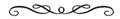
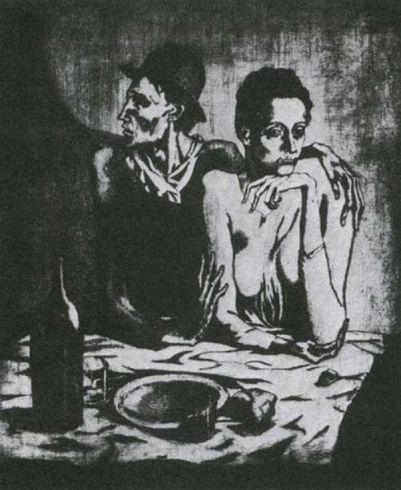
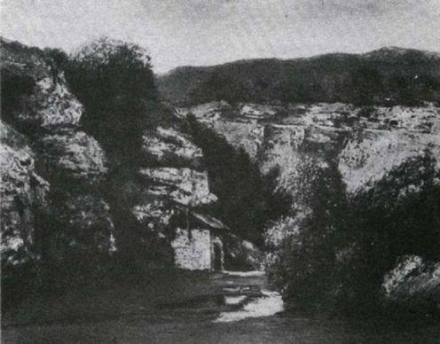
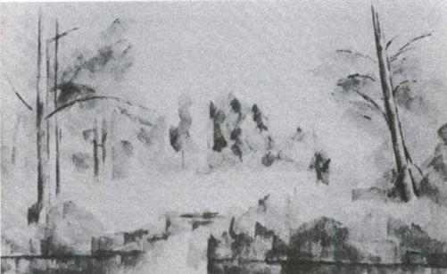
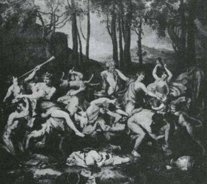
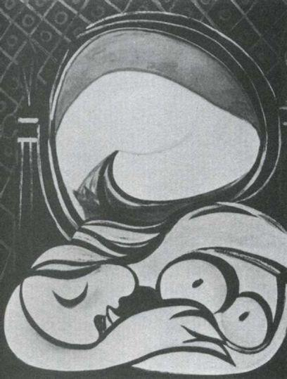

bugüne dek yaşamış sanatçıların hepsinden çok daha zengin ve ünlü durumda artık1. Servetinin haddi hesabı yok. Ben burada onun servetinin yalnızca bir yönünden söz edeceğim. Yaşamının her döneminden saklayarak biriktirdiği birkaç yüz yağlıboya tablodan oluşan bir koleksiyonu var. Bu koleksiyon —bugünkü fiyatları göz önüne alındığında— beş ilâ yirmi beş milyon sterlin değerinde.
Geçen yıl, yaklaşık 60x90 cm2 boyutlarında bir guvaş tablosu (normal olarak guvaşlar yağlıboya tablolardan daha ucuzdur), bir açık artırmada 80 000 sterline el değiştirdi. Şunu belirtmek gerekir ki bu resim 1905'te, Mavi Dönem denen süre içinde yapılmıştı; yoksulların son derece dokunaklı biçimde ele alınması nedeniyle bu dönem, zenginler arasında her zaman çok rağbet gördü. Bununla birlikte 1936'da yaptığı küçük, çok sıradan bir natürmort geçenlerde 10 000 sterlinin üstünde bir fiyata gitti. Picasso'nun kendi yapıtlarından oluşan koleksiyonu, çoğu yukardaki natürmorttan daha büyük boyutlu ve daha önemli en az beş yüz tabloyu kapsadığına göre beş milyon sterlinlik bir servetten rahatlıkla söz edebiliriz. Kuşkusuz bu yapıtların —ani bir doygunluk yaratmamak için— pazara ustalıkla sürülmesi gerekir.
İkinci Dünya Savaşı'ndan hemen sonra Picasso Fransa'nın güneyinde bir ev satın aldı ve buna karşılık bir natürmort verdi. Aslında Picasso şu anda para gereksinmesinin ötesine geçmiş durumda. Sahip olmak istediği herşeyi, o şeyin resmini çizerek elde edebilir. Burada gerçek, biraz Midas'ın fablına benziyor. Midas'ın dokunduğu herşey, altın oluyordu. Picasso da resmini çizdiği herşeyin sahibi olabiliyor. Ne var ki bu fabl gülünç olduğu kadar acıklıdır da; altın yenecek bir şey olmadığı için Midas neredeyse açlıktan ölüyordu.
Picasso'nun kazanma gücü ve serveti, bu inanılmaz boyuta 1950'li yılların başlarında ulaştı. Onun konumunu böylesine derinden etkileyen kararlar Picasso'yla hiçbir ilgisi olmayan kişilerce alındı. Amerikan hükümeti, Amerika'daki müzelerden birine sanat yapıtı bağışlayan vatandaşlarını gelir vergisinden muaf tutan bir yasayı kabul etti; vergi muafiyeti hemen uygulanıyor, oysa sanat yapıtı müzeye sahibi ölene dek teslim edilmeyebiliyordu. Bu yasa Avrupa'da bulunan sanat yapıtlarının Amerika'ya getirilmesini teşvik etmek amacıyla çıkarılmıştı. (Sanat yapıtlarına sahip olmanın iktidarı pekiştirdiği yolundaki büyülü inanç bugün de az çok sürmektedir.) İngiltere'de yasa —sanat yapıtlarının dışarıya gitmesini engellemek amacıyla—- değiştirildi; böylece veraset vergilerinin para yerine sanat yapıtıyla ödenmesi mümkün kılındı. Her iki yasa da, sanat dünyasında, galerilerdeki satış fiyatlarının yükselmesine yol açtı.
Fiyatların artmasının bir nedeni daha vardı. 1950'li yılların başlarında yatırıma yöneltilebilecek para miktarında benzeri görülmemiş bir artış oldu. Savaştan sonra girişilen yenileme çalışmaları, silahlanmanın getirdiği canlılık, gelişmiş ekonomilerin az gelişmişler pahasına güç kazanması; bütün bunlar ek bir sermaye birikimine yol açtı. Bu bile kendi başına sanata yapılan yatırımları hızlandırmaya yeterdi; ama bunu sağlayan ikinci —neredeyse daha insani denebilecek— bir neden vardı.
Yabancı ülkelere ve sömürgelere yatırım olanakları savaş öncesi günlere göre değişmişti. Söz konusu sermaye miktarları sıradan özel yatırımcının kendi başına karar alamayacağı ölçüde artmıştı: Özel yatırımcı, sermayesini artık yüksek düzeyde örgütlenmiş bir yatırım grubuna devrediyordu. Tekelci kapitalizm sıradan yatırımcı için de, sıradan çalışanı için olduğu kadar anonim niteliktedir. Bunun sonucu olarak bir yandan sermayesini görece güvenli bir alanda tutarken, bir yandan da kişisel kazanç ve heyecan getirecek, yan uğraş oluşturacak alan arayan yatırımcılar türedi. Bunlardan bazıları sanat alanına el attı. Böylelikle o dönemde sanat, bazılarının yaşamlarında bir zamanlar Güney Amerika'daki demiryollarının, Bolivya'daki kalay madenlerinin ya da Seylan'daki çay plantasyonlarının tuttuğu yeri aldı.
On yıl içinde sanat yapıtlarının satıldığı galerilerde fiyatlar en azından on katına çıktı.
Ancak Picasso daha 1950'li yıllara gelinmeden önce zengin olmuştu. Galeri sahipleri onun yapıtlarını 1906'da satın almaya başladılar. 1909'da, masada kendisine hizmet edecek kepli, önlüklü bir hizmetçi tuttu. 1912'de Provence'ta, badanalı bir duvarın üstüne resim çizdiğinde, tablolarını satan galeri sahibi duvarı söktürüp resmi hiç zedelenmeden Paris'e göndererek uzmanlarca tahta bir panel üzerine yeniden monte ettirmeye değer bulmuştu. 1919'da Picasso Paris'in en mutena semtlerinden birinde geniş bir kata taşındı. 1930'da ikinci ev olarak kendisine on yedinci yüzyıldan kalma Château de Boisgeloup'u satın aldı.
1 Château de Boisgeloup, Normandya
Picasso, yirmi sekiz yaşından itibaren para sıkıntısından kurtuldu. Otuz sekiz yaşından itibaren zengindi. Altmış beş yaşından sonra da milyoner oldu.
Ünü de servetiyle doğru orantılı olarak arttı. Başlangıçta ünü servetinin önünde gidiyordu elbette: Picasso'nun ilk kez galeri sahiplerinin dikkatini çekmesini sağlayan şey, arkadaşları ve diğer ressamlar arasındaki ünüydü. Bugünse ününün artmasını sağlayan şey zenginliğidir.
Picasso adı, kendi başbakanlarının adını dahi bilmeyen insanlar tarafından bilinir. İngiltere'de Picasso, Raphael’in İtalya'da olduğu kadar ünlüdür. Fransa'daysa Robespierre kadar. Arkadaşlarından biri, eleştirmen Georges Besson daha da ileri gidiyor. "Hiçbir şey," diyor "Buda ya da Meryem Ana'dan daha tanınmış, bir kalabalıktan daha devingen olan Picasso kişiliğini tanımlamaya çalışmak kadar zor olamaz." Bugün de Picasso'nun arkadaşlarından sık sık duyduğumuz bir abartmadır bu. Ancak başka hiçbir ressamın bu kadar çok insan tarafından tanınmadığı da kesindir.
Bu durumun teknik açıklaması kitle iletişim araçlarında yatar. Bir insan, şu ya da bu nedenle bir kez seçildikten sonra, onu tanıyanların sayısını binlerden milyonlara çıkaran, kitle iletişim araçlarıdır. Picasso örneğinde bu dönüşüm, ünün niteliğini de değiştirmiştir. Picasso, seksen yıl önce Millet'nin Fransa’da ya da Millais'in İngiltere'de olduğu biçimde ünlü değildir. Bu ressamların ünlü olmalarının nedeni tablolarından iki ya da üçünün çok tutulması ve reprodüksiyonlarının milyonlarca eve asılmasıydı. Tabloların isimleri —Cherry Ripe ya da The Angelus— ressamların adından çok daha iyi tanınıyordu. Bugün dünya çapında bir araştırma yapılacak olsa, Picasso adını bilenler arasında onun bir tek yapıtını tanıyabileceklerin sayısı yüzde biri geçmez.
Ününün boyutları açısından Picasso'yla boy ölçüşebilecek tek sanatçı Charlie Chaplin'dir. Ancak Chaplin, tıpkı sözü edilen on dokuzuncu yüzyıl ressamları gibi yapıtlarının tutulması sayesinde ün kazanmıştır. Seyircilerin gerçek Chaplin’i gördüklerinde nasıl hayal kırıklığına uğradıklarını, çünkü bastonundan bıyığına tam bir Şarlo görmeyi beklediklerini anlatan pek çok öykü vardır. Chaplin örneğinde sanatçı —daha doğrusu onun sanatı— kişinin kendisinden çok daha önemli olmuştur. Picasso örneğindeyse sanatçının kendisi, kişiliği, sanatını gölgelemiştir. Bunun neden böyle olduğunu açıklamak için vakit henüz çok erken. Ancak bu, sık sık geri dönüp ele alacağımız bir konu olacak.
Belki burada bir adı tanımanın, kişiliği tanımakla aynı şey olmadığını söyleyeceksiniz. Ne var ki anımsanan herşey bir dizi çağrışımı da kendine çeker, peşi sıra getirir. Picasso adının çevresindeki çağrışımlar, onun kişiliğiyle ilgili bir efsane oluşturuyor. Picasso, kendisine hâlâ genç eşler bulabilen yaşlı bir adamdır. Picasso bir dahidir. Picasso çılgındır. Picasso yaşayan en büyük sanatçıdır. Picasso bir mülti-milyonerdir. Picasso komünisttir. Picasso'nun yapıtları saçmadır: Çocuk bile daha iyilerini yapabilir. Picasso bizi kandırıyor. Picasso bütün bu yaptıklarını bizlere yutturabiliyorsa, canına değsin! Picasso adının Avrupa'da yaptığı çağrışımlar bu türden şeylerdir. Görünürde bazı çelişkiler olması mümkündür —hatta kaçınılmazdır— çünkü mitolojik kişiliklere sıradan mantığın uygulanması şart değildir, uygulanmamalıdır da.
2 Picasso ve Françoise Gillot, Golfe Juan'da. 1948
Bütün bunları abarttığımı mı sanıyorsunuz? Son elli yılda, burjuva toplumunda gelişen insanlık dışı baskılar altında, ussal olmayan şeylere karşı müthiş bir açlık belirdi. Picasso'nun yaşam boyu dostu olan Jaime Sabartes, onun yarı-resmî bir yaşam öyküsünü yazmıştır. Sabartes, Picasso'yu tanrıların efsanevi dünyasına şöyle yüceltiyor:
Picasso zamanın akışını engelleyebilseydi, bütün saatler durur, saniyeler yok olur, günler sona erer, dünya dönmesini durdurarak onun bu kararından vazgeçmesini beklerdi. Ve dünyayı durduran gerçekten Picasso'ysa, bu bekleyiş boşuna olurdu. Ben Picasso'yu böyle görüyorum ve o böyle kalmalı. Yazgısının peşinden özgürce gidebilmesi için gereklidir bu...2
Başlangıçta şaşırtıcı gelse de, Picasso üzerine uzmanların görüşü, özünde halk arasındaki yaygın görüşe çok benzer. Uzmanlar Picasso’nun yapıtlarına değer verebilirler; ama her fırsatta bize Picasso'yu yalnızca bir ressamdan başka —ya da öte— bir şey olarak sunarlar.
İspanyol şairi Ramon Gomez de la Serna, 1932'de dostu Picasso üzerine şunları yazıyor:
Doğduğu kent olan Malaga’da, Picasso'nun aslında ne olduğuna ilişkin bir açıklama buldum; onun ne ölçüde bir boğa güreşçisi olduğunu —en iyi boğa güreşçileri çingenelerdir— ve yaptığı şey ne olursa olsun, bunun gerçekte boğa güreşinden başka bir şey olmadığını anladım.
Jean Cocteau, 1950'li yılların sonlarında şunları yazıyordu:
Bir nesneler alayı gider Picasso'nun peşinden; tıpkı hayvanların Orfe'nin peşine takılıp gitmeleri gibi. Ben Picasso'yu böyle sunmak isterim işte: Ne zaman yeni bir nesneyi ele geçirse, alışkanlığın gözüyle tanınamayacak bir biçime girmeye zorlar onu. Biçimlerle oynayan bu büyücümüz, çöp toplayıcıların kralı kılığında, işine yarayacak bir şeyler bulmak için sokakları talan eder.
Ben de resmi sözcüklerle anlatmanın güçlüğünü, imge ve eğretilemelere yaslanmanın gereğini herkes kadar takdir ediyorum. Ancak Picasso'nun arkadaşlarının kullandığı imgelerin hepsi resim sanatını aşağılıyor gibidir. İnsan bunları okudukça giderek kendi başlarına Picasso yapıtlarının önemsiz olduğu duygusuna kapılıyor. Arkadaşlarından biri —İspanyol heykeltraş Manolo— açıkça şöyle diyor: "Picasso için resim bir yan uğraştır aslında.”
Bir çok başka ilgi alanı bulunsa, Picasso enerjisini resimle bu diğer alanlar arasına bölüyor olsa, bu söz anlamlı olurdu. Hatta Picasso, kendisini temelde başkalarıyla kurduğu ilişkilerde dışa vuran son derece sosyal biri olsa, bu söz gene biraz anlam taşıyabilirdi. Ancak durum hiç de böyle değildir. Picasso tek yönlüdür; büyülü bir gücün eline düşmüş bir adam gibi çalışır ve tüm ilişkileri şu ya da bu ölçüde sanatının gereklerine uydurulmuştur.
O halde açıklama nedir? Picasso yaratıcılığına hayrandır ve kendini ona adamıştır. Yarattığı şey —bitmiş ürün— ikincil önem taşır. Bu, tüm sanatçılar için bir dereceye kadar geçerlidir kuşkusuz; diğer sanatçıların da bir yapıta duydukları ilgi, yapıt biter bitmez söner. Ancak Picasso'nun durumunda bu, çok daha belirgindir. Onun çalışma biçimini bile etkiler. Bir resmin yaratılışı sırasında ilerleme diye bir şey olduğunu yadsır Picasso: Her değişim, her adım, —onun deyişiyle— her metamorfoz, yalnızca Picasso'nun kendisindeki yeni bir durumun yansımasıdır. Çünkü Picasso için kendisinin ne olduğu, ne yaptığından çok daha önemlidir. Picasso, gözettiği bu öncelliği tüm sanata yansıtır:
Önemli olan bir sanatçının ne yaptığı değil, ne olduğudur. Yaptığı elmalar şimdikinden on kat güzel bile olsa, Cézanne eğer Jacques-Émile Blanche gibi yaşayıp düşünmüş olsaydı beni hiç mi hiç ilgilendirmezdi. Bizi ona ilgi duymaya zorlayan Cézanne'ın kaygısıdır; Cézanne'ın bize verdiği ders budur işte; ve Van Gogh'un iç fırtınaları —bir insanın gerçek dramı budur. Gerisi boştur.3
Elbette ne Cézanne, ne de Van Gogh katılırdı bu sözlere. Bu ressamların her ikisi de ürettikleri şeye kendilerince tutkundular; her ikisi de, yaşamlarını yalnızca ve yalnızca yapıtlarıyla doğrulayabileceklerini biliyorlardı. Cézanne şöyle diyordu: "Gerçekten güç olan tek şey, insanın inandıklarını kanıtlayabilmesidir. Bu yüzden durmadan araştırıyorum ben..."
Gene de Picasso'nun bu tutumu erken Romantikler arasında bir yankı bulabilirdi —aslında bunu ilk dile getirenler onlar olmuştu. Erken Romantiklerin gözünde yaratıcı ruh yüceydi; bunun somut ifadeleri yalnızca rastlantısal olmakla kalmıyordu, bayağıydı da.
Tatlıdır duyulan ezgiler, ancak duyulmayanlar
Daha da tatlı....
On dokuzuncu yüzyılın başında bu gerekli bir inançtı; giderek güç kazanan burjuva dünyasının herşeyi, bu arada sanatı da metaya dönüştürmesi karşısında sanatçıların kendi varlıklarını sürdürebilmelerini sağlayan şey buydu. Yaratıcı ruh, bir varoluş biçimi olarak deha, kendi içinde bir amaç olarak kutsanıyordu çünkü fiyat biçilemeyen, satın alınamayan bir tek o kalmıştı.
Bu ikicilik, şu anda burjuvazinin sanata karşı takındığı tavrın özünü oluşturuyor. Bir yanda dehanın görkemi ve gizemi, öte yandaysa satılabilir bir meta olarak sanat yapıtı. Bu iki tutum arasındaki grotesk çatışmayı anlamak için herhangi bir resim satıcısının sözlerine kulak vermek yeter. Altın üzerinden yürütülen pazarlıklar, bunun iyi bir yatırım olacağı yolunda verilen güvenceler; sonra yapıtın elle tutulamaz nitelikleriyle ilgili sıfatlar ("heyecan verici", "güçlü", "olağanüstü", "fantastik").
Bu ikicilik, halkın kafasında yaşattığı —gerçekle hiç ilgisi olmayan kitaplar ve filmlerin de desteklediği— deha imgesinde de örtük olarak bulunur. Dahiler, (çılgınlık, dış dünyayla ilişkinin kopuk olması, içki düşkünlüğü nedeniyle) kendi maddi çıkarlarını gözetemez; bu beceriksizlik de dehanın bir kanıtı olarak görülür.
Aynı ikicilik —bu Romantik yanılsamanın son mirası— sanat kitaplarının bugün standartlaşmış yazılma yönteminde de görülebilir. Okurun, reprodüksiyonlarını gördüğü resimler —sanki envanteri tutuluyormuşcasına— kılı kırk yararak tanımlanır. Bu resimlere, stoklanmış mal gözüyle bakılır. Daha sonra bu tanımlara resimleri üreten kişiye deha atfeden bazı sözcükler eklenir. Bu sözler, büyülü bir ezgi gibi yükselir. Yazar, tellallık yapan bir papaza dönüşür. İşte tipik bir örnek:
3 Picasso. Yaşlı Adam. 1895
O zamandan kalma bu yaşlı dilenci portresi ileri bir teknik ustalık sergiler. Picasso'nun bu ve buna benzer diğer ilk dönem resimlerinde, Velazquez'in ünlü Sevilla'lı Sucu gibi önemli tablolarından esinlenmiş olduğu kuşku götürmez. Modelin yağlı cildinin, yapış yapış saçlarının, kaba giysilerinin mükemmel bir gerçekçilikle aktarılmasının yanı sıra, figürün anlık niteliğini vurgulayan ve ciddi, düşünceli yüz ifadesine büyük ölçüde katkıda bulunan ışık ve gölgeleri canlı bir biçimde üst üste bindiren zengin, geniş fırça darbelerinin kaynağı bu esinlenmedir, öte yandan bu resimde hiçbir şey, kopyayı akla getirmek şöyle dursun, taklidi de çağrıştırmaz; tıpkı Picasso'nun daha sonraki yapıtları gibi bu gençlik tablosu da ressamın kendi çabasının olağanüstü yoğunluğuyla nitelik kazanmıştır. Tarihsel modellerden esinlenen tüm yapıtları gibi bu da gördüğü herşeyi ateşli bir hevesle özümseyip içinde yakan ve küllerinden yalnızca Picasso'ya özgü yepyeni bir şey olarak yeniden yaratan bir zihni sergiler bize...4
Burada söylenenler yanlış değildir. Ancak bunların tabloyla doğrudan bir ilişkisi yoktur. (Tabloyla doğrudan ilişkisi olabilecek şeyler, ressamların neden dilenci resmi yaptıkları, İspanyollar'ın yoksulluğa karşı takındığı özel tavrın ne olduğu, yaşlılığın insanın üstündeki giysileri nasıl değiştirdiği, on dört yaşında bu resmi yaparken Picasso’nun, kendisine öğretilmiş olan, taşraya özgü bezemeci resim sanatının yetersizliklerini fark edip etmediği vb. dir.) Yapıtı evrensel bir insan deneyimiyle bağıntılı olarak görme açısından tam bir yetersizlik söz konusudur bu yazıda. Tersine resim betimlenir, kimliği belirlenir ve bir nesne olarak iyi bir yere oturtulur; bu arada Picasso da —daha on dört yaşındayken— Velazquez'in yanı başına yerleştirilip anka kuşuna benzer büyülü bir deha olarak yüceltilir.
Bununla birlikte, burjuvaların sanata karşı edindikleri tutumda korunmuş olan bu romantik yanılsama sanatçılar tarafından kabul görmemiştir. Erken dönem Romantikleri'nin çalışmalarını sürdürmelerini sağlayan şey, inançlarından kaynaklanan geçerli bir varsayımdı. On dokuzuncu yüzyılın ortalarına gelindiğinde —yüzyılın sonlarına doğru artarak— daha yeni ve daha gerçekçi bir varsayım öne sürülmeye başlandı. Burjuva iktidarı sonsuza dek sürmeyecekti. Toplum değişiyordu ya da değiştirilecekti. Bu nedenle gelecek farklı olacaktı. Buradan, önemli sanatçının zamanının ötesinde olacağı sonucu çıkartılabilirdi. Yapıtlarının 1880'de okunmaya, 1935'te de anlaşılmaya başlayacağı kehanetinde bulunan Stendhal, bu sonucu gören ilk kişilerden biriydi.
Stendhal'dan bu yana, başka açılardan ne denli Romantik olurlarsa olsunlar büyük sanatçıların hepsi —geleceğe kalabilecek tek şey olan— yapıtlarının, yaşamlarını anlamlı kılacağına inanarak yaşadılar. Sanatçı artık kendini, bütünüyle yapıtında var etmeye çalışıyordu; bilincine vardığı ölçüde yaratıcılık ruhunu, yalnızca bunu başarabilme, kendisi ne ise onu, yaptığı şeye dönüştürebilme yetisi olarak görüyordu. Bu, Flaubert için olduğu ölçüde Cézanne, Gauguin, Seurat, Van Gogh, Rodin, Yeats ya da James Joyce için de doğrudur. Pek önemli olmayan —Maeterlinck gibi— birkaç sanatçı sessizliğin sesten daha müzikal olduğu yolundaki romantik yanılsamayı canlandırmaya çalıştılar; ancak onların çalışmalarını doğrudan belirleyen bir şey değildi bu: Dünyanın insafına kalmış sanatçının yenilgiyi efendice kabullenişiydi.
Picasso'nun kuşağındaki önemli sanatçılar da öncüllerinin tutumunu benimsediler. Gerçekten de Van Gogh ya da Cézanne'a duydukları hayranlık, bir ölçüde onların yapıtlarını devralmış oldukları, görevlerinin de bu mirası sürdürmek ve geliştirmek olduğu duygusundan kaynaklanıyordu. Bütün güçleriyle daha önce yapılmış olanlarla yapılması gerekenlere yoğunlaşıyorlardı. Aralarından —Matisse ya da Braque gibi— büyük başarıya ulaşanlar kendilerini haklı çıkarma telaşından sıyrılmış olabilirler. Ancak, bu kuşağın gözünde "aslolan sanatçının yaptığıdır" inancının ne kadar önem taşıdığını anlamak için, Juan Gris ya da Apollinaire gibi böyle bir başarıya erişemeden ölen kişilerin yazdıklarını okumak yeter. 1918’deki ölümünden kısa bir süre önce Apollinaire şairlerin yeni ruhu üzerine bir makale yazmıştı:
Şairin toplamış olduğu bir malzeme vardır, yeni ruhun açığa çıkardığı bir malzeme; bu malzeme basitliği yadsınmaz, büyük, çok büyük şeylere yol açacak bir gerçeğin temelini oluşturacaktır.
Bu yaşam çizgisi, onların yapıtları boyunca sürer gider.
Ancak Picasso için geçerli değildir bu. Bir istisnadır o. "Önemli olan sanatçının ne yaptığı değil, ne olduğudur."
Picasso'nun tarihsel açıdan belirsiz konumunun ilk izlerini burada görüyoruz. Dünyanın en ünlü ressamıdır o, ve ünü modernliğine dayanır. Modern sanatın tartışılmaz imparatorudur. Bununla birlikte Picasso'nun sanata ve sanatçı olarak kendi yazgısına karşı takındığı tavırda hiç de modern olmayan, daha çok on dokuzuncu yüzyılın başlarına yakışan bir eğilim var.
Dahası bu tarihsel belirsizlikle, Picasso'nun başarısının niteliği ve derecesi arasında bir bağlantı var sanki. Arkadaşlarının tanıklığıyla desteklenen en yaygın Picasso miti, gerçekte Picasso tarafından algılandığı şekliyle gerçeğin pek de çarpıtılmış bir hali değil. Picasso'nun bir varlık biçimi olarak dehaya olan Romantik inancı, bu mite katkıda bulunuyor. Ressamın hiçbir büyük çağdaşının çalışma tarzı, kendisine karşı aldığı değişken tavır, böyle bir miti besleyecek malzemeyi üretemezdi. Oysa Picasso örneğinde, bir varoluş biçimi olarak dehadan bir yarı-tanrının kutsallığına geçmeye bir adım kalmıştır.

Burada niyetim, Picasso'nun efsanevi kişiliğinin, yalnızca onun sanatçı olmanın anlamı üzerinde kendi görüşlerinden kaynaklandığını öne sürmek değil. Picasso, hakkında efsaneler yaratılmasını kışkırtacak, son derece güçlü bir kişiliğe sahiptir. Bu anlamda onu belki Napolyon'la karşılaştırmak mümkün. Kuşkusuz Picasso'da da, Napolyon'daki kendine kullar edinme ve bunları koruma gücü var. Kendisini kişisel olarak tanıyanların arasından onu eleştiren pek çıkmıyor. Ne yaptığı bir yana, Picasso'nun ne olduğu kuşkusuz hayret verici —belki de özellikle tanımlanamaz olduğu için böyle bu. Unutulmaz olan onun söyledikleri ya da yaptıkları değil; varlığı —içinde olup bitenlere ilişkin olarak yakalanan ipuçları.
Son yıllarda, bir insan olarak Picasso hakkında söylenenler iyice garipleşmiştir. Picasso, çevresine bir maiyet toplamış, kendisi de kral olmuştur. Böyle dalkavukluklarla çevrelenip yalıtlanması, sonuçta onu tanıyanların görüşlerinde de, kendi yapıtları üzerinde de yıkıcı etkiler yapmıştır. Krala övgüler düzme adına, mide bulandırıcı bir şiirselliğe düşülmüştür. Nitekim Georges Besson 1952'de şunları yazmıştır:
Ha, söylemeyi unutuyordum —yoksa söylemiş miydim?— zevklerinde hiç de aşırıya gitmeyen bu adamın kara elmaslara bir düşkünlüğü var. Bir çift harika kara elması var ve bunlardan asla ayrılmıyor. Elmasların her biri yüz kırat değerinde. Picasso bunları herkesin gözlerinin olduğu yere takmış. Vallahi böyle. Sizi temin ederim ki bu elmasların ateşini yönelttiği kadınlar yanıp tutuşuyorlar.
Aslında bu dalkavuklar ortaya çıkmadan önce de, Picasso hakkında yazı yazanlar onun gözlerini özellikle çarpıcı buluyorlardı. Fernande Olivier 1904'te onunla tanışmasını anlatırken şunları yazıyor:
Ufak tefek, esmer, tıknaz, huzursuz, rahatsızlık veren biri; kara, derin, insanın içine işleyen, garip, neredeyse üzerinize dikilen gözler. Picasso'nun gözleri [diyor, aşağı yukarı aynı dönemden söz ederken Gertrude Stein] aklımda kaldığından daha da müthişti; öylesine iri ve koyu, elleri de öylesine esmer, ince ve çevikti.
1920'de, Picasso'nun son sergisinde umut kırıklığına uğrayan Maurice Raynal şöyle yazıyor: "Gözlerindeki yıldızlardan bazıları sönmüş."
Böylece gözleri, bütünüyle o kişinin simgesi olup çıkıyor.
Picasso üzerine yapılmış filmlerde, gözlerini kendiniz de görebilirsiniz. Bu gözler, onun iç yaşamındaki oransız yoğunluğu, aynı zamanda bu yaşamın yalnızlığını açığa vurur gibidir —ya da bana öyle geliyor.
Yavaş yavaş, Picasso'nun öznel yaşantısının genel yapısı ve eğilimi üzerine düşünmeye zorlanıyoruz. Kendisinin de yapıtlarından daha değerli bulduğu, varlığına güç katan, gözlerinde alev alev yanan bu ruhu nasıl tanımlamalı?
Picasso 1881'de Malaga'da doğdu. Malaga'dan Atlas dağlarını görebilir, rüzgâr güneydoğudan estiği zaman da çölün kokusunu duyabilirsiniz. Picasso orta sınıf bir ailedendi; hem anne hem baba tarafından ataları birkaç kuşaktır Malaga'da yaşamaktaydı. 1900'de, 19 yaşındayken hayatında ilk kez İspanya’dan ayrılarak Paris'te birkaç ay kaldı. 1904'te tamamen Paris'e yerleşti. 1904-1934 arasında İspanya’ya tatil amacıyla ya da resim yapmak üzere yaklaşık altı kez döndü. 53 yaşına bastığı 1934 yılından sonra İspanya’ya bir daha hiç gitmedi. Yaşamının büyük bir bölümünü gönüllü sürgünde geçirdi.
Sürgünlük durumu, öznel etkileri açısından bakıldığında, hiçbir zaman aynı kalmaz: Ya zamanla kendinizi daha da sürgün hissedersiniz, ya da benimsediğiniz ülke sizi giderek daha çok soğurur. Picasso Fransa'yı gerçekten benimsedi; Fransa da onu. Arkadaşları Fransız'dı; kendisi Fransızca konuşuyordu, sonunda Fransızca yazmaya başladı. Fransız vatanseverliğini de paylaşabiliyordu. (Vatanseverlik —Almanlar’ın Fransız topraklarını 1870, 1914 ve 1940'ta üç kez işgal etmelerinin sonucu olarak— Fransız aydınlarının yaşamında, aynı dönem İngiliz aydınlarının yaşamında olduğundan çok daha önemli bir öğeydi.) Fransa da Picasso'nun dehasını farketti; ün kazanmasını sağlayarak 1945'te bu ünü dünyaya yaydı. Gene de ve bütün bunlara karşın, ben Picasso'nun kendini giderek daha çok sürgünde hissettiğine inanıyorum.
Fransa, onun derinde yatan gereksinmelerini karşılayamıyordu. Picasso tek başına kaldı. Yalnızlık, bugün Batı Avrupa ve Kuzey Amerika'nın büyük kentlerinde öylesine yaygındır ki bu terim yalnızlığın bin bir türünü kapsamak durumundadır. Yaşlı emekliler park banklarının üzerinde yapayalnızdırlar. Perdelerinin ardından dış dünyayı seyreden yaşlı milyonerlerin de yalnızlık çektiği söylenir. Kimileri kalabalığın ortasında yapayalnızdır, kimileriyse yalnız kalmamak için sürekli birilerini ararlar. Yalnız olabilmek büyük insanlara özgü bir üstünlüktür diyerek kendimizi avutmaya çalışırız. Oysa Picasso'nun yalnızlığı, eğer yanılmıyorsam, bu kategorilerden hiçbirine girmez. Picasso’nunki, bir delinin yalnızlığına benzer: Deli, kendine kimse karşı koymadığından, istediği herşeyi yapabileceğini sanır. Aslında bu — çelişik görünse de— kendi kendine yetmenin getirdiği bir yalnızlıktır. İlle de insana doğrudan acı veren bir yalnızlık değildir; onu durmamacasına etkinliğe iten, rahat huzur vermeyen bir yalnızlıktır. Akıl hastanesinin en kötü yanı, içindekilerin doğal uyku uyuyamamalarıdır. Belki de bu benzetmeyi kullanmakla aptallık ettim; çünkü Picasso'nun deli olduğu yolundaki kaba inancı pekiştirmiş oluyorum. Picasso deli değildir. Gene de anlatmak istediğimi bu denli açık örnekleyecek başka bir karşılaştırma yok. Bunun nedenini açıklayabilmek için, Picasso'nun sürgünde yoksun kaldığı şeyin ne olduğunu görmek gerekir: çocukluğunun ve gençliğinin İspanyası.
Picasso, on yaşına dek Malaga'da yaşadı. Sonra ailesi İspanya’nın Kuzey Atlantik kıyısındaki Corunna'ya taşındı. 14 yaşındayken de Barselona'ya taşındılar. Her iki kent de —gerek iklim, gerek tarih, gerekse atmosfer açısından—- öbür kentlere hiç benzemez. İspanya üzerine yazmanın zorluklarından biri de, tek değil, birçok İspanya'nın bulunmasıdır. İspanya —ekonomik ve toplumsal anlamda— henüz birliğe erişmemiştir. İki İtalya'dan söz edilir: Roma'nın kuzeyindeki ve güneyindeki. En azından altı değişik İspanya’dan söz etmek gerekir. Bu canalıcı bir noktadır, çünkü bize İspanya'nın tarihsel açıdan Avrupa'nın gerisinde kaldığını hatırlatır. İspanya ayrıdır.
Coğrafi konumu ve Hıristiyanlığın bir parçası oluşu, bizi yanıltır. İspanya'nın Haçlı Seferleri'nden bu yana, hiçbir ülkenin ait olmadığı bir Hıristiyanlığı temsil ettiğini söylemek daha doğru olacaktır. Coğrafi konumuna gelince —yeni bir gözle bakıldığında— İspanya Türkiye ile karşılaştırılabilir. Kuşkusuz İspanya’nın Avrupa kültürüne katkısı olmuştur ama bu da yanıltıcıdır. Bu katkı yalnızca edebiyat ve resimle sınırlıdır. Toplumsal gelişmenin karşılaştırmaya daha açık biçimlerine doğrudan dayanan sanatları ya da bilimleri içermez; İspanya, Avrupa mimarisi, müziği, felsefesi, tıbbı, fiziği ya da mühendisliğine çok az katkıda bulunmuştur. Şu bile söylenebilir: İspanyol resmi ve edebiyatı, İspanya'nın içinde, dışındakinden daha az etki yaratmıştır. Bu resim ve bu edebiyat, daha ziyade Pireneler’in ötesinde, Avrupa'da yer alan bir yaşama biçimini düşleyebilecek olanlara özgü sanatlardı.
4 İspanya'dan bir görünüş.
5 Biber toplayan İspanyol köylüleri.
İspanya ayrıdır; çünkü İspanya hâlâ feodal bir ülkedir. Yetmiş yıl önce, Picasso çocukken, bu feodallik bugünkünden çok daha az değişikliğe uğramıştı. O zamanlar işçilerin dörtte üçünden çoğu toprakta çalışıyordu. Aletleri ilkeldi ve iş bölümü henüz başlangıç aşamasındaydı. Pek çok bölgede üretim yalnızca ev ya da köy kullanımı için yapılıyordu. Toprak sahipleri, topraklarını kiralayanlardan çeşitli biçimlerde zorunlu emek hizmeti alıyorlardı. Toprak sahipleri, "cacique" sisteminden dolayı, köylüler üzerinde ölüm kalım kararı denebilecek bir hakka sahiptiler. Tüm bunlar feodalizmin klasik belirtileridir. Ancak katıksız klasik feodalizm belki de bir soyutlamadır. Geçen yüzyıl sonunda İspanya'da rastladığımız feodalizm, karmaşık ve katışıklıydı.
Bu noktada İspanyol tarihini irdeleyecek bilgi donanımına sahip değilim. Bununla birlikte, kabataslak birkaç genelleme ve bir iki örnekle, kısaca da olsa, Picasso'nun doğduğu dönemde İspanya'nın içinde bulunduğu gelişmeleri açıklamadan geçemeyeceğim. Onun ruhunu ancak böylelikle anlayabileceğimize inanıyorum.
İspanya'da feodalizm —birbirine karşıt iki açıdan— karmaşık ve çarpıktı. Bir yandan bu ülkede feodalizm öncesine ait pek çok şey bulunuyordu; öte yandan —nüfusun yaklaşık beşte birini oluşturan— çok geniş bir yönetici orta sınıf vardı.
Feodalizm öncesi "kalıntılar", çoğunlukla İspanya'nın yalıtılmış ve ulaşılamayan kırsal bölgelerindeydi —aslında bu tanım ülke topraklarının çoğunu kapsıyor. Örneğin Bask bölgesi ve Navarre'de, onuncu yüzyıldan beri süregelen ve klan sistemine dayanan bir toprak imtiyazı düzeni hâlâ geçerliydi. Endülüs'ün uçsuz bucaksız, hemen hemen hiç işlenmemiş topraklarında emek sistemi, Ortaçağ feodalizminden çok, Roma'daki kölelik sistemine benziyordu. İspanya'nın merkezindeki düzlüklerde, Kastilyalı koyun ve büyükbaş hayvan yetiştiricileri, temelde göçebeliğe ve kabile düzenine dayanan bir hayat sürüyorlardı. Ancak, bunların arasında belki de en önemli "kalıntı", ortalama İspanyol köylüsünün bilincindeki kalıntıdır. Her nasılsa İspanyol köylüsü —kesin örgütlenme biçimi bölgeden bölgeye büyük değişiklikler gösteren— bir komünal yaşam biçimini belleğinde taşır. Hiç değişmeyen, acı veren yoksulluğuyla birleşen bu anı, onu özel mülkiyetten nefret etmeye ve bir özgürlük fikrine tutunmaya götürdü —Söz konusu fikrin, Fransız Devrimi'ndeki liberté ile hiç ilişkisi yoktu; bu, ilkel, kendiliğinden oluşmuş, küçük bir topluluk içindeki bireyin özgürlüğü ve onuruydu. Daha sonra, İç Savaş'ta, parayı olduğu gibi ortadan kaldırmak isteyen köylüydü bu birey.
İspanyol orta sınıfı, on altıncı yüzyılda, Engizisyon'u, Güney Amerika'daki sömürgeleri, İtalya ve Kuzey Avrupa'daki işgal edilmiş toprakları yönetmek için kurulmuş bir bürokrasiyle birlikte ortaya çıkmıştı. Ta başından beri bu bürokrasi, üretici olmayan çok geniş bir kitleydi. Bürokrasinin kurulmasından yüz yıl sonra, Madrid'deki Venedik büyükelçisi şunları yazıyordu:
Becerebilen herkes, devletin sırtından geçiniyor. Hükümet görevlerinin sayısı artırılmış. Yalnızca Hazine'de, 40 000'i aşkın memur çalışıyor; bunların çoğu da kendilerine bağlanan maaşın iki katını çekiyor kasadan. Bununla birlikte, tuttukları hesaplar içinden çıkılmaz, belki de kötü niyetli bir belirsizliğe bürünmüş; bunlardan herhangi bir sistem ya da sonuç elde etmek olanaksız.
Aynı dönemde vergi toplamakla görevli 24 000, Engizisyon'un hizmetinde parayla çalışan da 20 000 kişi vardı. Bu rakkamlar, bu sınıfın ekonomik bakımdan ne denli gerçekdışı olduğu konusunda bir fikir verebilir.
Başlangıçta, sınıfın devamını Güney Amerika'dan gelen altın ile Flaman sanayii sağlıyordu. Daha sonra, İspanya'nın iktidarını yitirmesiyle bu yük İspanyol ekonomisinin omuzlarına bindi; oysa İspanyol ekonomisi kesinlikle bu yükü taşıyacak durumda değildi. Sürekli bir yoksulluğun içine düşüldü; ekonomiyi düzeltmek için hiçbir çabaya girişilmiyordu çünkü orta sınıf diye adlandırılan bu kesim, sermayeyle üretim arasındaki bağlantıyı anlamaktan acizdi: Bunu anlamaya çalışmak yerine, taşralı bir tedbirsizliğin içine düşerek yalnızca "bağlantıları"nı güçlendirmeye çalıştı. Geçen yüzyılın ortalarına gelindiğinde, köy postacıları bile mevkiilerini —uzun bir aracılar zincirinden geçerek— Madrid'de bir bakana borçluydular. Hükümet düştüğünde bu postacıların yerini yeni hükümeti "destekleyenler” alıyordu.
İspanya'nın genel, tipik tarihi böyleydi; elbette istisnalar da vardı. Picasso'nun zamanında, kuzeyde küçük çapta da olsa, kapitalist sanayi girişimleri başlamıştı. Orta sınıftan gençler orduya katılmış, İspanya'yı "modernleştirmek" için junta planları yapmaya başlamışlardı. Belli mesleklerde, Avrupa etkisinde, liberal bir gelenek vardı. 1873'te, Cumhuriyet ilan edilmiş ama ömrü yalnızca bir yıl sürmüştü.
Belirtmek istediğim şey, Picasso'nun da içinde yetiştiği İspanyol orta sınıfının —aynı elbiseleri giyip kimi aynı kitapları okusalar da— Fransız, İngiliz ya da Alman çağdaşlarıyla pek az ortak yanlarının bulunduğudur. İspanya’da görülen türden orta sınıf erdemleri zorunluluk'tan doğmuş değildi; varoldukları kadarıyla bu erdemler kuramsal olarak üretilmişti. Başarılı bir burjuva devrimi olmamıştı. Mutlakiyetçi devlette orta sınıfın bağımsız gücü yoktu; bu nedenle de inisiyatif, çalışma ruhu, toplumsal değerlere karşı çıkma, tutumluluk, bilimsel merak gibi erdemlerin varolması için bir neden yoktu. Tam tersine, İspanyol orta sınıfının tarihi, bunlara taban tabana zıt özellikleri beslemişti. Engizisyon gerek dinsel, gerekse ırksal anlamda en sert Ortodokslukta direniyordu; Yahudiler ve Mağribiler aşağı ırktan sayılıyordu: Şiddet ve bağnazlık yüklü bir züppelik gelişmişti. Aynı biçimde devlet bürokrasisi de inisiyatifi köreltiyor, güvenliği tehdit etmeyen tembelliğe yeşil ışık yakıyordu. Zamanla, çok çalışmanın insan onurunu zedeleyici bir şey olduğu düşünülmeye başlandı. İspanyol orta sınıfının enerjisi, olaylara geçmişten toparlanmış bir anlam yükleyen, yenilikçiliğin kendisini de, düşüncesini de dışarıda bırakan bir törenciliğe yönelmişti.
6 Lorca da Paskalya geçidi.
Bununla birlikte İspanyollar'ın, Fransa ya da İngiltere'de olduğu gibi, ilerlemenin bedelini ödemek zorunda kalmadıklarını da unutmamak gerekir. İspanyollar arasında en zenginler bankacılar değil, toprak sahipleriydi. Sınıf olarak Kilise'ye, malikânelere, orduya ve mutlakiyetçi monarşiye hizmet ediyorlardı; sermayenin hizmetinde değildiler. Bu, şu anlama geliyordu: Yaşamları, taşrayla son derece sınırlanmış olmakla birlikte paranın gücüyle kişiliğini yitirmiyor, silikleşmiyordu. (İngiltere'de 1840'lı yıllarda Carlyle'a ateş püskürten para bağı, İspanya'da bugün bile yoktur.) Bu, aynı zamanda onların sınıf düşmanlarının proletarya değil, köylülük olduğu anlamına geliyordu. Proletaryayla başa çıkmak, aldatmak gerekir onu; köylüleriyse çoğu zaman hiçe sayarsınız, ara sıra da zor kullanarak sindirebilirsiniz. Bunun sonucu olarak İspanyol orta sınıfları iki yüzlü olmaya itilmediler: Sahip çıktıkları ahlakla, varlıklarını sürdürmek için gereksindikleri şeyler arasında kısılıp kalmadılar. Aldatmak zorunda oldukları bir sınıf bulunmadığından, en azından kendilerine karşı dürüstlüklerini koruyabildiler. Dar sınırlar içinde onurlu ve bağımsız olabiliyor, kendi duygularına yaslanabiliyorlardı. (Bu, İspanyollar'ın, Avrupa'nın geri kalan kesiminde neden "ateşli" diye nitelendirildiklerini bir ölçüde açıklar.)
Öyleyse İspanya ayrıydı. Ekonomisi ağırlıklı olarak feodaldi. Köylülerinin anıları ve umutları feodalizm öncesi nitelikler taşıyordu. Geniş ve olağandışı orta sınıfıysa, çağdaş Avrupa'yla çeşitli bağlarını açıkça sürdürürken, burjuva devrimine eşdeğer bir şeyi hâlâ gerçekleştirmiş değildi. İspanya'nın trajedisi bu tarihsel paradoksta yatar (ve bu hâlâ böyledir). İspanya, tarihin işkence tahtasına —simgesel açıdan kendi Engizisyonu'nun işkence aletine— bağlanmış bir ülkedir. Onuncu yüzyılla yirminci yüzyıl arasında gerilmiş durumdadır. Bu iki yüzyıl arasında, diğer ülkelerde olduğu gibi, gelişmeye yol açacak çelişkiler ortaya çıkmamıştır: Onun yerine hiç değişmeyen bir yoksulluk ve korkunç bir denge vardır.
İspanya'da en tipik modern siyasal hareket, anarşizm olmuştur. Barselona'daki gençlik yıllarında Picasso bu harekete kıyısından bulaşmıştı. İspanya'da kök salan anarşizm, Bakunin türü bir anarşizmdi. Bakunin, anarşist düşünürler arasında en şiddet yanlısı olandı.
Güvenimizi, tüm yaşamın yakalanamaz ve ebedi yaratıcı kaynağı olduğu için yıkan ve yok eden o ebedi ruha yöneltelim. Yıkma dürtüsü aynı zamanda yaratıcı bir dürtüdür.
Bakunin'in bu ünlü sözleri, Picasso'nun kendi sanatı üzerine söylediği en ünlü yorumlardan biriyle karşılaştırılmaya değer. "Bir resim,” demiştir Picasso, "yıkmalardan oluşan bir toplamdır."
Anarşizmin İspanya'ya özgü oluşunun, bu ülkede hiçbir yerde olmadığı ölçüde kitle tabanına yayılmasının nedeni, onun da siyasal bir öğreti olarak tarihin işkence tahtasına gerilmiş olmasıdır. Anarşizm, bir zamanlar ilkel kolektivist mülkiyette görülen türden toplumsal ilişkilerle Devrim Günü birdenbire ve şiddetle ortaya çıkacak olan gelecek çağı birbirine bağlar. Anarşizm, tüm gelişim süreçlerini göz ardı eder; yüzyıllarca katlanılmış, değişmez acılardan doğan bir intikam meleğinin tüm güçlerini, bir tek ve neredeyse gizemli bir anda ya da edimde yoğunlaştırır.
Gerald Brenan, The Spanish Labyrinth (İspanyol Labirenti) adlı değerli kitabında İç Savaş'ta yaşanan şu olayı anlatır:
Bir tepenin üstünde durmuş, Malaga'da yanmakta olan iki yüz kadar evin üstünden göğe yükselen alevleri ve dumanları seyrediyordum. Yanımda, eskiden tanıdığım yaşlı bir anarşist vardı.
"Ne diyorsun buna?" diye sordu.
"Malaga'yı yakıp yıkıyorlar," dedim.
"Evet," dedi, "yakıp yıkıyorlar. Bak, sana söylüyorum, taş üstünde taş kalmayacak —yok, tek bir bitki, tek bir lahana bile yetişmeyecek orada artık; dünyada kötülük denen şey kalmasın diye."
Bu, İspanyollar'ı çok iyi niteleyen bir tutumdur: Herşeyin —tüm insanlık durumunun— bir anda, şiddetli ve muhteşem bir biçimde değişivereceği inancı. Bu inancın ortaya çıkma nedeni, çok uzun süredir hiçbir şeyin değişmemiş olması, sonunda İspanyollar'ın büyülü bir değişime inanmak zorunda kalmalarıdır; bu değişimde irade gücü, herkesin önce kendisini kurtarmayı umduğu bir uygarlıkta görülen küçük ahlak farklarıyla henüz karmaşıklaşmamış insan isteklerinin gücü, tüm maddi koşullara ve aslında ilerlemenin tek koşulu olan yeni üretim araçlarının yavaş yavaş birikmesine ağır basacaktır. İşkence tahtasının korkunç dengesi, zaman zaman korkunç bir sabırsızlığa yol açar.
7 Pazardan dönen İspanyol köylüleri.
Yaşlı anarşistin Malaga'yı seyrederken gösterdiği aşırı tepkinin ekonomik bir mantığı da vardır. (Bu mantığın ille de onun kendi düşüncelerinde yer alıyor olması gerekmez; çünkü o bu mantığı — işkence tahtasına gerilen herhangi birinin yapacağı gibi— epeydir elden bırakmıştır.) Bu, İspanya'daki yönetici sınıfın, şimdi kendilerini devirmekte olan köylülere en küçük yararı dokunacak hiçbir şey kurmamış, hiçbir şey inşa etmemiş, hiçbir şey bulup çıkarmamış olmasından kaynaklanan bir mantıktır. Mülksüzleştirenleri mülksüzleştir! Ne var ki burada ilk mülksüzleştirenler, ele geçirdikleri mülklere hiçbir şey eklememişlerdir. Ortada yalnızca çıplak toprak vardır. Bu da ilkel kolektivist bir komün tarafından yeniden ekilip biçilebilir. Geri kalan herşey gereksizdir —bu nedenle de lüksün ve yiyicilikle elde edilen şeylerin yakılıp yıkılması evlâdır.
Böyle bir durumda devrimci enerjinin gericiliğe kayması kaçınılmazdır: Bu enerji, insanı insana kul olmaktan kurtaran, ama kendisini doğanın kölesi olmaktan kurtarma olanağını elinden alan daha ilkel olsa da daha adil bir toplumsal ilişkiler biçimini yeniden kurmaya yönelir.
Picasso'nun Guernica'sının modern savaşa karşı bir protesto olduğu söylenir; hatta bazen nükleer savaşa karşı kehanet biçiminde bir protesto olduğu bile öne sürülür. Oysa Guernica Alman Junkerleri ve Heinkel bombardıman uçaklarıyla yerle bir edildiği zaman, Endülüs'te toprağı kolektifleştirmiş olan anarşistlerin çoğu tek bir tarım makinası bile "ele geçirebilmiş" değillerdi. İşkence tahtası budur işte.
8 Barselona. Las Ramblas.
Ama siz, Barselona Endülüs değil ki diyebilirsiniz; Barselona bir sanayi kentidir, bu nedenle Picasso'nun içinde bulunduğu anarşizm farklıydı kuşkusuz. Yüzeysel olarak farklıydı aslında. Picasso, Nietzsche ve Strindberg'in yapıtlarını okuyordu.6 Picasso'nun içinde bulunduğu çevre, o günlerde aşağıdaki fin-de-siècle bildirisini yayınlamış olan ressam ve eleştirmen Santiago Rusinol'un büyük ölçüde etkisindeydi:
Yaşamını anormal ve hiç işitilmemiş şeyler üzerine kur... en büyük ıstırabın ağıtını yak ve yeryüzündeki çarmıhları bul, trajiğe gizemli olanlar yoluyla ulaş; bilinmeyen içine doğsun.
Bununla birlikte Barselona, Lyons ya da Manchester gibi bir kent değildi. Başkentlerle boy ölçüşmeye çalışan bir taşra kenti olduğu için, fin de siècle havası oradaki bazı aydınlarca benimsenmişti. Ama Barselona'nın kendi şiddeti, hayali değil gerçekti; aşırılıkları da gündelik birer olguydu.
1906’da, Barselona'daki radikallerin lideri Alezandro Lerroux kendilerine "Genç Barbarlar" diyen yıldırma bölüğünün taraftarlarını şu sözlerle kışkırtıyordu:
Bu mutsuz ülkenin yozlaşmış uygarlığına dalın ve dağıtın onu; tapınaklarını yıkın, tanrılarının işini bitirin, genç rahibelerin peçelerini yırtıp türü uygarlaştıracak analar olarak yeniden yetiştirin onları. Mal mülk kütüklerini parçalayıp kağıtlarıyla meydan ateşleri yakın ki bu ateş, uğursuz toplumsal örgütlenmeyi arıtsın... Ne mihraplar durdurabilsin sizi ne de mezarlar... Savaşın, öldürün, ölün.
Malaga'yı tepeden seyreden yaşlı adamın söylediklerinden pek de uzak değildir bu sözler. Her ikisi de bağışlayamaz. Lerroux'nun sözlerinde insan belki faşizmin başladığını sezebilir. Ama faşizm sözcüğü çoğu zaman çok dikkatsiz bir biçimde kullanılıyor. Bir halkın ya da bir sınıfın kendini yeterince kapana kısılmış hissettiği her durumda "faşizm" başgösterebilir. Modern ve kesin anlamında faşizm, bu duygunun emperyalizm ve büyük iş çevreleri tarafından sosyalizme karşı bir silah olarak sömürülmesi demektir. Yüzyılın başlarında Barselona'da durum böyle değildi.
Barselona faşist değil, yalnızca kanunsuz bir kentti. 1890’lı yıllardan itibaren bombalar patlamaya başlamıştı. 1907'de ve 1908'in başlarında sokaklarda iki bin bomba patlamıştı. Lerroux’nun konuşmasından kısa süre sonra yirmi iki kiliseyle otuz beş manastır yakılıp yıkılmıştı. Yılda yüzden fazla siyasal cinayet işleniyordu.
Barselona'yı kanunsuz kılan, gene o tarihsel işkence tahtasıydı. Üç çıkar grubu ayrı ayrı yaşama savaşı veriyordu. Önce, imalatçı taşradan sağladığı zenginliklerin tadını çıkarmaya çalışan ve Habsburglar'ın on yedinci yüzyılda kurduğu biçimiyle mutlakiyetçi hakları için savaşan Madrid vardı. Sonra Madrid'den bağımsızlıklarını kazanmak ve kapitalist bir devlet kurmak için savaşan Barselonalı fabrika sahipleri vardı. (Genelde bunların girişimleri küçük çaplı, düşük bir gelişim düzeyindeydi. Çapları büyüdüğünde —bankalar ya da demir yollarında olduğu gibi— bu girişimler siyasal partilere bağlanarak varolabiliyor, böylece de kârlılık ve etkililik temelinde değil, bürokratik asalakların çıkarları doğrultusunda işletiliyordu.) Son olarak da büyük ölçüde Güney'in yoksulluğundan kaçarak kentlere yeni göçmüş köylülerden oluşan deneyimsiz ama şiddet dolu bir proletarya.
Madrid, kendi çıkarları için, fabrika sahipleri ile işçiler arasındaki uyuşmazlıkları destekliyordu. Ellerinde işçilerini denetleyecek bir adalet ya da yasal devlet mekanizması bulunmadığından, fabrika sahipleri yasaları bir yana bırakıp doğrudan kaba kuvvet kullanma yoluna gidiyorlardı. İşçiler kendilerini Madrid'in temsilcilerine (ordu ile; Kilise'ye) ve fabrika sahiplerine karşı savunmak durumunda kalıyorlardı. Bu koşullarda, kendilerine yol gösterecek siyasal deneyimleri de pek bulunmadığından, hedefleri ister istemez kısa vadeli ve öç almaya yönelik oluyordu —anarşizmin onlara sürekli çekici gelmesinin nedeni de buydu. Her grup —neredeyse her yüzyıl bile diyebiliriz— bu kavgayı pistoleros'la, agents provocateurs'le, bombalar, tehditler ve işkencelerle sürdürüyordu. Diğer modern kentlerde, devlet mekanizması tarafından —hakça olmasa da— "yasal olarak" çözümlenen herşey, Barselona'da Montjuich Şatosu'nun zindanlarında, ya da sokaktaki gerilla savaşlarında özel yollardan hallediliyordu.
İspanya hakkında söylediklerimin Picasso'nun kendi yaşantısıyla pek ilgisi yok gibi gelebilir size. Ama başka bir insanın özgül yaşantısına zaten ancak kurmaca yoluyla girilebilir. Kurmaca dışında, genellemelere gitmek zorunda kalırız. Picasso'yu oluşturan tüm olayları, kafasındaki tüm imgeleri, tüm düşünceleri ben bilemem, kimse de bilemez. Ancak şu ya da bu deneyimle, milyonlarca deneyim yoluyla, içinde büyüdüğü ülkenin ve toplumun yapısından çok derin bir biçimde etkilenmiş olmalıdır Picasso. Ben bu toplumun birkaç temel gerçeğine ilişkin ipuçları vermeye çalıştım. Yalnızca bunlara dayanarak, Picasso'nun nasıl bir gelişme göstereceği konusunda çıkarımda ya da kehanette bulunamayız. Ne de olsa her İspanyalı öbürlerinden farklıdır; gene de her İspanyalı bir İspanyol’dur. Yapabileceğimiz, bu gerçekleri, Picasso'nun yaşamı ve yapıtlarında daha sonra ortaya çıkan bazı görüngüleri, onun öznel deneyimi açısından açıklamakta kullanmaktır ancak; aksi halde bu görüngüler bize rastlantısal ya da gizemli gelebilir.
Gene de bu işe girişmeden önce, Picasso’nun gençlik yıllarının değinmeden geçemeyeceğimiz başka bir yönünü ele alalım. Picasso'yla ilgili en açık genel gerçek, onun İspanyol olmasıdır. Onunla ilgili ikinci en açık gerçekse, Picasso'nun bir dahi çocuk olmasıdır —ve bunu ömrünün sonuna kadar sürdürmesidir.
Picasso, konuşmayı öğrenmeden resim yapmaya başlamıştı. On yaşındayken alçı dökümlere bakarak resim çizmekte herhangi bir taşralı resim öğretmeni kadar başarılıydı. Picasso'nun babası taşralı bir resim öğretmeniydi; oğlu on dört yaşına basmadan kendi paletiyle fırçalarını ona verdi ve oğlu kendisini geride bıraktığı için bir daha hiç resim yapmayacağına yemin etti. Henüz on dört yaşındayken Picasso, Barselona Sanat Okulu'nun yüksek kısmına kabul edilmek için sınava girdi. Normalde, gerekli resimlerin tamamlanması için öğrencilere bir ay süre tanınırdı. Picasso resimlerin hepsini bir günde bitirdi. On altı yaşındayken Madrid Kraliyet Akademisi’ne onur öğrencisi olarak kabul edildi; böylece girmesi gereken hiçbir akademik sınav kalmadı. Henüz ergenlik çağındayken, Picasso babasının meslek cübbesini devralmış ve ülkesindeki eğitim olanaklarını tüketmişti.
Görsel sanatlarda dahi çocuklara, müzik alanında olduğundan daha az rastlanır; bir anlamda bu tür dehada daha az bir doğruluk payı vardır. Çocuk Mozart belki gerçekten çağında yaşayan herkes kadar iyi çalıyordu. Picasso on altı yaşındayken Degas kadar iyi resim yapmıyordu. Buradaki ayrım, belki de resme göre müziğin daha kendine yeter bir sistem olmasından kaynaklanıyor. Kulak, kendi başına gelişebilir; gözse, ancak insanın gördüğü nesneleri kavrama hızına bağlı olarak gelişebilir. Gene de, görsel sanatların ölçütlerine göre Picasso olağanüstü bir dahi çocuktu, böyle kabul ediliyordu; bu nedenle de çok küçük yaşta kendisini bir gizemin ortasında buluverdi.
Dahi çocukların beceri ve bilgilerini nasıl edindikleri ya da kalıtımla nasıl aldıkları tam olarak açıklanabilmiş değildir. Acaba çocuk, zihninde önceden oluşmuş bağlantılarla mı doğuyor, yoksa yalnızca abartılı bir duyarlılık mı söz konusu? Halkın gözünde —çocuk olsun, yetişkin olsun— dehaya, her zaman büyülü ya da doğaüstü güçler atfedilmiştir; Deha kendi dışında bir gücün aracısı olarak düşünülmüştür hep. Paganini'ye keman çalmayı şeytanın öğrettiğine inanılırdı.
Bu güç dahinin kendisine de gizemli görünür; çünkü başlangıçta hiçbir çaba göstermeden edinmiştir onu. Kendisinin bir yere gitmesi gerekmemiştir; deha ona gelmiştir. Üstelik başlangıçta dahi, nedenini bilmeden ya da ardında yatan mantığı kavramadan yapar her yaptığını. İçgüdüsel isteğe denk düşen bir şeyin peşinden gider. Onun yaşadığı gizemin boyutlarını hayal edebilmek için belki de yapılacak en iyi şey kendi içimizdeki cinselliği keşfedişimizi anımsamaktır. Cinselliğe aşina olduktan ve onunla ilgili bütün bilimsel açıklamaları öğrendikten sonra bile onun gücünü —ister id, isterse üreme içgüdüsü açısından düşünelim— kendi dışımızda bir şey olarak görme, bu gücü doğaya yansıtma ve sonra da ona seve seve boyun eğme eğilimindeyizdir.
Dahilerin çoğunun kendilerinin bir araç olduğuna —bir güç tarafından yönlendirildiklerine— inanmalarında şaşılacak bir şey yoktur o halde. İngiliz şiirinin büyük dahisi Keats, bunu 1818'de yazdığı bir mektupta açıklıyor. Keats önce şairleri ikiye ayırıyor: dahiler ve Wordsworth gibi şairliğinin aşırı farkında olanlar. Dahi şairin niteliğini tanımlarken de şunları söylüyor:
Kendisi değildir —benliği yoktur— herşeydir ve hiçbir şeydir. — kişiliği yoktur— ışığı ve gölgeyi sever —büyük bir hazla yaşar... şair, varolanların arasında şiirsellikten en uzak olandır, çünkü kimliği yoktur; sürekli olarak başka bir varlığı [bilgilendirmekte] ve doldurmaktadır.
Yehudi Menuhin'in de yaklaşık aynı anlama gelen sözler söylediğini kendi kulaklarımla duydum. Picasso da, seksen iki yaşında, şöyle diyor: "Resim benden daha güçlü. İstediğini yaptırıyor bana."
Dahi çocuk olması, Picasso'nun sanata karşı tutumunu ömrü boyunca etkilemiştir. Kendi yaratıcılığına böylesine hayran olmasının ve yarattıklarından çok bu yaratıcılığa önem vermesinin nedenlerinden biri de budur. Sanatı, doğanın bir parçasıymış gibi görmesinin nedeni de budur.
Herkes sanatı anlamak istiyor. Neden kuşların ötüşünü anlamaya çalışmıyorlar? Neden insanlar geceyi, çiçekleri, çevrelerindeki herşeyi anlamaya çalışmadan sevebiliyorlar? Oysa resim örneğinde insanların ille de anlamaları gerekiyor. Herşeyin ötesinde, insanlar sanatçının zorunluluk nedeniyle çalıştığını, dünyanın küçücük bir parçası olduğunu, açıklayamasak da bu dünyada bize zevk veren bir alay başka şeyden daha fazla önemi hiç de gerektirmediğini bir anlayabilseler.
Bu, zamanımızda sanatın büyük bir bölümünü çevreleyen o yapmacık entelektüel yakıştırmalara karşı makul bir protestodur bir bakıma. Ama aynı zamanda Picasso'nun kendi gördüğü şekliyle dehasını haklı çıkarmaya çalışmasıdır. Bir kuş nasıl ötüyorsa o da sanatını öyle uygular. Anlamanın bununla bir ilişkisi yoktur —aslına bakarsanız anlama bir engel, neredeyse bir tehdit oluşturur.
Ben modern resimde araştırma sözcüğüne verilen önemi hiç anlayamıyorum. Bana sorarsanız resimde aramanın hiçbir anlamı yoktur; önemli olan bulmaktır.
1923’te ilk söylendiğinden beri bu sözler —Picasso'nun belki de en çok alıntılanan bu gözlemi— insanların hep kafasını karıştırmıştır. Bu gözlemin genelde modern resim için geçerli olmadığı açıktır. Cézanne'a, Seurat'ya, Mondrian’a, Klee'ye esin veren şeyin araştırma ruhu olduğu yadsınamaz. Picasso bu sözleri yalnızca insanları şaşırtmak için mi söylemiştir? Yalnızca iyi niyetin yeterli olmayacağını söyleyen o beylik gözlemin başka bir biçimde dile getirilişi değil midir bu? Değildir. Picasso'nun söylediği herşey gibi bu da, kendisi için tahmin edemeyeceğimiz kadar doğrudur. Picasso paradoks olsun diye paradoks üretmez —onun tüm yaşantısı paradoksaldır aslında. Söylediklerini inanarak söyler, çünkü onları öyle yaşamıştır. Kendisi, sanata araştırmaksızın ulaşmıştır. Kendi dehasını aramadan bulmuştur. Öyle anlaşılıyor ki o hiçbir hazırlık yapmadan, bir anda oluvermiştir bütün bunlar.
Sanatımda kullandığım çeşitli tarzlara, bir evrim ya da bilinmeyen bir resim idealine giden aşamalar gözüyle bakılmamalıdır. Yaptığım herşey, bugün için yapılmıştır ve hep bugünde kalacağı umuduyla yapılmıştır. Araştırıcılık ruhunu hiçbir zaman dikkate almadım, ifade edilecek bir şey bulduğum zaman, bunu geçmişi ya da geleceği düşünmeden yaptım... Hiçbir zaman denemelere, deneylere girişmedim. Söyleyecek bir şeyim olduğunda, bunu söylenmesi gerektiğini hissettiğim tarzda söyledim. Değişik itkiler kaçınılmaz olarak değişik ifade yöntemleri gerektiriyor. Bu, evrim ya da ilerleme anlamına değil, insanın ifade etmek istediği fikrin ve bunu ifadede kullanılacak araçların uyarlanması anlamına gelir.
Picasso'nun görüsündeki olağanüstü yoğunluğun sırrı burada yatar işte. Tek bir at başında, pek çok sanatçının tüm bir çarmıha gerilme olayında bulduğundan daha yoğun bir acı görebilmiş ve düşleyebilmiştir Picasso.
9 Picasso. At Başı. 1937
10 Rubens. İki Hırsız Arasında Çarmıha Gerilmiş İsa. 1620
Picasso kendini bütünüyle elindeki fikre ya da içinde yaşadığı ana verir. Geçmiş, gelecek, planlar, neden ve sonuç —bunların hepsini bir yana bırakır. Yalnızca o anda yaşadığı deneyime boyun eğer. Yaptığı ya da başardığı herşey, ancak o boyun eğme anında kendisinin ne olduğunu etkilemesi açısından önem taşır. Picasso'nun çalışma biçimi —en azından idealde— böyledir. Gerçekten de bu bir dahinin, kendisine bir şeyler yaptıran kuvvete boyun eğiş biçimiyle büyük benzerlik taşır.
Picasso'nun, çocukluğunda kendisini içinde bulduğu gizemin olumlu sonucu bu olmuştur işte. Bu gizeme duyduğu saygıyla Picasso, çağımızın en dışavurumcu ressamı durumuna gelmiştir. Ama bunun —gizemle olduğu kadar çocukluğundaki başarısıyla da ilişkili olan— olumsuz bir sonucu da vardır. Picasso aklın gücünü yadsır. Aramakla bulmak arasındaki nedensel bağıntıyı yadsır. Sanatta gelişme diye bir şey olduğuna inanmaz. Tüm kuramlardan ve açıklamalardan nefret eder. Bütün bu entelektüel endişeleri, yalnızca kendi gücünün gizemine saygı ve tepki göstermesi söz konusu olduğunda bir yana bıraksaydı, anlardık bunu. Ama o daha da ileri gider. Her türlü akıl yürütmeden nefret eder ve fikir alışverişini küçümser.
Mutlak bir diktatörlük olmalı, ressamların diktatörlüğü, tek bir ressamın diktatörlüğü —bize ihanet edenlerin hepsini bastırmak için, düzenbazları bastırmak için, hileleri bastırmak için, üslupçulukları bastırmak için, göz boyacılığı bastırmak için, tarihi bastırmak için, bir alay başka şeyi bastırmak için. Ama sağduyu her zaman paçayı kurtarıyor. Herşeyden çok da buna karşı bir devrim yapalım! Gerçek diktatör her zaman sağduyunun diktatörlüğüne yenik düşecektir —belki de düşmez!
Bir ölçüde şaka sayılır bu. Ama gene de bir rahatsızlığı ele veriyor. Picasso herşeyin tartışmanın ötesinde kalmasını ister. Kendisi de kanıt'ın ötesine geçmek ister.
Ressamların gözlerini oymalı [demiştir Picasso]; tıpkı daha iyi ötsünler diye saka kuşlarının gözlerini oydukları gibi.
Sanki öğrenmekten ilke olarak korkar gibidir. (Bu arada Picasso'nun öğretmenlik yapmayan ender birkaç modern ressamdan biri olduğunu belirtmek yerinde olacaktır.) Yeni beceriler —seramik, litografi, kaynakçılık— öğrenmeye hazırdır Picasso; ama tekniği öğrenir öğrenmez onun yasalarını bozup geçersiz kılma gereksinmesi duyar hemen. Bu gereksinmeden de onun, hiçbir şeye saygı duymayan harika emprovizasyon gücü ve zekâsı doğar. Gene de, sonuçları ne denli baş döndürücü olursa olsun, bu gereksinme Picasso'nun belli bir savunma durumu içinde olduğunu ele verir. Bunu açıklamak zordur. Ancak muhtemel bir açıklamadan söz edebilirim. Picasso'nun babasının, on dört yaşındaki oğluna paletiyle fırçalarını devrederek bir daha hiç resim yapmamaya yemin etmesinin, yeterince ciddiye alınmamış olması bana garip geliyor. Eğer doğruysa, bu olay genç Picasso'yu çok derinden etkilemiş olmalıdır.
11 Picasso. Babasının Portresi. 1895
12 Picasso. Annesinin Portresi. 1895
Daha ergenlik çağında babası birden kendisine, "Sen benim yerime geçmeyi hak ettin; ben çekiliyorum," diyen bir çocuğun adım adım ilerlemeye inanması beklenebilir mi? Bu, her çocuğun gönlünde yatan bir dilek olduğuna göre, bu durumda çocuğun büyüye inanması daha olası değil midir? Ama aynı zamanda, bu dileğin gerçekleşmesini içinden istemiş olduğu için de çocuk kendini suçlu hissetmeyecek midir? Bu suçluluk duygusundan kurtulup rahatlamanın en kolay yolu kendisini, babasının sabrı, yavaş gelişimi ve deneyiminin, nesnenin doğası gereği, hiçbir önemi olmadığına ikna etmektir: Önemli olan tek şey, onun kendi içinde duyduğu gizemli güçtür. Ama bu rahatlama tam olamaz: Picasso açıklamalardan, babasını tahtından indirişini başkalarıyla tartışmaktan, bunun başkaları arasında tartışılmasından hep korkacaktır.
Hepimiz biliriz ki sanat gerçeklik değildir. Sanat bizim gerçekliği, en azından anlamamız için bize sunulan gerçekliği kavramamızı sağlayan bir yalandır. Sanatçı başkalarını kendi yalanlarının gerçekliğine inandırmanın yolunu bilmelidir. Eğer yapıtlarında, yalnızca hiç durmadan yalanları aktarma yolunu arayıp durduğunu gösterirse, hiçbir şey başaramaz.
Nesneyle imge arasındaki ayrım, büyüden ve çocukluk döneminden kaynaklanan tüm görsel sanatların doğal çıkış noktasıdır. Bu ayrımı, Picasso'nun burada yaptığı gibi, yalanla gerçeğe yer değiştirtecek ölçüde abartmak, onun içinde hâlâ büyüye inanan bir yan olduğunu ve çocukluğuna saplanıp kaldığını düşündürüyor. Baba oğul çatışmalarının genellikle tam da bu biçimde ortaya çıkması nedeniyle, bu durum bana daha da inandırıcı geliyor. Baba oğulu yalan söylemekle suçlar. Oğul yalan söylediğini bilir ama bunu babanın hiçbir zaman anlayamayacağı daha önemli, daha kapsayıcı bir gerçek uğruna yaptığına inanır. Gerçek, babanın kendi otoritesini savunmasıdır. Yalan, oğlun bu otoriteden kaçma yoludur. Eğer yalan, oğulun onu gerçek olarak savunamayacağı kadar ortadaysa, hiçbir şey başarılmış olmadığı gibi babanın otoritesi pekiştirilmiş olur.
Bu, uygun bir açıklama olabilir. Ancak bu açıklamayı da, onun dayandığı ruhçözümleme önermelerini de kabul edemiyorsanız açıklama önemini yitirir. Getirdiğimiz tartışma açısından burada önemli olan, şu ya da bu nedenle ve dahice yeteneklerinin farkında olmasının bir sonucu olarak, Picasso’nun nedenler, açıklamalar ve öğrenme konusunda kuşkulu ya da ikircikli kalmış olmasıdır.
Bunu bir karşıtlıkla vurgulamak için, başka bir ressamdan alıntı yapmak istiyorum. Juan Gris, Picasso ile aynı kuşaktandı ve o da İspanyol'du. Gris büyük bir ressamdı —Kübizm'e katkısı Picasso'nunki kadar önemliydi— ama Gris'in dahi olduğu söylenemezdi. 1919'da şunları yazıyor:
Bir yandan plastik araçlarla resim geleneğini sürdürürken, buna zihne dayalı yeni bir estetik getirmek istiyorum ... Bir süredir çalışmalarımdan çok memnunum; çünkü sonunda bir gerçekleştirme dönemine girdiğimi sanıyorum. Üstelik, kendi ilerlememi de sınayabiliyorum: önceleri, yeni bir resim yaparken başlangıçta tatmin duyuyor, sonunda tatminsiz kalıyordum. Şimdiyse başlangıç her zaman berbat ve bundan nefret ediyorum; ama sonuç, genellikle hoş bir sürpriz oluyor.7
Bunu Picasso’nun söyledikleriyle karşılaştıralım:
Bir resmin evrelerini değil de, başkalaşımlarını fotoğraflarla saptamak çok ilginç olurdu. Belki de o zaman beynin, bir düşü somutlaştırmada izlediği yolu keşfedebilirdik. Ama bir şey çok garip: Dış görünüşlerine karşın, bir resmin temelde değişmediğini, ilk görü'nün neredeyse olduğu gibi kaldığını fark etmek.
Juan Gris yollar katedip bir yere ulaşma gereksinmesi duyar —ve onun zihne inancı vardır. Picasso'ya ise herşey kendiliğinden gelir; o ilerlemeyi yadsır —resim evrelerden geçmez, başkalaşımlara uğrar— ve o, beyni zihin olarak değil, rüya dizileri olarak görür. Gris'in resimleri, baştan sona doğru bir gelişme gösterir. Picasso’nun resimleriyse, ne denli değişir görünürse görünsün, asıl olarak başlangıçta neyse öyle kalır.
Sanatta ilginç olan ne varsa hep ta başta olur. Başlangıcı geçtiniz mi, sona varmış sayılırsınız.
Picasso burada gene tek bir resimden söz ediyor, ama söyledikleri ömrü boyunca yaptığı tüm yapıtlara uygulanabilir: Bu yapıtlar evrelerden oluşmamıştır, çünkü bu seçilmiş bir hedef, evrim, mantıksal bir amaç demek olurdu; onun yapıtları başkalaşımlardan —açıklanamaz ani dönüşümlerden— oluşmuştur: Dış görünümlerine karşın, ilk görü'nün —İspanya'daki genç Picasso'nun görüsünün— değiştirilmeden, olduğu gibi bırakıldığı yapıtlardır bunlar.
Picasso'nun ressam olarak tutarlı bir gelişme gösterdiği tek dönem, 1907 ile 1914 arasındaki Kübizm dönemiydi. İlerde göreceğimiz gibi bu dönem, Picasso'nun yaşamındaki tek büyük istisnadır. Bunun dışında Picasso bir gelişme göstermemiştir. Koordinatları nasıl yerleştirirsek yerleştirelim, Picasso'nun mesleğine uygulanabilecek sürekli yükselen bir eğrinin grafiğini bulmak mümkün olmayacaktır. Oysa Michelangelo'dan Braque’a büyük ressamların hemen hepsi için böyle bir grafik çizilebilir. Olsa olsa, yaşlandıkça canlılığını yitiren ressamları bunun dışında bırakabiliriz. Picasso için geçerli değildir bu. Öyleyse Picasso benzersizdir. Başka hiçbir ressamın yaşamında, bir yapıtlar topluluğu, kendisinden önce gelen ressamların yapıtlarından bu denli bağımsız ya da kendisinden sonra gelenlerinkiyle bu denli bağıntısız olmamıştır.
Picasso'nun yapıtlarındaki bu kopukluk hakkında —iki yıl içinde yapılan— aşağıdaki üç resme bakarak ve bunları aynı yıllarda Braque’ın yaptığı iki tipik resimle karşılaştırarak bir fikir edinebiliriz.
13 Picasso. Saç Tuvaleti. 1954
14 Picasso. Siyah Başörtülü. Jacqueline. 1954
15 Picasso. Oturan Kadın. 1954
16 Braque. Stüdyo, VIII. 1954–5
17 Braque. Kuş ve Yuvası. 1955-6.
Picasso'nun bu kopukluğundan, onun diriliğinin, şaşırtıcı bir biçimde genç kalabilmesinin kanıtı olarak söz edilir çoğu zaman. Bu da onun neden genç kaldığı sorusunu akla getirerek, huzursuzluğunun ima ettiği trajik yönlerin es geçilmesine neden olur; ama gözlem çok yerindedir. Picasso genç kalmıştır. Genç kalmıştır, çünkü tutarlı bir gelişme göstermemiştir. Tutarlı bir gelişme göstermemiştir çünkü (araya giren kısa Kübist dönem dışında) açıklamalara, önerilere ve tartışmalara açık olmamıştır. Bunun yerine, kendi dahiyane yaratıcılığının gizemine giderek daha çok yaslanmak zorunda kalmıştır.
Picasso'nun dahi çocuk olmasının, çocukluk yıllarının etkisini nasıl baskın kılıp tüm yaşamına yaydığını açıklayabilmişimdir umarım. Dehasının güvenmek zorunda olduğu gücü, dış etkilere karşı bir engel oluşturuyordu; hatta kendi bilinçli planlarına karşı da bir engel oluşturuyordu. Picasso —sonsuz bir şimdi içinde— dehasının iradesine boyun eğdi. Genç kaldı.
Ne var ki yeteneklerindeki bu deha niteliğinin, onu İspanya'ya sıkı sıkıya bağlamasının başka bir nedeni daha vardır. Onun sahip olduğu güçlerdeki gizem, İspanya'nın kabul ettiği türdendi. İspanya'da Picasso'nun ruhu —sanatının tersine— hemen kavranabilecek bir ruhtur.
Picasso'dan sekiz yıl sonra Granada yakınlarında doğan Lorca, yaratıcılık ruhunun eline düşenler konusunda bir deneme yazmıştır. "Duende'nin Kuramı ve İşlevi"8dir bu denemenin başlığı. Duende şeytanca olmayan bir tür cindir. Lorca, Endülüslü bir şarkıcıdan şu alıntıyı yapar: "Karanlık sesleri olan herşeyde duende vardır." Sonra şöyle devam eder
Bu karanlık sesler, gizemlerdir, hepimizin bildiği bereketli toprağa gömülü kökler, bizim tarafımızdan görmezlikten gelinen ama içinden gerçek sanat olan şeyi çekip çıkardığımız gizemler.
Lorca duende'yi tanımlamaya devam ederken, tarihsel olarak bu kavramın neden İspanya'ya özgü olduğunu da ima yoluyla anlatır. Duende'yle bir esin perisi, duende’yle bir melek arasında ayrım gözetir. Ona göre, esin perisi —örneğin Poussin'de olduğu gibi— aydınlanmaya götüren klasikçilik ruhunu temsil eder. Melekse, Rönesans insancıllığına götüren berraklığı temsil eder —örneğin Antonello da Messina'da olduğu gibi. Lorca, İspanya'da bunların ikisinin de ölüme meydan okumadıkları için aşağılandıklarını iddia eder.
Oysa duende, ölüm olasılığını görmezse çıkmaz ortaya ... fikirde, seste ya da harekette, duende uçurumun kıyısında yaratıcıyla doğrudan dövüş tutmaktan hoşlanır. Esin perisi ve melek, kemanla ya da ölçülü ritmle yetinirken, duende yara açar ve hiç kapanmayan bu yaranın iyileşmesi sırasında insanın eserinde dahice olan, özgün olan şey ortaya çıkar.
Duende umuttan doğar:
Duende'nin ortaya çıkması, her zaman eski yapılanmaların üzerine temellendirilmiş olan tüm biçimlerin kökten değişmesini öngörür. Yeni yaratılmış bir gülün, bir mucizenin niteliğini taşıyan bütünüyle bilinmeyen bir tazelik duygusu verir ve sonunda neredeyse dinsel bir şevk yaratır.
Bununla birlikte duende'nin, ölüme götürmesi gerekir. En görkemli biçimde ortaya çıktığı yer, ölümün kesin olduğu boğa güreşi arenasıdır.
Her ülkede ölüm bir sonluluk taşır, ölüm gelir ve bütün perdeler çekilir. Ama İspanya'da böyle değildir. İspanya'da perdeler açılır. İspanyollar'ın çoğu öldükleri güne kadar duvarlar arasında yaşarlar; ancak o zaman güneşe çıkarılırlar. İspanya'da bir ölü, öldüğü zaman başka yerlerdeki insanlara göre daha diridir...
Duende, işkence tahtasındakilerin esinli meydan okuma çığlığıdır. Herşeyin olup bitmesini isteyen sabırsızlıktır; hiçbir zaman bir yere gitmiyormuş gibi görünen tüm maddi başlangıçlardan kurtulup özgür olma sabırsızlığıdır: Herşeyi o ana terkederek, o başlangıçları aşma çabasıdır. Belli bazı durumlarda da duende sanatı güvence altına alır.
O anda La Nina de los Peines cin çarpmış bir kadın gibi ayağa kalktı, bir ortaçağ yasçısı gibi mahvolmuş halde hiç durmaksızın kocaman bir kadeh cazalla, ateş-suyu konyağı içti, oturdu, hiç sesi çıkmadan, soluksuz, hiç inceliksiz, boğazı yanarak şarkı söylemeye başladı, ama... duende'yle. Şarkının iskeletinden kurtulmayı, öfkeli ve ateşli bir duende'ye, dinleyenlerin Aziz Barbara'nın imgesi önünde salkım salkım toplanan Karayipli Zenciler gibi, ritmik hareketlerle giysilerini yırtmalarına yol açan kum yüklü rüzgârların arkadaşı bir duende'ye yol açmayı başardı.
La Nina de los Peines, sesini yırtmak zorundaydı, çünkü biçim değil, biçimlerin iliklerindeki özü isteyen, yüceltilerek saf öze dönüştürülmüş bir müzik isteyen bir élite tarafından dinlenmekte olduğu biliyordu. Kendini ustalıklarından, yardımcı şeylerden yoksun kılması gerekiyordu; yani esin perisini uzaklaştırması, yalnız kalması gerektiğini biliyordu ki duende gelebilsin ve onunla el ele bir savaşa tutuşabilsin. Nasıl da okuyordu!
1904'te Picasso Paris'e yerleşmeye geldi. Neleri gördü? Paris ona nasıl göründü? Ya da, daha önemlisi, şimdi onu çevreleyen herşeyin üzerinde yaptığı etkiyle, kendisini nasıl bir insan olarak hissetmeye başladı? Bütün tanımlar, ilişkilerin araştırılmasını da içine alır. Picasso, iç benliği duende'nin elindeyken, Paris'le ilişkisi içinde nasıl tanımladı kendisini? Avrupa Picasso’nun ne olmasına yol açtı?
Ortega y Gasset klasik gerici düşünürlerin sonuncusudur; o, hâlâ kapitalizmi bağışlatmaya çalışan ve emperyalizm yokmuş gibi davranan bütün o üniversite hocaları gibi, oportünist diye adlandırılarak bir yana bırakılamaz. Gasset, İspanya'da sanki kehribar içindeymiş gibi saklanmıştır, kendini içinde bulduğu tarihsel durumun saplantısına kaptıracak ölçüde uyanık ve imgelemi zengin birisidir. Kitaplarının hepsi tarihin işkence tahtası üzerinedir. Burada onu anmamın nedeni, Picasso'ya çok uygun düşen bir deyim yaratmış olmasındandır. Gasset, modern Avrupalı kitleler konusunda genellemeler yapmaktadır. Yoksul ve eğitimsiz insanlara karşı duyduğu soyluluğundan gelen korkuları bu kitlelere yansıtır. İlkel sözcüğünü aşağılayıcı bir anlamda kullanır. Ama imgelem gücü gerçekten üstün bir yazarda imgeler, varılan sonuçları aşabilir. Gasset, şunları yazıyor:
Egemen olmaya başlayan Avrupalı ... içine doğduğu karmaşık uygarlıkla ilişkisi açısından, o zaman, ilkel bir insan, tavandaki kapıdan sahneye atlayan bir barbar, tepeden inme bir istilacı olacaktır.9
Picasso tepeden inme bir istilacıydı. İspanya'dan çıkıp Barselona'yı tavan kapısı yaparak Avrupa sahnesine atladı. Önce püskürtüldü. Sonra hemen bir köprübaşı tuttu. Sonunda fatih oldu. Ama ben inanıyorum ki, tepeden inme istilacı olduğunun hep bilincindeydi; çevresinde gördüklerini, kendi ülkesinden, geçmişten getirdikleriyle hep karşılaştırdı durdu.
Picasso'nun naif olduğunu, Rus şairi Yessenin gibi (o da bir tür dahiydi), yüce ama çaresiz bir köylü çocuğu olduğunu söylemek istemiyorum. Picasso açıkgöz, hatta kurnazdı. Çok geçmeden içinde bulunduğu toplumun nabzını aldı. Benzer acılar çeken çağdaşlarıyla karşılaştırıldığında, Picasso örneğinde, ilk yılların yoksulluğu ve ihmalinden dolayı temelden değişmiş ya da zedelenmiş olduğunu gösteren çok daha az kanıt vardır. Geçmişten gelen bir tepeden inme istilacı olması, onun önünde anlaşıldığı kadarıyla bir engel değildi; kısa süre sonra da bunun bir avantaja dönüştüğü görüldü. Bunun ona sağladığı şey, gördüklerini eleştirmekte kullanılacak özel ölçütler oldu.
Picasso'nun, Paris'te kalması gerektiği konusunda hiç kuşkusu yoktu. Paris'e gereksinimi vardı. Öbür ressamları örnek almaya, orada bulabileceği arkadaşlara, Paris'in kendisine sunduğu başarı şansına, kentteki modernlik duygusuna, Avrupa ölçeğine gereksinimi vardı. İspanya konusunda bir yanılsama içinde değildi. Biliyordu ki İspanyada bir ressam olarak orta sınıflarla iş yapacaktı; bu da kısıtlayıcı bir taşralılık demek olacaktı. Paris'in ilerlemeyi temsil ettiğini, bu ilerlemeye kendisinin de yapacağı katkılar bulunduğunu çok iyi biliyordu.
18 Picasso. Kendi Portresi. 1901
Gene de bu ilerleme, gerçekte ortaya dökülüşünü görebildiği kadarıyla, aynı zamanda dehşete düşürüyordu onu. Bir eliyle verdiğini öbür eliyle geri alıyordu bu ilerleme. Yoksulluk hiçbir İspanyol için şaşırtıcı değildir. Ama Picasso'nun Paris'te tanık olduğu yoksulluk, başka türden bir yoksulluktu. 1901’de Paris'te yaptığı kendi -portresi'nde yalnızca üşümüş ve yarı aç bir adamın değil aynı zamanda suskun, kimsenin konuşmadığı bir adamın yüzünü görürüz. Salt yabancı olmaktan gelen bir yalnızlık da değildir bu. Temelde, modern kentte toplum dışına itilenlere özgü bir yoksunluktur. Bu yoksunluk kurbanda, çevresini saran nesnel ve mutlak acımasızlığa tamı tamına denk düşen öznel bir duygudur. Bu, ilkel koşulların sonunda ortaya çıkmış bir yoksunluk değildir. İnsanların yaptığı yasaların sonunda ortaya çıkmış bir yoksunluktur: Yasal olarak kabul edildiğinde, hiç de üzerinde durulmaya değmez bir şey olarak zihinden atılması gereken bir yoksunluk.10 Endülüs'te pek çok köylü, Kısıtlı Öğün eskizinde masada oturan çiftten daha aç durumdadır büyük olasılıkla. Ama başka hiçbir çift bu denli büyük bir ruh çöküntüsü içinde olamaz; başka hiçbir çift kendilerini bu denli değersiz hissedemez. İşte, Paris'te bu eskizin yapıldığı sıralarda, Endülüs'te anarşistlerin yayınladığı broşürden bir pasaj:

19 Picasso. Kısıtlı Öğün. 1904
Tekeller olmasa, gezegenimizde tüm insanların mutluluğunu güvence altına alacak kadar sınırsız bir zenginlik birikimi var. Bizim, hepimizin refah içinde yaşama hakkımız var; Anarşi geldiği zaman, her birimiz ortak birikimden ihtiyacımız olan herşeyi alacağız;‘insanlar hiçbir ayrım gözetilmeksizin mutlu olacaklar; toplumsal ilişkilerde tek yasa sevgi olacak.11
Masadaki çift böyle naif umutları çok gerilerde bırakmıştır. Böylesi bir saflığa düpedüz gülecektir onlar. Ama bunu aşmakla (anarşist umutlar gerçekdışıdır çünkü) ne kazanmıştır bu çift? Daha geniş olan bilgi ve deneyimleri ne getirmiştir onlara? Gerçeklik ve umuda karşı, başkalarına karşı, kendilerine karşı derin bir nefret. Avrupa kentinin mantığı açısından Picasso'nun onlara bakışına göre, sahip oldukları tek değer, iyi beslenmişlere bir karşı-sav oluşturmalarıdır. Bu çift, herhangi bir hak talep etmemektedir. Neredeyse insanlık bile talep etmemektedir. Yalnızca burjuvazi tarafından ayağa düşürülmüş, tekele alınmış sağlıklılığı utandıracak bir hastalık talep ederler. Korkunç bir adımdır bu.
Elbette Avrupa kentinin tek mantığı bu değildir. Picasso'nun görüşü tek yanlıdır; bu tek yanlılık da o zamanki yapıtlarında bulunan duygusallığın açıklanmasını sağlar — böylesine abartılmış bir umutsuzluk, kendine acımanın sınırlarına gelip dayanır. (Bu döneme ait resimlerin çok sonraları zenginler arasında öylesine çok tutulmasının nedeni de budur. Zenginler ancak yalnızlık içindeki yoksulları düşünmekten hoşlanırlar: Bu, onların yalnızlığını daha az anormal bir duruma getirir; örgütlenmiş, kolektif yoksulların yarattığı hortlağı da daha az olası kılar.)
Gene de Picasso'nun tavrı yeterince anlaşılabilir. Onun siyaseti çok yalındır. Picasso, toplum dışına itilmişlerin, Lümpenproletarya’nın arasında yaşıyordu. Bu insanların sefaleti, onun daha önce hayal bile edemediği boyutlardaydı. Belki de Picasso, zührevi hastalığa yakalanmıştı ve bunun saplantısı içindeydi. O dönemde yaptığı resimlerin çoğunda körlük temasını işlemiştir. Eleştirmenler, onun İspanya’da pek çok kör dilenci görmüş olabileceğini belirtiyorlar, ama ben bu konunun daha derin ve daha kişisel bir anlamı olduğuna inanıyorum: Picasso, hastalığının sonucunda kör olmaktan korkuyordu. Bu hastalığın, özünü kemirdiğini sanıyordu; bu öznel görü de, çevresinde bulunan, toplumsal olarak yaratılmış gerçek kendini yok etme örnekleriyle çakışıyordu.
20 Picasso. Kadeh Tutan Palyaço (kendi-portresi). 1905
21 Picasso. Cambazlar Ailesi. 1905
Hemen sonra —bu, sağlığındaki bir iyileşmeyle de ilgili olabilir— Picasso daha gözüpek bir tutum takındı. Gene toplum dışına itilmişlerin resmini yapıyor, gene kendini onlarla özdeşleştiriyordu, ama artık umutsuz kurbanlar değildi bunlar. Kendilerine ait ustalıkları ve gelenekleri vardı. Cambaz ya da palyaço olmuşlardı; yaşama biçimleri de göçebelik ve bağımsızlık kazanmıştı.
22 Picasso. Maymunla Cambaz Ailesi. 1905
Bu insanların, modern Avrupa toplumunun üyeleri olmayı kabul edip etmeyecekleri oldukça kuşkuludur. Yarı aç yarı tok, yırtık pırtık giyinmiş olabilirler, ama mesafelerini ve kendilerine saygılarını korumuşlardır; ustalıklarındaki zerafet de, modern toplumda ele geçirilemeyecek bir ruh temizliğinin belirtisidir. Ancak doğaya daha yakın olma anlamında ilkeldirler. Hüzünlü olabilirler ama meşrulaşmış acılar hakkında hiçbir şey bilmemektedirler.
Onların doğaya bu ölçüde yakın olduklarını, insan elinden çıkmış yasalara karşılık doğal yasalara aşina olduklarını vurgulamak istercesine Picasso, çoğu zaman bu resimlere hayvanları da sokar; ancak resimdeki figürlerle aralarında özel bir anlaşma vardır bu hayvanların. Bir erkek çocuk atı yedmektedir. Başka bazı insanlar eğersiz atlara binmektedirler. Bir köpek, birinin bacağına burnunu sürter. Keçi kızın peşinden gider. Bir maymun, bir kadının kucağına, sanki kollarında tuttuğu çocuğun erkek kardeşiymiş gibi oturmuştur.
Belki de, burada bu resimleri yargılamakla ilgilenmediğimi belirtmeliyim — aslında ben bu resimleri aşırı nostaljik ve özentili buluyorum. Picasso üzerine yazı yazan çoğu kimsenin kendilerine dert edindikleri üslup sorunlarıyla da uğraşmamız gerekmiyor. Mavi Dönem'de Picasso neden mavi renk kullandı? 1906'da neden pembe renge döndü? Yanıtlar ilginç olabilir, ama burada ayrıntılara bakarken bütünü gözden kaçırma tehlikesi var.
Picasso'nun, başka herşeye egemenmiş gibi görünen ruhuyla ilgileniyorsak, amacımız açısından şu noktalar can alıcı önem taşır: Picasso, Paris’e gelmek zorunda olduğunun, çünkü İspanya'da mesleğinin geleceği olmadığının farkındaydı; Paris'te modern bir Avrupa kentinin sefaletiyle yüzyüze geldi — vahşi acılarla hezeyanı birleştiren bir sefaletti bu; Picasso buna, daha yalın, daha ilkel yaşam biçimlerini idealize ederek tepki gösterdi.
Bu noktada, Picasso'nun Paris'e gelişinin bir değer taşıyıp taşımadığı kuşkulu görünebilir. Profesyonel ressam olma fikrini bütünüyle bir yana bırakıp, Gauguin'in on beş yıl önce yaptığı gibi, Avrupa'yı terk ederek Güney Denizleri'ne gitmek daha mantıklı olmaz mıydı?
Picasso'nun Paris'te bulunmasının değeri, 1907'den itibaren gelişen olaylarla kanıtlanmıştır. Daha önceleri Picasso, Fransız ressam ve şairleriyle —özellikle Max Jacob ve Guillaume Apollinaire'le— dostluk kurmaya başlamıştı. 1907'de Braque'la tanıştı. Bundan sonra olanlar Kübizm'in tarihini oluşturur. Bir üslup olarak Kübizm ressamlarca yaratılmış, ruhu ve güveniyse şairlerce sürdürülmüştür. 1907'den 1914'e değin Kübizm Picasso'yu dönüştürdü — bir başka deyişle Paris ve Avrupa dönüştürdü onu. Dönüştürmek sözcüğü belki çok ağır kaçıyor: Kübizm, Picasso'ya kendi dışına çıkmanın, nostaljisini geçmişe değil geleceğe yönelik tutkulu bir yakarış biçimine sokmanın aracını sağladı. Picasso Kübizm'in yaratıcılarından biri olsa da bunlar doğrudur. Picasso'nun Kübist döneminin, yaşamındaki en büyük istisna olduğunu yukarıda söylemiştim. Bu "istisna"nın nasıl oluştuğunu ve Kübizm'in onu nasıl dönüştürdüğünü anlamak istiyorsak, şimdi Kübist akımın tarihsel temelini incelememiz gerekir.
Kübizm’in önemini ne kadar abartsak azdır. Görsel sanatlarda Kübizm, erken Rönesans'ta yer alan devrim kadar büyük bir devrimdir. Kübizm'in daha sonraki sanat, sinema ve mimarlık üzerindeki etkileri öylesine çoktur ki bunları artık farketmeyiz bile.
23 Picasso. Kamış Sandalyeli Natürmort. 1912
24 Fra Angelico. Aziz Nikola'nın Çağrısı (detay). 1437
Bir Kübist sandalye tablosunu, bir Fra Angelico mihrap panosuyla karşılaştıralım.
İlk bakışta farklılıklar çarpıcı olabilir ama benzerlikler de vardır. Her iki resimde de duruluktan alınan zevk bulunmaktadır. (Bu, ille de bir anlam duruluğu değil, bir biçim duruluğudur.) Sizinle resmedilen nesne arasına bir şey girmez —hele sanatçının mizacı hiç girmez: Öznellik en az düzeye indirilmiştir. Her iki resimde de nesnelerin maddesi ve dokusu çok taze bir biçimde vurgulanmıştır —sanki herşey daha yeni yapılmış gibidir. Her iki resimde de, nesnelerin içinde bulundukları espaslar, farklı farklı yasalara tabi olsalar da sanatçıların önem vererek ele aldıkları şeylerdir: Fra Angelico'da espas, seyircilerin oturduğu yerden görülen bir sahne düzeni gibidir; Picasso’daysa daha çok havadan görülen bir manzara gibi. Son olarak, her iki resimde de neredeyse saf mutluluk güvencesi veren bir yalınlık ve hafiflik, bir yapmacıklıktan arınmışlık vardır. İnsan, bu nitelikleri içeren tabloların her dönemde bulunabileceğini sanır, ama bu doğru değildir. Arada geçen beş yüzyılda bunlarla karşılaştırılabilecek hiçbir şey yoktur.
25 Picasso. Meyva Kâsesi. 1912
İki tablo arasındaki benzerlikler, görülen dünyayı ve sanatçının kendisini görüşünü etkileyen benzer bir keşif duygusu, bir yenilik sonucunda ortaya çıkmıştır. İkisi de böylesine yeni göründüğünden, kişisel olanla kişisel olmayan arasında hemen hemen hiçbir ayrım yoktur.
Meyva Kâsesi, yeni bir görme biçimi alıştırması, o güne kadarki tüm sanat tarihine bir meydan okuma mıdır? Yoksa sanatçının her zaman gittiği kahvedeki köşe masasından bir görünüş müdür yalnızca?
Bu tür bir yenilik duygusunun, sanatçının kendi özgünlüğüyle hiçbir ilişkisi yoktur. Sanatçının içinde yaşamakta olduğu zamanla ilişkisi vardır. Daha özgül bir biçimde söylersek, —sanatta, yaşamda, bilimde, felsefede, teknolojide— önerilen olasılıklar'la, bir umut farkındalığıyla ilişkisi vardır. Erken Rönesans boyunca, yeni hümanizmin getirdiği umut, yeni zengin olmuş ileri görüşlü İtalyan kent-devletleri, insanı merkez alan yeni bilim, yarım yüzyıl —yaklaşık 1420'den 1480'e— kadar sürdü. Kübistler için, modern dünyanın sunduğu umutsa aşağı yukarı yedi yıl —1907'den 1914'e dek— sürdü.
Neydi bu umut? Önerilen olasılıklar nelerdi? Önce, soruya sanat açısından yaklaşalım. Sonra daha geniş, daha genel bir görüş açısı edinebiliriz.
Kübizm’in sanatta devrim olduğundan söz ettim. Kübizm, sanatın dilini genişletmek açısından, örneğin Empresyonizm'e göre çok daha fazla şey başardı. Ayrıca bu, kendisinden önce gelenlere karşı, üslup açısından başkaldırmanın ötesine geçen bir şeydi. Kübizm, resmedilen imgeyle gerçeklik arasındaki ilişkinin niteliğini değiştirdi; bunu yapmakla da, insanı daha önce hiç içinde bulunmadığı bir durama sokmuş oldu.
İnsanoğlu çözebileceği sorunlara el atmıştır her zaman; çünkü, konuya daha yakından bakarsak, her zaman şunu görürüz ki sorun, çözümü için gerekli maddi koşulların zaten var olduğu ya da hiç değilse, ortaya çıkma süreci içinde bulunduğu sırada kendini gösterir.
Marks'tan yapılan, toplumsal devrimle ilgili bu ünlü alıntı, sanat için de geçerlidir. Bu devrimin hazırlıkları her zaman aşama aşama ortaya çıkar. (Fabianlar'ın "aşamalılığın kaçınılmazlığı" görüşlerindeki aksaklık, bu hazırlıkların sonsuza dek süreceğine inanmalarıdır; böylece hazırlıklar giderek hazırlık olmaktan çıkarak devrimin yerini alır.)
Kübizm devriminin hazırlıkları, on dokuzuncu yüzyılda iki sanatçı tarafından başlatıldı; Courbet ve Cézanne. Cézanne'ın Kübistler için taşıdığı önem öyle sık vurgulandı ki sıradanlaştı artık. Courbet'ye gelince, Apollinaire Les Peintres Cubistes'te (Kübistlerce yayınlanan bu ilk bütünlüklü bildiride) şunu söyler: "Yeni ressamların babası Courbet'dir."
Gerek Courbet, gerekse Cézanne, ressamın doğaya yaklaşımındaki vurguyu değiştirmişlerdir: Courbet, maddeciliğiyle, Cézanne da doğaya bakma sürecini diyalektik açıdan görmesiyle.
Courbet'den önce hiçbir ressam, resmetmekte olduğu şeyin yoğunluğunu ve ağırlığını böylesine ödünsüz bir biçimde vurgulayamamıştı. Bunu, onun bir elmayı, bir dalgayı resmedişinde ya da Seine kıyısında yatmakta olan iki kızın rahat gevşekliğini ve kırışmış giysilerini resmedişinde görebiliriz.
26 Courbet. Seine Kıyısında Kızlar. 1856
Courbet, elleriyle dokunup tartamadığı hiçbir şeye inanmaması açısından, resmin Aziz Thomas'ıydı. Ressamlar gerçeklik yanılsaması vermek, sonra da kendi yarattıkları fantazilere gerçeklik havası katmak için resim sanatının uzlaşımlarına —cisimsiliği vermek için ışık ve gölgeye, espası vermek için de perspektife— yaslanmaya alışmışlardı. Courbet bir yandan tuval üzerinde boya kullanmaya devam ederken, bir yandan da bu gibi uzlaşımların ötesine geçmek, resmedilen maddi nesnenin fiziksel duyumuna eşdeğer olan şeyi bulmak istiyordu: nesnelerin ağırlığını, ısısını ve dokusunu. Bir zamanlar Poussin için ufka uzanan perspektif ne anlama geliyorsa, Courbet için de yerçekimi aynı şey demekti.
Cézanne gerek mizaç, gerekse yetişme açısından çok farklıydı; Courbet'nin sanatı —bir kez dokunulabilir bir kanıt ele geçirdikten sonra— inanç üzerine temellenirken, Cézanne'inki sürekli kuşku üzerine kurulmuştu. Cézanne'ın kuşkuları, içinde çalkalanıp duran çatışmalardan kaynaklanıyordu. Bir yanda Cézanne, Poussin gibi düzenli, uyumlu bir dünya görüsü yaratmak istiyordu; öte yanda, Empresyonizm'in yardımıyla ve kendi gözlemleri sonucunda elde ettiği, kılı kırk yararak incelediği kanıtlara dayanarak, görülen herşeyin görece olduğunu, herhangi bir şeyin resme geçirilmiş görünüşünün, o şeyi gerçekte yaşamış olmakla hiç de aynı şey olmadığını biliyordu.

27 Courbet. Göl. 1860'lar
28 Poussin. Orpheus ve Eurydice. 1650
Başını birazcık sağa çevirdiğinde, önündeki şeyin, başını birazcık sola çevirdiği zamankinden başka bir yönünü gördüğünü anlamıştı. Her çocuk, yatakta yatarken, önce bir gözünü, sonra öbür gözünü kapayarak keşfeder bunu. Ressamlar önce doğa resimleri yaptıklarına göre, her ressamın da bunu gözlemlemiş olması gerekir. Fark şuradadır ki Cézanne bunu önemli bulmuştur.
Empresyonistler, görünümlerin ışıkla nasıl değiştiğini göstermişlerdi. Degas, görünümlerin hızlı hareketle nasıl değişikliğe uğradığını göstermişti. Gauguin ve Sembolistler de öznel çarpıtmaların önemini vurgulamışlardı.
Genç insanların bir modelle çalışmaları iyidir [diyordu Gauguin], ama resim yaparken modellerin önüne bir perde çeksinler. Bellekten resim yapmak daha iyidir, çünkü böylelikle yaptığınız resim artık size ait olur.
Cézanne, sanatın iç bağlarını koparan ve giderek onu daha çok parçalara bölen kişilerce çevrelenmişti. Buna içerliyordu. O, kesinlik ve sentez istiyordu; kısmen kendi duygusal yapısındaki şiddete karşı bir savunma olduğundan, daha da yoğunluk kazanan bir istekti bu.

29 Cézanne. Su Kıyısında Ağaçlar. 1900-04
Başını birazcık çevirdiğinde gözlemlediği değişikliklerin önemli olduğunu ona ilk düşündüren bu içerleme duygusuydu. Bulduğu kanıtlar, sonra da düzen özlemi, hayaletler gibi peşini bırakmıyordu; art arda bir gözünü kapadığında bir hayaleti, öbürünü kapadığında öteki hayaleti görüyordu sanki. Ya delirecekti ya da bir çıkış yolu bulacaktı. Olabilecek tek çıkış yolunu buldu sonunda —karşıtlığı ortadan kaldırıp bunların her ikisini de kabul eden diyalektik bir çözüm.
Cézanne, görüş açısını birazcık değiştirdiğinde gördüklerini çeşitlemeleriyle tuvale geçirmeye başladı. Bir tek ağaç, birkaç olası ağaca dönüşüyordu. Sonraki yapıtlarında, tuvalin ya da kağıdın üzerinde geniş bir alanı boş bırakıyordu. Bu boş bırakma, birkaç amaca hizmet ediyordu, ama bunların en önemlisinden hemen hemen hiç söz edilmez: Boş bırakılan bu beyaz espaslar göze, kayda geçirilmiş olan çeşitlemelere, imgelemden ilâveler yapma olanağı sağlar; yankıları duyabilmek için gereken susmalar gibidir bunlar.
Su Kıyısında Ağaçlar gibi bir tabloda düzen, değişik bakış açılarının önerdiği olasılıklar arasında kurulmuştur. Yeni tür bir kesinlik — kuşkunun kabul edilmesine dayanan bir kesinlik— var edilmiştir. Resimdeki doğa artık incelemesi için seyircinin önüne serilmiş bir şey değildir. Şimdi resim seyirciyi, onun duyularının kanıtını, gördükleriyle kendisi arasında hiç durmadan değişen ilişkileri de içermektedir. Cézanne'dan önce her resim, bir ölçüde pencereden görülmüş bir manzara gibiydi. Courbet pencereyi açıp oradan dışarıya çıkmak istemişti. Cézanne camı kırmıştır. Oda manzaranın, seyreden de görülenin bir parçası olmuştur.
Öyleyse on dokuzuncu yüzyılın yirminci yüzyıla bağışladığı devrimci miras şuydu: Courbet'nin maddeciliği ve Cézanne'in diyalektiği. Yapılacak şey, bu ikisini bağdaştırmaktı. Ayrı ayrı izlendiğinde, yolların ikisi de bir çıkmaza saplanacaktı. Courbet'nin maddeciliği mekanikleşecekti, onun konularına öylesine onurlu bir ağırlık katan yerçekimi, baskıcı ve dolaysız bir şey haline gelecekti. Cézanne’in diyalektiği, cisimlerden gittikçe daha çok kurtulmuş bir hale gelecek, uyum da fiziksel kayıtsızlık pahasına elde edilecekti.
Bugün her iki örnek de gerçekten ayrı ayrı izlenmektedir. Şimdi dünyada yapılmakta olan resimlerin çoğu ya banal ve mekanik biçimde doğalcı ya da soyuttur. Ama 1907’den itibaren birkaç yıl boyunca bu iki eğilim birbiriyle bağdaştırılmıştır. Stalinci ve Stalin sonrası dönemde Moskova’nın resim üzerine yaptığı açıklamaların cehaletine ve kabalığına karşın, söz konusu sanatçıların hiçbir biçimde Marksist olmamalarına karşın, o yıllardaki Kübizm’i resimde diyalektik materyalizmin tek örneği olarak tanımlamak hem mümkün hem de mantıklıdır.
Ancak, bu noktayı burada daha fazla irdelemek bizi amacımızdan uzaklaştıracaktır. Anlamamız gereken şey, Kübizm'in başlangıçta sunduğu umuttur. Kübist ressamlar neyi başarmayı umuyorlardı?
Gerçekten modern bir sanata, yeni yüzyıla ait olan bir sanata ulaşmayı umuyorlardı. Apollinaire bunu birçok kez dile getirmiştir:
...sonsuzun ve geleceğin sınır boylarında sürekli savaşan bizler.
Bu modernlik duygusu, Kübist resimlerde birkaç değişik biçimde ifade buluyordu.
1. Konu seçimiyle. Konular modern kentteki günlük yaşamdan alınıyordu. Ancak, Empresyonistler'in tersine Kübistler, doğal "manzaralar"ı —Seine’i, parkları, bahçeleri— pek az resmediyorlardı. Onlara çekici gelen tek anıt Eyfel Kulesi’ydi. Yapılarla, insan elinden çıkmış şeylerle ilgileniyorlardı. Çoğunlukla —sözcüğün gerçek anlamıyla— el altında olan nesnelerin resmini yapıyorlardı: kahve masaları, ucuz sandalyeler, fincanlar, gazeteler, şarap sürahileri, soda çeşmeleri, kül tablaları, lavabolar, mektuplar. Nesneleri seçerken ellerinde bulundurdukları şeylerin sıradanlığını vurguluyorlardı. Bu, yeni tür bir sıradanlıktı, çünkü ucuz kitle üretiminin sonucunda ortaya çıkmıştı. Zaman zaman resimlerine (Braque müzikten hoşlandığı için) keman ve gitarı da katıyorlardı gerçi, ama bu nesneleri de diğerlerinden daha büyük —ya da daha az— bir saygıyla ele almıyorlardı; ne de olsa bunlar da insan yapısı şeylerdi. Kübistler sanatta daha önce kabul edilmemiş bir değeri kutsamak ister gibiydiler: İmal edilmiş nesnenin değerini.
30 Braque. Şişe, Bardak ve Pipo. 1913
2. Kullanılan malzemelerle. Kübistler kağıt ve mürekkep, tuval ve boyanın yanı sıra resme yeni teknikler ve malzemeler soktular. Harf ve rakam çıkartmaları yapmak için kalıplar kullandılar; resimlerine kağıt, muşamba, karton ve teneke yapıştırdılar. Resimde tahta damarı etkisi yaratmak için "tarak" kullanarak ev boyacılarını taklit ettiler (Braque’in babası boyacıydı); özel bir doku elde etmek için toz boyalarına kum ve talaş karıştırdılar; birkaç tekniği bir arada kullandılar —örneğin karakalemle yağlıboyayı birleştirdiler. Bu denemelerin kendi içinde modern olmalarının iki nedeni vardı. Bunlar sanatı paha biçilmez, değerli, mücevher kıymetinde gören burjuva sanat kavramına bütünüyle meydan okuyordu. (Bugün bu resimlerin mücevher gibi sigortalanarak burjuva evlerinde Boudinler'in ve Ingres skeçlerinin yanı başına asılması sanat tarihinin tuhaf bir cilvesidir.) Bunlar, herhangi bir hırdavatçı dükkanında bulunabilecek her türlü nesneden yapılmıştı. Buradaki meydan okuma, basılı bir risaleyi, bir ortaçağ elyazması mezmurun yanına koyarak şunu sormaya benziyordu: Hangisini yeğlersin —güzel bir tezhibi mi, yoksa okur yazarlığı mı? Bu denemelerin modern olan ikinci yanı, sanatçı için yeni bir özgürlük talep etmeleriydi. Artık sanatçının her türlü aracı kullanmaya hakkı vardı; sanatçı, aracını, meslek etiketinin gereklerine göre değil, görüsünün taleplerine göre seçebilirdi.
3. Görme biçimiyle. Bu noktayı kısaca özetlemek çok daha zor. Kübizm'in konuları ve malzemeleri bilerek ne denli alçakgönüllü seçilmişse, Kübist görü de felsefi açıdan o denli karmaşıktır. Ressamlar, sunmakta oldukları şeyin fiziksel varlığını kurabilmek için büyük güçlükler çekiyorlardı. İşte Kübist ressamlar bu anlamda Courbet'nin mirasçılarıdır. Natürmortlarda, fiziksel varlığın bu gerçekliği, çoğu zaman kullanılan malzemelerle ifade ediliyordu. Gazete, gerçek bir gazete parçasıyla temsil ediliyordu. Ahşap bir masa çekmecesi de, ahşap taklidi bir duvar kağıdı parçasıyla. Courbet gibi onlar da kökenlerini unutmuş uzlaşımlardan nefret ediyorlardı: Kendine aşık yağlıboya tablolardan. Gene de uzlaşımları kullanmak zorundaydılar. Bu nedenle de gözlerimizin hâlâ saflıkla kabul edebildiği en basitlerini kullanmayı yeğlediler: Bunlar, değişik fiziksel yüzeylerin hemen canlı olarak farkedilmesini sağlayan malzemelerdi —tahta, kağıt, taş, metal.
31 Picasso. Bay Kahnweiler'in Portresi. 1910
32 Gris. Picasso'nun Portresi. 1911-12
İnsan resimlerinde bu soruna değişik bir açıdan yaklaşıyorlardı. Şimdi vurguladıkları artık etten kemikten bir insan olarak figürün fiziksel varlığı değil, o figürün yapısının fiziksel karmaşıklığı olmuştu. Bu resimlerde başlangıçta insanı görmek çok zor olabilir; görüldüğü zaman da resimdeki insanın, bir bedenin duyumsal algılanışıyla hiçbir ilgisi yoktur. Bununla birlikte, o bedenin içinde bulunduğu yapısal düzenleniş, bir kentin mimarisi kadar elle tutulabilir ve kesindir. Tabir caizse, kullanılan alfabede hiçbir belirsizlik yoktur: Herşey yazılı bir metin kadar açıktır; belirsizlik ancak bazı sözcüklerin anlamındadır.
Figüre yaklaşımdaki bu yalınlık hiç değilse kısmen, tinsellik ve ruhsallık konusundaki ileri geri konuşmalara karşı bir tepkiydi. Bu ressamlar, bedeni kent düzenlemesiyle karşılaştırılabilecek bir düzenlemeye indirgeyerek insandaki metafizik olmayan niteliği öne çıkartıyorlardı. "Bilincin, yüksek derecede düzenlenmiş maddenin bir özelliği olduğu"nu (hiçbirisi bu sözcüklerle dile getirmese de) söylemek istiyorlardı.
Kübistler'in kullandığı bu düzenleme sistemi bizi, onların diğer öncüsü Cézanne'a götürür. Cézanne, eşzamanlı görüş açıları bulunabileceği meselesini ortaya attı ve gündeme getirdi; böylelikle de durağan bir doğa görüşü imkânını, sanattan bir daha geri gelmemek üzere çıkarıp atmış oldu. (Devinen bulutlarına karşın, Constable'ın bakış açısı gene de durağandı.) Kübistler bundan da öteye gittiler. Tüm nesnelerin biçimlerini birbirine benzetmenin yolunu buldular. Tüm biçimleri küplerin, silindirlerin —daha sonra da— sınırları kesin biçimde çizilmiş düzlemlerin ve yüzeylerin bileşimine indirgeyerek başarıyorlardı bunu. Bu yalınlaştırmanın amacı, görsel sanatlarda o zamana kadar girişilen en karmaşık gerçeklik görüşünü inşa edebilmekti. Yalınlaştırma hiç de salt yalınlaştırma adına yapılmıyordu. Herşey (el olsun, keman ya da pencere olsun) aynı dille verildiğinde, bunların arasındaki ilişkileri resmedebilmek de mümkün oluyordu; bu nesnelerin öğeleri birbiri yerine geçebiliyordu. Üstelik hepsinin içinde varolduğu espas da aynı dille verilebiliyordu —ama ters yönde. (Nesne yüzeyinin içbükey olduğu yerde, espasın yüzeyi dışbükeydi.)
Kübistler, görüngülerin içiçe geçişini görsel olarak açığa çıkarabilecekleri bir sistem yaratmışlardı. Böylelikle de sanatta, durağan varolma durumları yerine, süreçleri açığa çıkarma imkânını yaratmışlardı. Kübizm, tümüyle etkileşimle ilgilenen bir sanattır: Değişik yönler arasındaki etkileşim; yapı ve hareket arasındaki etkileşim; katı cisimlerle onları çevreleyen uzam arasındaki etkileşim; bir resmin yüzeyine yapılan belirsiz olmayan işaretlerle, onların temsil ettikleri değişken gerçeklik arasındaki etkileşim. Her türlü durağan kategoriden devingenlikle kurtuluşun sanatıdır bu.
Herşey mümkündür [diye yazıyordu Kübist şair André Salmon]; herşey, her yerde, herşeyle gerçekleştirilebilir.
Kübizm'in tarihinin neden 1903 ya da 1910'da değil de, 1907'de başladığını toplumsal ya da ekonomik tarih açısından açıklamak imkânsızdır. Belli sanat yapıtlarının ya da sanattaki belli akımların toplumbilimsel açıklamaları, hiçbir zaman bu kadar kesin olamaz. Aslında hiçbir zaman tam bir açıklama da yapılamaz. Bunlar daha çok ikinci dereceden kanıtlara benzer. Bir davayı desteklemeye yarayabilirler —ama dava açmaya yetmezler; bazen de yanlış açılmış bir davanın düşmesine yol açabilirler.
Feodal bir İspanya ile kapitalist bir Avrupa arasındaki karşıtlığı yukarıda belirtmiştik: İşkence tahtasının korkunç dengesiyle, rekabetin getirdiği dur durak bilmez etkinlik arasındaki karşıtlığı. İspanya aynı kaldı. Avrupa ise değişiyordu.
1900'e gelindiğinde, kapitalizmin asıl niteliği değişmişti. Rekabet hâlâ vardı; ama artık serbest ve açık değildi. Tekelcilik çağı başlamıştı.
1912'de Birleşik Amerikadaki toplam ulusal servetin yaklaşık üçte biri iki tröstün elindeydi ya da bunlar tarafından denetleniyordu: Rockefeller ve Morgan. (Sonraları servet dağılımı daha az dramatik olmakla birlikte, tekelci niteliğini hiç yitirmedi.) 1907'de Almanya'da toplam sanayi firmalarının yüzde birden azını temsil eden birkaç büyük girişim, eldeki tüm buhar ve elektrik gücünün dörtte üçünden fazlasını kullanmaktaydı.
Bu dönüşüm, yeni üretim araçlarının gerektirdiği üretim boyutunun sonucuydu. Çelik, elektrik ve yeni kimya sanayileri, yalnızca dünyanın çehresini değil, bunların kullanımının keşfedilmesine yol açan ekonomik sistemin çehresini de değiştirmeye başlıyordu.
Bu gelişmeye koşut olarak, hızlı bir sömürgeci yayılma dönemi ortaya çıktı. 1884 ile 1900 yılları arasında Avrupa devletleri, imparatorluklarına 150 milyon kişi ve yaklaşık yirmi beş milyon kilometre kare toprak eklediler. 1900'e gelindiğinde, öyle bir noktaya ulaşmışlardı ki — birbirlerinin sahip olduğu şeyler hariç— el atacakları hiçbir şey kalmamıştı. Bütün dünya sahiplenilmişti.
Bugün, bütün bunların hangi sürecin başlangıcı olduğu unutmamız ya da göz ardı etmemiz mümkün değildir. Birinci Dünya Savaşı, Nazizm, İkinci Dünya Savaşı, emperyalizme karşı verilen bağımsızlık savaşları, milyonlarca ölü: açlıktan ölenler, yananlar ya da sakatlananlar. Bu boyut arttıkça yaşamın kişiliksizleşmesinin de gittikçe arttığını görüyoruz: Elektrikli sandalyede ölmenin kişiliksizliği (ilk kez 1888'de onaylanmıştı); gökdelenlerin, hükümet kararlarının, nükleer savaş tehdidinin kişiliksizliği. 1900 ilâ 1914 yılları arasında olgunlaşan Kafka, bu kişiliksizliğin peygamberiydi. O dönemde yaşayan başka sanatçılar da — Munch ve Alman Ekspresyonistleri de— aynı şeyi sezdiler, ama bu yeni pazarlığı tüm dehşetiyle kavrayan yalnızca Kafka oldu: Bu öyle bir pazarlıktı ki insan, geçimini sağlamaya karşılık varlığının kale alınması hakkından vazgeçiyordu. O zamana kadar insanlığın yarattığı hiçbir tanrı, böylesi bir cezayı verme gücüne sahip olmamıştı.
Ancak bu, gerçeğin, yirminci yüzyılın ilk yansında doğmuş olan bizlerin, açılmasına ve gerçekleşmesine yardımcı olduğumuz dev boyutlu dramatik gerçeğin yalnızca yarısıdır. Emperyalizm ve tekelci kapitalizm aynı zamanda bir umudu temsil ediyorlardı. 1900 ya da 1905'e gelindiğinde, o sıralarda kimse bunu tam olarak farketmemiş olsa da, korkularımızın ve umutlarımızın boyutları belirlenmişti artık.
Tekelci kapitalizm, o zamana dek insanın ulaştığı en yüksek, en gelişkin ekonomik örgütlenme biçimiydi. Daha önce görülmemiş boyutlarda bir planlamayı gerektiriyor, tüm dünyayı tek bir birim olarak ele alma imkânını sunuyordu. Maddi eşitliğin sağlandığı bir dünyayı yaratma araçlarını gerçekten görebilecekleri bir noktaya getiriyordu insanları. Bu nokta, Malaga'da üstünde durduğu tepeden aşağıyı seyreden yaşlı anarşistin durduğu yerin tam karşı kutbudur.
Yeni gelişmeleri bu ışık altında ilk gören Lenin oldu. 1916'da Emperyalizm: Kapitalizmin En Yüksek Aşaması'nda şunları yazıyordu:
Büyük bir girişim, dev boyutlara ulaştığı zaman ve çeşitli verileri tam olarak hesaplayabilme temelinde on milyonlarca insan için gerekli olan bütün temel hammaddelerin üçte ikisini veya dörtte üçünü sağlamayı planlı bir şekilde örgütlediği zaman; hammaddeler bazen yüzlerce, binlerce mil uzakta da olsa, en uygun üretim yerine sistematik ve örgütlü bir şekilde nakledildiği zaman; çeşitli mamul maddelerin imaline kadar birbirini izleyen bütün işleme aşamalarını bir tek merkez yönettiği zaman; bütün bu ürünler bir tek plana uygun olarak onlarca ve yüzlerce milyon tüketiciye dağıtıldığı zaman (örneğin Amerika ve Almanya'da Amerikan "petrol tröstü"nün petrol dağıtımı), üretimin toplumsallaşmasıyla karşı karşıya olduğumuz açıktır artık ... Kapitalistler kendilerine rağmen sanki yeni bir düzen içine, bütünüyle serbest rekabetten, bütünüyle toplumsallaşmaya uzanan geçissel bir toplumsal düzene sürüklenirler ... Üretim toplumsallaşır, ama mülk edinimi özel kalır.
Birinci Dünya Savaşı'nın sonucunda, ilk başarılı sosyalist devrim gerçekleşti; İkinci Dünya Savaşı'ndan sonraysa, dünyanın üçte biri sosyalist oldu. Burada aşırı bir şematikleştirmeye gitmek ya da modern sosyalizmin yaratılmasının getirdiği acıları ve özverileri hiç de unutmak niyetinde değilim; ama şu inkar edilemez ki bugün dünyada baskın bir çoğunluk, umutlarını modern sosyalizmin herhangi bir biçimine bağlamıştır; emperyalizm ve kapitalizm yandaşları ise, neredeyse bu sistemlerin hâlâ varolduğunu inkara gidecek ölçüde savunmaya geçmiş durumdadır. Tüm bunların hazırlandığı sahne 1900 ilâ 1914 arasında kurulmuştu.
Kübistler, başgösterecek olan tarihsel gereklilikler ve seçeneklerden bütünüyle habersizdiler. Politikayla ilgilenmiyorlardı. İnandıkları "geleceğin" anlamı üzerinde kendi aralarında bile anlaşmaya varabilmiş değillerdi. Belki de üzerinde anlaşabilecekleri tek konu gelecekte, Louvre'a asıldığında Kübist resimlerin aykırı kaçmayacağıydı. Niteliksel bir dönüşümün yer almakta olduğunu —tavır ve zevklerinden ötürü nefret ettikleri— burjuvaların da yakında devirlerini dolduracaklarını seziyorlardı; ama bunun neden ve nasıl olacağını bilmiyorlardı. Değişikliğe ilişkin duyguları, büyük ölçüde yeni buluşların ve yeni maddi olanakların etkisinden geliyordu.
Giysilerin, ayakkabıların, porselenlerin, kağıdın, yiyeceklerin, bisikletlerin kitle üretimi 1880 ilâ 1890’lı yıllarda başlamıştı. Kent yaşamının temposu ve boyutları bütünüyle değişiyordu. Değişikliğin hızı makina hızına yaklaşıyordu —bu da yollarda, mağazalarda ve yeni gazetelerde kendini gösteriyordu.
33 Robert Delaunay. Eyfel Kulesi. 1910
1918’e kadar dünyanın en yüksek yapısı olarak kalan (yaklaşık üç yüz metre) ve modern çelik sayesinde inşa edilebilmiş olan Eyfel Kulesi, yeni olanakları simgeliyordu. Kule, 1889'daki Dünya Sergisi için inşa edilmişti; bu sergide insanları, elektriğin fantastik bir geleceğin anahtarı olduğuna inandıran elektrikle aydınlatılmış fıskiyeler de vardı. (Elektrik gücünün insanların yaşamını etkileyecek biçimde kullanılmaya başlaması 1890'lı yıllarda, özellikle de 1900'den itibaren gerçekleşti. Bu, elektrik gücünün uzak mesafelere iletilebilmesi sorununun alternatif akım ve transformatörün bulunması sayesinde çözülmesiyle oldu.) Apollinaire 1903'te yazdığı bir şiiri şöyle bitiriyordu:
Paris akşamları cinle sarhoş
Elektrikle tutuşmuş
Arkaları yeşil ışıklı tramvaylar
Müziğe dönüştürüyor makina çılgınlığını
Kendi paylarına düşen raylarda.
Dumana boğulmuş kahveler
Çingenelere ilân-ı aşk ediyor
Burnu akan soda çeşmeleri
Ve belde önlük garsonlarıyla
Senin için, senin için bunlar, onca sevdiğim.
1900'deki Paris Sergisi daha da dramatikti. Otuz dokuz milyon ziyaretçi çekmişti. (Düzenleyicileri, aslında altmış beş milyon kişi bekliyorlardı!) Her yerden katkılar gelmişti. Esperanto —dünyadaki birliği ve ulaşılabilirliği artıracak uluslararası dil— vardı. Otomobiller vardı. Krom vardı. Aluminyum vardı. Sentetik kumaşlar vardı. Radyo vardı.
Yüzyılın başında Fransa’da yalnızca 3 000 motorlu araç bulunuyordu. 1907'de bu sayı 30 000'e çıkmıştı. 1913'e gelindiğindeyse Fransa yılda 45 000 motorlu araç üretiyordu.
Wright kardeşler 1900'de uçaklar üzerinde çalışmaya başladılar. Elli dokuz saniye süren ilk başarılı uçuşları 1903'te gerçekleşti. 1906'da Fransa’da Dumont kısa bir uçuş yaptı. 1908'de Wright doksan bir dakikalık bir uçuş gerçekleştirdi. 1909’daysa Blériot, Manş’ı geçti:
34 Roger de la Fresnaye. Göklerin Fethi. 1913
Kübistler ilerlemeye hiç de gönül rahatlığıyla inanmıyorlardı. Onların gözünde yeni ürünler, yeni buluşlar, yeni enerji türleri, eski düzeni ortadan kaldıracak silahlardı. Gene de ilerlemeye duydukları ilgi derindi ve sözde kalmıyordu. Bu bakımdan Kübistler, Fütüristler'den temel bir ayrım gösteriyorlardı. Fütüristler makinayı, kendilerini özdeşleştirdikleri vahşi bir tanrı olarak görüyorlardı. İdeolojik açıdan onlar, faşizmin öncüleriydi; sanatsal açıdan da, canlandırılmış doğalcılığın kaba bir biçimini ürettiler; bu da filmlerde zaten yapılmış olana cilâ çekmekten öte bir şey değildi.
35 Carlo Carra. Anarşist Galli'nin Cenaze Töreni. 1911
Kübistler yeni bir senteze doğru, resim be resim, yordamlayarak ilerliyorlardı; resim açısından bu sentez, bilimsel düşüncede gerçekleşmekte olan devrimin felsefi eşdeğeriydi: Aynı zamanda yeni malzemelere ve yeni üretim araçlarına da bağlımlı bir devrim.
Daha yüksek bir imgelem düzeyinde bulunmamız [diye yazıyordu A.N. Whitehead 1925'te12] daha gelişmiş bir imgelemimiz olduğundan değil, daha iyi araçlara sahip olmamızdandır. Bilimde son kırk yılda gerçekleşen en önemli şey, araç tasarımındaki ilerlemedir. Bu ilerleme bir ölçüde Michelson ve Alman optikçileri gibi birkaç dahinin sayesinde olmuştur. İlerlemenin nedeni ayrıca, özellikle metalürji alanında, imalatın teknolojik süreçlerinde yer alan gelişmedir.
1901'de Max Planck, Kuantum Teorisi'ni yayımladı. 1905'te Einstein, Özel Rölativite Teorisi'ni yayımladı. 1910'da Rutherford atom çekirdeğini buldu. 1905'e gelindiğinde —mekanik ve biraz yararcı yanıyla— Newton fiziği aşılmıştı. Newton fiziği, burjuva devletinin ilk umutlarıyla birlikte ortaya çıkmıştı. 1900'deki Dünya Sergisi'nde gösterilen herşeyi o yaratmıştı. Aynı burjuva devletinin gelişmesi, canalıcı bir dönüşüm noktasına gelip dayanınca, bu fizik de aşılmıştı. Modern fiziğin, aslında tüm modern bilimin vurgusu, işlev ve süreç üzerinde yoğunlaşır. Modern fizik sabit bir durumu yadsır. Töz nosyonunun yerine davranış nosyonunu getirir.
Daha on dokuzuncu yüzyılda Darwin ve Marx, bedenle ruh arasındaki Kartezyen ayrımı —soyut argümanlardan çok olgular kullanarak— sorgulayan hipotezler ileri sürmüşlerdi. Böylelikle, gerçekliğin bölünmüş olduğu diğer sabit kategorileri de sorgulamış oluyorlardı. Bu gibi kategorilerin insan kafasını tutsak ettiğini, çünkü insanların kategoriler arasındaki sürekli etki ve etkileşimi görmelerini engellediğini anlamışlardı. Belli bir olayı ayırt eden şeyin, her zaman o olayla diğer olaylar arasındaki ilişki olduğunu buldular. Eğer bir an için uzam sözcüğünü salt biçim anlamında kullanırsak, diyebiliriz ki Marx ve Darwin görüngülerin açıklamasının, bunların arasındaki uzamda bulunduğunu anlamışlardır: Örneğin maymunla insan arasındaki uzam; bir toplumun ekonomik yapısıyla, o toplumun üyelerinin duyguları arasındaki uzam.
Bu, yeni bir düşünce tarzı içermektedir. Anlamak, arada bulunan her şeyi hesaba katmak sorununa dönüşmüştü. Bu yeni düşünce tarzının çağrısını önceden gören Hegel olmuştu. Daha sonra bu düşünce tarzı, Marx'a diyalektik materyalist sistemi yaratma esinini verdi. Giderek tüm araştırma dallarını etkiledi. Doğal bilimlerde ilk deneysel formülleştirme, elektriğin incelenmesi alanındaydı. Faraday —geleneksel terimle tanımlandığı biçimiyle— "uzaktan etki” sorunuyla boğuşurken, bir kuvvet alanı kavramını, elektromanyetik alan kavramını icat etti. Daha sonra 1870’li yıllarda Maxwell böyle bir alanı matematik olarak tanımladı.
Bununla birlikte alan kavramının —bu en temel modern kavramın— taşıdığı tüm anlamlar, Özel Rölativite Teorisi'ne kadar farkedilemedi. Alanın bağımsız bir gerçeklik olarak kanıtlanması ancak o zaman mümkün oldu.
Sonunda Kuantum Teorisi'nden çıkarılan sonuçların hepsi, tek bir olayın yalıtlanmasının imkânsızlığını göstermede ileri bir adım oldu. Bu sonuçlar, bizim o olayla ilişkimizin her zaman ek ve muhtemelen bozucu bir etken olduğunu gösteriyordu.
Doğal bilim [diye yazıyordu Heisenberg], yalnızca doğayı tanımlayıp açıklamakla kalmaz; doğayla bizim aramızdaki etkileşimin bir parçasıdır; doğayı, bizim sorgulama yöntemimize açık olan biçimiyle tanımlar.13
Fizikçiler, Kuantum mekaniğinin ancak son derece küçük, atomik boyutlarda anlamlı olabileceğini vurgulamak için uğraşır dururlar. Bunu yapmakta da haklıdırlar; çünkü Kuantum Teorisi’nin bütün paradoksu, deneylerin, klasik fiziğin büyük boyutlu ama yaklaşık hesaplamalarına göre planlanmasından —planlanmak zorunda olmasından— kaynaklanır; oysa bu deneylerin sonuçları, Kuantum mekaniğine göre yorumlanmak zorundadır. Bununla birlikte, teorinin yalnızca belli bir boyutta anlam kazanması bir bakıma önemsizdir. İnsanı, dünyanın Tanrı denetiminde olduğu inancından kurtaran, güneş sistemini makrokozmik açıdan görmesiydi. Şimdi de insanın, kendi geliştirdiği kategorileştirme sisteminin engelleyici ve durağan yararcılığından kurtulmasına yardım eden, atomu ve atom çekirdeğini mikrokozmik açıdan görebilmesidir: Bu sistem, kendi içinde, tarihin kapitalist evresindeki temel oportünizmin yansımasıdır. Oportünizm, tanımı gereği, altta yatan bağıntıları görememek anlamına gelir. Gezegenler bizi kendi bilincimizin eşiğine getirdi; atom da tüm gerçekliğin bölünemez olduğu bilincinin eşiğine getiriyor. Kullanılan ölçek ne olursa olsun, önemli olan budur.
Kuantum mekaniği, atom ölçeğinde, bir dalgayla bir parçacığın tanım olarak bile ayırt edilemeyeceğini göstermiştir. Bu Niels Bohr'u, tümleyicilik ilkesine götürmüştür; buna göre görünüşte çelişkili olan her iki önerme de, her an aynı ölçüde doğru olabilir. Heisenberg'i, aynı ölçekte, gizil gücü gerçek olandan ayırmanın imkânsızlığına ilişkin Belirsizlik İlkesini ortaya koymaya götüren de budur. İleride yapılacak buluşlar, bu teorileri değiştirebilir. Ancak bu süreçlerin kendilerinin kanıtladığı şey, ölçek yeterince küçük ve temel olduğunda, doğanın bölünemezliğinin, kendisini eşzamanlılıkta gösterdiğidir. Dalganın nitelikleri, parçacığın niteliklerinin tam karşıtıdır. Ancak belli koşullarda bir elektron, aynı anda bunların her ikisi birdenmişçesine davranır.
Kübistler'in, bilimsel düşüncede yer almakta olan yeni sentezin resim açısından eşdeğeri sayılabilecek yeni bir senteze doğru yordamlayarak ilerlediklerini söylemiştim. Elbette onlar bu yeni düşünce biçiminden doğrudan etkilenmiş değillerdi. Planck, Kuantum Teorisi'ni 1901'de yayımlamış olduğu halde, teorinin ifade ettikleri, en azından 1920'lere kadar anlaşılmış değildi; oysa bu zamana kadar bütün Kübist yenilikler yapılmış durumdaydı. Kübistler'in 1905'te Einstein'ı okumuş olmaları da pek muhtemel değil. Ama önemli olan bu değil. Kübistler, vardıkları sonuçlara bağımsız olarak ulaşıyorlardı. Onlar da kendi konularında on dokuzuncu yüzyılda ortaya çıkan ve şimdi yeni teknolojik icatlarla canlanan yeni düşünce tarzının çağrısını duyuyorlardı; onlar da arada olanlarla ilgileniyorlardı.
Bu koşutluğu daha iyi görebilmek için, Kübist resim yöntemini tanımlarken yazdıklarımı yineleyeyim:
Kübistler, görüngülerin içiçe geçişini görsel olarak açığa çıkarabilecekleri bir sistem yaratmışlardı. Böylelikle de sanatta, durağan varolma durumları yerine, süreçleri açığa çıkarma imkânını yaratmışlardı. Kübizm, tümüyle etkileşimle ilgilenen bir sanattır: Değişik yönler arasındaki etkileşim; yapı ve hareket arasındaki etkileşim; katı cisimlerle onları çevreleyen uzam arasındaki etkileşim; bir resmin yüzeyine yapılan belirsiz olmayan işaretlerle, onların temsil ettikleri değişken gerçeklik arasındaki etkileşim.
Kübistlerin yapı, uzam, gösterge ve süreçten anladıkları şey, nükleer fizikçilerin anladıklarından çok farklıdır. Ancak Kübistler'in gerçeklik görüsüyle Vermeer gibi büyük bir on yedinci yüzyıl Flaman ressamının görüsü arasındaki ayrım, modern fizikçilerin görüşüyle Newton'ınki arasındaki ayrıma çok benzer: Yalnızca derece açısından değil, vurgu açısından da bir benzeyiştir bu.
Kültürün ve bilimsel araştırmanın değişik dalları arasında bu türden koşutluklar tarihte ender görülür. Belki de bunlar, hemen devrim öncesinde yer alan dönemlere özgüdür. Avrupa'da bundan önce yaşanan benzer bir dönem Aydınlanma'ydı. 1900 ile 1914 arasındaki dönemde bu koşutluğu üreten yeni etkenlerin hayret verici yakınsamasını bir kez daha vurgulamak için, şimdi sinemaya bir göz atalım.
Sinema, çağımızın ilk yarısına özgü sanat biçimidir. 1890'lı yılların sonlarında film, ilkel bir panayır eğlencesi olarak ortaya çıktı. 1908'de, bugün tanıyacağımız iletişim aracı durumuna gelmişti. 1912'ye gelindiğinde ilk büyük ustasını —ABD'de D.W.Griffith'i— yaratmıştı. Teknik açıdan sinema elektriğe, kesinlik mühendisliğine ve kimya sanayilerine dayanır. Ticari açıdan uluslararası bir pazara bağlıdır: 1909'a kadar bu alanda Fransa’daki Pathe ve Gaumont, tekeli ellerinde tuttular; 1912'de Birleşik Amerika bunu devraldı. Toplumsal açıdan sinema, imgeleminde dünyanın her yerine gitmeye hazır büyük kentsel seyirci kitlelerine bağımlıdır: Sinema seyircisi, temelde tiyatro seyircisinden çok daha büyük beklentiler içindedir. İlk konulu filmlerden birinin Jules Vernes'den alınmış olması rastlantı değildir. Sanatsal açıdansa film, doğası gereği, görüş açılarının eşzamanlılığını en kolay yoldan verebilen ve olayların bölünemezliğini en açık biçimde gösteren iletişim aracıdır.
Picasso'dan bir kez bile söz etmeden Kübizm üzerinde bu kadar uzun durmamın nedeni, Kübizm'in gerçek tarihsel öneminin pek az anlaşılmış olmasıdır. Kübizm'e çoğunlukla salt sanat tarihi açısından bakılır. Moskova'daki sözde Marksist eleştirmenlerce Kübizm, Ekspresyonizm, Dadaizm ve Sürrealizmle birlikte modernci ve dekadan olarak suçlanmıştır. Bu tavır, gülünç biçimde tarih dışıdır. Dadaizm ve Sürrealizm, 1914 savaşının sonucunda ortaya çıkmıştır. Kübizm'se, böyle bir savaş henüz hayal bile edilemediği için mümkün olmuştur. Bir grup olarak Kübistler, Batı sanatındaki son iyimserlerdi; aynı nedenle de yapıtları bugüne dek ulaşılmış en gelişkin görme biçimini hâlâ temsil etmektedir. Bundan sonra gelecek ciddi yenilikçilerin ister istemez dönecekleri yer Kübizm'dir.
Günümüzde Kübistler'in başarılarının büyüklüğü Batı'da, bizdeki yıkıcı güvensizlik ve Angst duygusu yüzünden değerlendirilememektedir. (Kübist resimler yüksek fiyatlara satılıyor —ama başka bir dünyadan gelen hazineler olarak.) Kübist resme Sovyetler Birliği'nde değer verilmiyor, çünkü burada görsel sanatlar üzerine resmî sanat görüşü, on dokuzuncu yüzyıldan kalmadır. Kübist başarı, sonunda tümüyle değerlendirilebildiği zaman, bunu yalnızca kişisel dehanın terimleriyle açıklamak mümkün olmayacaktır. Burada da Kübizm'in erken dönem Rönesansı ile karşılaştırılması yeniden geçerli olacaktır.
Kübistler şaşırtıcı bir çakışma noktasındaydılar. On dokuzuncu yüzyıl sanatından, diyalektik materyalizmin devrimci umudunu devraldılar. Bu yüzyılın başında yeni üretim araçlarının getirdiği umudu, dünya için ifade ettiği herşeyle birlikte sezdiler. Bunun sonucunda gelecek için duydukları heyecanı, modern bilimin haklı çıkarttığı terimlerle ifade ettiler. Üstelik bunu gerçekleştirdikleri on yıl, yakın tarihin hem böyle bir heyecana sahip olup, hem de politik karmaşıklıklar ve terörü özellikle kaçınmaya çalışmadan görmezlikten gelebilecekleri tek onyılıydı. Onlar, modern dünyanın olumlu kehanetlerini resmettiler.
Şimdi henüz hiçbir Kübist resmin yapılmamış, Kübizm adının bile ortaya çıkmamış olduğu 1907 yılına dönelim. Bu yılın baharında Picasso Avignon'lu Kızları yapmıştı.
36 Picasso. Avignon'lu Kızlar. 1907
Resim pek çok değişik evreden geçti ve hâlâ bitirilmemiş durumdadır. Başlangıçta bu kompozisyonda iki erkek vardı. Bunlardan ilki denizci, öbürü de elinde kafatası, odaya giren bir adamdı. Oda bir genelevdeydi, buradaki kadınlar da fahişeydi. (Resim adını, Barselona'da, Picasso'yla İspanyol arkadaşlarının bildiği bir genelevin bulunduğu Avignon Sokağı'ndan almıştır. Ama resme bu adı Picasso'nun kendisi vermediği, ad da bir bakıma şaka olarak konduğu için, resmi yaparken Picasso'nun Barselona'yı düşünmüş olması pek olası değildir.) Başlangıçta, resimde elinde kafatası tutan adamın bulunması, bazı eleştirmenleri bu konuyu The Temptations of St Anthony'yle (Aziz Antoin'ın Günaha Teşviki) karşılaştırmaya götürmüştür. Bunu, Picasso'nun zührevi hastalıkla ilgili olarak duymaya başladığı korkulara kendi gizli göndermelerinden biri olarak kabul etmek de aynı ölçüde geçerli olabilir. Resmin son kopyasında konuyu böyle belirlemek çok güçtür. Yalnızca beş çıplak kadın görürüz; on bir ya da on ikinci yüzyıldan bu yana, kadının et olarak, içinde erkeğin ölünceye kadar acı çekmeye yazgılandığı bedensel cehennem olarak görüldüğü dönemden bu yana, hiçbir kadının resmedilmediği kadar hayvani biçimde resmedilmişti bu kadınlar.
Son zamanlarda sanatta görülen küstahlık duygularımızı öylesine köreltti ki, Avignonlu Kızlar'ın hayvansılığını hafife alıyor olmamız çok muhtemel. Bu resmi Picasso'nun atölyesinde gören arkadaşlarının hepsi (resim 1937'ye kadar sergilenmedi) başlangıçta müthiş afalladılar. Resim de zaten bu amaçla yapılmıştı. Cinsel "ahlaksızlık"a karşı değil, Picasso’nun gördüğü biçimiyle yaşam'a karşı, cepheden girişilmiş, öfkeli bir saldırıydı bu —yaşamın harap olmuşluğuna, hastalığına, çirkinliğine ve acımasızlığına karşı bir saldırı. Tavır olarak bu tablo, daha önceki resimlerinin çizgisini sürdürmekle birlikte, çok daha şiddet doludur ve bu şiddet, üslubu dönüştürmüştür. Picasso tepeden inmeci doğasına hâlâ sadıktır. Ancak modern yaşamı, öfkeyle karışık bir üzüntüyle daha ilkel bir yaşam biçimiyle karşılaştırarak eleştirmek yerine, artık kendi ilkellik anlayışını, uygar olanı şiddetle bozup afallatmak amacıyla kullanır. Bunu aynı anda iki yolla birden yapar: konusuyla ve resmetme yöntemiyle.
Genelev, kendi içinde afallatıcı olmayabilir. Ama hiçbir çekicilik ya da hüzün taşımadan, alaycılık ya da toplumsal yorum eklenmeden resmedilen kadınlar, gözleri ölüme bakan, kazıklar gibi resmedilmiş kadınlar —afallatıcı olan budur. Resmetme yöntemi de böyledir. O sıralarda arkaik İspanyol (İberya) heykelciliğinden etkilenmekte olduğunu Picasso kendisi söylemiştir. Aynı zamanda —özellikle sağdaki iki başı yaparken— Afrika masklarından da etkilenmiştir. Paris'te Afrika sanatı o tarihten birkaç yıl önce "keşfedilmişti”. Sonraları, ilkel sanat pek çok değişik biçimde kullanılacak ve karışık, karmaşık bir çok tartışmada alıntılanacaktı. Ancak, burada Picasso'nun yaptığı "alıntılar" basit, doğrudan ve duygusal görünüyor. Picasso biçim sorunlarını hiç de kendine dert etmiyor. Onun ilgilendiği şey, uygarlığa meydan okumak. Bu resimdeki kaydırmalar, estetik endişelerle değil, saldırganlığın sonucunda ortaya çıkmıştır; öfke patlamasına da bir resimde verilebileceği ölçüde yaklaşılmıştır. Bu resim neredeyse —anarşistlerin kullandığı eski bir terimle söylersek— "eylemle propaganda" örneğidir.
Resmin havası, bir yıl önce Lenoux'nun Barselona'da yaptığı konuşmanın havasından pek farklı değildir: "Çürümüş uygarlığın içine girin ve onu yıkın ... tapınaklarını yerle bir edin ... rahibelerin peçelerini yırtın."
Tablonun taşıdığı şiddet ve put kırıcı özellik üzerinde bu kadar durmamın nedeni, onun Kübizm'in başlangıç noktasını oluşturan büyük biçimsel uygulama gözüyle bakılarak kutsanmasıdır. Avignonlu Kızlar, aynı yılın sonunda Braque'i, kendisine özgü çok daha biçimsel bir yanıt resmetmeye götürmesi açısından gerçekten de Kübizm'in başlangıç noktası olmuştur; bundan kısa bir süre sonra da Picasso’yla Braque (Braque'in deyişiyle) "birbirine iple bağlanmış dağcılar gibi" çalışmaya başlamışlardır. Oysa Picasso kendi başına kalsaydı, bu tablo onu, ne Kübizm’e ne de Kübizm'le uzaktan yakından ilişkili bir resmetme biçimine götürürdü. Tepeden inme istilacının "eylemle propagandası"dır bu. Kübizm’in özünü oluşturan, o yirminci yüzyıla özgü gelecek görüsüyle hiçbir ilgisi yoktur.
Gene de bu resim, Picasso’nun yaşamındaki büyük istisna döneminin başlangıcını belirler. Kimse, Picasso'nun içindeki değişikliğin nasıl başladığını tam olarak bilemez. Yalnızca sonuçları görebiliriz. Avignonlu Kızlar, Picasso'nun daha önceki resimlerinin tersine, hiçbir beceri belirtisi taşımaz. Tam tersine beceriksizce yapılmış, aşırı uğraşılmış, bitirilmeden bırakılmıştır. Picasso'nun onu resmederken duyduğu büyük öfke, yeteneklerini mahvetmiştir sanki.
Bu yorum, başka bir önemli olguya da uygun düşer. 1907'ye kadar Picasso, resimde, görünüşte kendi yalnız yolunu izlemiştir. Paris'teki çağdaşlarını etkilemediği gibi kendisi de onlardan etkilenmemiş gibidir. Avignonlu Kızlar'dan sonra Picasso bir gruba dahil oldu. Apollinaire ile diğer yazar arkadaşları, Picasso’ya neyin peşinde olduklarını açıkladılar. Picasso, Braque'la öylesine yakın bir işbirliği içindeydi ki bazen ikisinin resimleri birbirinden ayırt edilemiyordu. Daha sonra Picasso, Léger, Juan Gris, Marcoussis ve diğerlerinin önderi oldu. Sanki dahice yeteneğinin yok olmasıyla birlikte Picasso, yalıtılmışlığından, geçmişe bağlılığından kurtulmuş, serbest fikir alışverişine açılmıştı.
İnsanların ve çağının ruhunu yakalamakta (resmin ruhunu yakalamaya göre) olağanüstü duyarlı olan Apollinaire, bu değişikliği hemen fark etti. Birkaç yıl sonra, 1912'de bu konuda şunları yazdı:
Öyle şairler vardır ki yapıtlarını onlara bir esin perisi yazdırır; öyle ressamlar vardır ki, kendilerini bir araç gibi kullanan, bilinmeyen bir varlık tarafından yönetilirler. Onlar için yorgunluk söz konusu değildir, çünkü çalışmazlar; ama herhangi bir zamanda, herhangi bir günde, herhangi bir ülkede, her mevsimde pek çok şey üretebilirler; insan değil, şiirin ya da resmin araçlarıdır bunlar. Akılları onların karşısında güçsüz kalır; mücadele etmek zorunda kalmazlar ve yapıtlarında hiçbir mücadele izi görülmez. Tanrısal değildirler; kendileri olmadan da edebilirler; doğanın bir uzantısıdırlar. Yapıtları, zekâyı es geçer. Devinim içinde olabilirler ama yakaladıkları uyumlar hiçbir zaman insanlaştırılmaz. Buna karşılık öyle şairler, öyle ressamlar vardır ki, boğuşurlar. Sürekli doğaya ulaşmak için mücadele ederler, ama doğayla doğrudan bir yakınlıkları yoktur; herşeyi kendilerinden bulup çıkarmaları gerekir; onlara esin veren ne cinler ne de esin perileri vardır. Yalnızdırlar ve kendi kekelemelerinin ötesinde bir şey ifade edemezler; öylesine çok kekelerler ki, bazen, ancak pek çok çaba ve uğraştan sonra istedikleri şeyi formüle etmeyi becerebilirler. Tanrı'nın kendi imgesinden yarattığı bu insanlar, bir gün durup yarattıklarını hayranlıkla seyredeceklerdir. Ama onca yorgunluk! Onca eksiklik! Onca emek!
Picasso ilk türden bir ressamdı. Onun ikinci türden bir ressama dönüşürken geçirdiği başkalaşım ölçüsünde göz kamaştırıcı bir şey yoktur.14
Olağanüstü duyarlılığına karşın, Apollinaire'in göremediği, kendisi, arkadaşları ve Braque'in Picasso'nun başkalaşımına ne büyük bir katkıda bulunduklarıydı. Bunu bilemezdi, çünkü daha sonra, grup dağılıp Picasso tekrar kendi başına kalınca, onun tekrar ilk türden bir ressama dönüşeceğini o zamanlar bilmiyordu.
Avignonlu Kızlar'ı yapmakla Picasso Kübizm'i kışkırtmış oldu. Kendiliğindenlik taşıyan ve her zaman olduğu gibi ilkel bir başkaldırmadan doğan bu resimden, uygun tarihsel nedenlerle Kübizm devrimi doğdu ve gelişti. Konuyla ilgili yedi resme zamandizinsel sıra içinde bakmak, bu noktayı apaçık gösterecektir.
37 Cézanne. Yıkananlar. 1898–1906
38 Picasso. Avignon'lu Kızlar. 1907
39 Braque. Nü. 1907-8
40 Picasso. Köprülü Manzara. 1908
41 Braque. Estaque'da Evler. 1908
42 Picasso. Mandolinli Kız. 1910
43 Braque. Mandolinli Kız. 1910
Kızlar'dan sonra Picasso kendi kışkırtmış olduğu şeyin içine düştü. Bir gruba katıldı. Bunu, yalnızca onun bir arkadaş çevresi olduğu anlamında söylemiyorum —çünkü Picasso'nun daha önce de bir arkadaş çevresi vardı, daha sonra da olacaktır. Program çizmiş olmasalar da, hepsi aynı yönde çalışan bir grubun üyesi oldu Picasso. Tüm yaşamında, yapıtlarının diğer çağdaş ressamların yapıtlarına bir ölçüde benzediği tek dönemdir bu. Yaşamında, yapıtlarının (kendisi inkar etse de) bütünüyle tutarlı bir gelişme çizgisi izlediği —1908'deki Köprülü Manzara'dan örneğin 1913’teki Keman'a kadar— tek dönemdir. Büyük heyecanlarla dolu bir dönemdi bu, ama aynı zamanda içsel bir kararlılık ve güvenlilik dönemiydi. Picasso'nun kendini rahat hissettiği tek dönemdi bence. Daha sonra Picasso, İspanya'dan olduğu kadar bu dönemden de sürgün edilmiştir.
44 Picasso. Keman. 1913
Grupta (gerçi grup sözcüğü biraz fazlaca resmî kaçıyor) kurulan arkadaşlığın içinde Picasso'nun enerjisi ve aşırıcılığı gene de kendini gösteriyordu. Tartışmaları ve mantığı, resimdeki son sınırlarına kadar zorlayan muhtemelen genellikle oydu. (Tuvale resim dışı malzeme yapıştırmak ilk onun aklına gelmişti.) Ancak, Kübizm'i olası kılan tarihsel yakınsama adını verdiğim şeyin baskısını ilk hisseden muhtemelen arkadaşları oldu. Modern dünyaya ait olan, bu yüzden de kendilerini bu dünyaya adayan, Picasso'dan ziyade arkadaşlarıydı. Picasso'ysa onlarla ortak çalışmasına adamıştı kendini.
1914’te grup dağıldı. Braque, Derain, Léger, Apollinaire savaşa gittiler. Picasso'nun resimlerini satan Kahnweiler, Alman olduğu için ülkeden kaçmak zorunda kaldı. Milyonlarca insanın yaşamı benzer değişikliklerden etkilendi.
Picasso savaşla ilgilenmiyordu. Onun savaşı değildi bu —çevresindeki yaşamla bağlantısının ne denli zayıf olduğuna bir örnek daha. Bununla birlikte, yalnız kaldığı için acı çekiyordu; yalnızlığı, genç metresinin 1915'teki acıklı ölümüyle daha da arttı. Yalnızlığının baskısı altında, aslına döndü. Gene geçmişten gelen tepeden inme istilacı oldu. Ne var ki, bu durumun yarattığı bütün sonuçları incelemeden önce ben, bir örnekle 1914’ten sonra sanatta gerçeklik arasındaki tüm ilişkinin nasıl değiştiğini göstermek istiyorum. Yalnızca grubun dağılmasıyla açıklanabilecek bir sorun değildi söz konusu olan. Savaştan sonra Kübistler'in çoğu Paris'e döndü. Gene de onlar için 1910'daki ruhu ve havayı yeniden yaratmak bütünüyle olanaksızdı. Dünya bütün yönleriyle değişmişti; umudun yerini umutkırıklığı almıştı: Ama iş bu kadarla kalmamış, onların dünya karşısındaki durumları da değişime uğramıştı. 1914'e kadar onlar olayların önünde koşuyorlardı ve yapıtları, olacakları önceden haber veriyordu. Savaştan sonraysa olaylar onların önüne geçmişti. Gerçeklik onları kat kat geride bırakmıştı. Artık olup bitmekte olan şeylerin esintisini —sezgisel olarak bile— duyamıyorlardı. Temel politika çağı başlamıştı. Devrimci olan herşey artık ister istemez politikti de. 1920'li yılların büyük yenilikçisi, büyük devrimci sanatçısı Eisenstein'dı. (James Joyce temelde savaştan önceki dünyaya aitti.) Kübistler'den Léger, onların izleyicilerinden Le Corbusier gibi bazıları, siyasal bir görüş açısını benimseyerek ilerlediler ve yeni bir avant-garde oluşturdular. Bazılarıysa geri adım attılar. Örneğin, bir zamanlar kuşkucu ve heretik olan Max Jacob, 1915'te vaftiz edilerek Katolik olmayı ve bir manastırda yaşamayı seçti.
Bu değişiklik en canlı biçimde Geçit Töreni (Parade) balesinin öyküsünde dile getirilmiştir. Kübistler, baleyi özentili ve burjuva tipi bir eğlence olarak her zaman aşağılamışlardı. Panayır alanlarını ve sirkleri yeğliyorlardı. Bununla birlikte 1917'de Jean Cocteau, Diaghilev için bir balenin yaratılmasında Picasso'yu ve besteci Erik Satie'yi kendisiyle işbirliği yapmaya ikna etti. Diaghilev'in kumpanyası Paris'te on yıldır çok tutuluyordu. Rusya'da Çar'ın gözdesiydi. Oysa Cocteau'nun tasarladığı, gelenekten kopmak ve "modern" bir gösteri yaratmaktı. Geçit Töreni adı, sirki ve müzikholleri anımsatmak için seçilmişti; böylece burjuvazinin kötü ruhları kovulmuş oluyordu.
45 Picasso. Geçit Töreni için perde. 1917
Picasso bu bale üzerinde çalışmak için Roma'ya gitti. Yukarıdan inip kalkan perdenin, kostümlerin ve dekorların tasarımını yaptı. Ayrıca fikirleriyle, önerileriyle baleye katkıda bulundu. Picasso'nun, tasarımını yaptığı perde duygusallık doludur; belki de bile bile böyle yapılmıştır. Gene de Picasso'nun şimdi kendini içinde bulduğu yeni milieu'ye uygun düşer.
Geçit Töreni'ni [diye yazıyordu Cocteau] Roma'da, grubun prova yaptığı bir mahzende hazırladık; dansçılarla ayışığında dolaştık; Napoli'yi ve Pompei'yi ziyaret ettik. Neşeli Fütüristlerle tanıştık.
Bu olanların Avignon’lu Kızlar'la, Kübistler'in natürmortlarındaki sadelikle pek ilişkisi yoktur; Dünya Savaşı’nın üçüncü yılında Batı Cephesi'nde olanlarla ise hiçbir ilişkisi yoktur.
Balenin kendisi de alışılmış balelere pek benzemiyordu. İnip kalkan perdenin, seyircileri uyutmak için kasten böyle tasarımlandığı bile söylenebilir. Balede yedi kişi vardı: bir Çinli sihirbaz, bir Amerikalı kız, iki akrobat ve üç sahne yönetmeni. Sahne yönetmenleri, kendilerini üç metre boyunda gösteren, "kübist" öğelerden oluşmuş konstrüksiyonlar giyiyorlardı. İçlerinden biri Fransız'dı ve bulvarların ağaçlarını "giyinmişti"; ikincisi Amerikalı'ydı ve gökdelenler "giyinmişti"; üçüncüsü de bir attı. Bunlar sahnede dekor gibi dolaşıyorlardı ve amaçları dansçıları cüce gibi göstermekti; böylece dansçılar kuklaya benziyorlardı.
Tutarlı bir öykü yoktu; bir alay taklitçilik vardı. Cocteau'nun dansçılara verdiği tipik talimattan iki örnek alalım. Çinli sihirbaz için:
Atkuyruğu yapılmış saçından bir yumurta çıkarır, yer, sonra o yumurtayı yeniden ayakkabısının ucunda bulur, ağzından alev saçar, kendini yakar, kıvılcımlara basar vb.
Amerikalı kız için:
Bir yarışta koşar, bisiklete biner, eski filmlerdeki gibi titrer, Charlie Chaplin'i taklit eder, elinde tabancayla hırsız kovalar, boks yapar, ragtime dansı yapar, uyur, kaza geçirir, bir Nisan sabahı otların üzerinde yuvarlanır, şipşak fotoğraf çeker vb.
Balenin açılışı, 17 Mayıs'ta Théâtre du Châtelet'de yapıldı. Çok seçkin kişilerden oluşan seyirciler öfkelendiler; balenin, kendilerini gülünç düşürmek için tasarlandığından kuşkulandılar. Perde inerken yapımcıya saldırma tehditleri savruldu ve "Sales Boches!" bağırışları duyuldu. Durumu Apollinaire kurtardı. Üniforması içinde yaralı, başı sargılı, savaş madalyası takmış bir halde sahneye çıktı ve vatansever bir kahraman olarak herkesten hoşgörü diledi.
Programın Önsöz'ünü de o yazmıştı. Önsöz'de, heves dolu bir hava içinde bu balenin, modern hareketin, sanattaki yeni ruhun savaşa karşı ayakta kalabileceğinin bir kanıtı olduğunu söylüyordu. Ayakta kalan bu ruha da süper-realizm ya da sürrealizm adını veriyordu.
Apollinaire, on sekiz ay sonra ölecekti. (Paris, silahların bırakılmasını kutlarken öldü; ateşler içinde yanarken, kalabalığın Kayzer William asılmalı diye bağırdığını duyunca, kendi adı da William olduğundan, onu kastettiklerini sandı.) Gene de modern hareketin bir sonraki evresinin adını böylece Apollinaire önceden koymuş oldu.
Apollinaire sonraları neler düşünürdü, bilemiyoruz. Sanırım, "yeni ruh"un, yalnızca Kübistler'in ruhunun bir devamı olmadığını kısa sürede fark ederdi. Kübistler, peygamberdiler —kehanetleri, tümüyle gerçekleşmemekle birlikte, inandırıcılığını yitirmemiş peygamberler. Sürrealistlerse, kendilerini zaten aşmakta olan bir gerçekliğin buruk yorumcularıydı.
Geçit Töreni'nin perdelerini açmasından tam bir ay, bir gün önce Fransızlar Hindenburg hattına karşı saldırıya geçtiler. Hedefleri, Aisne nehriydi. Bu saldırı tam bir felaketle sonuçlandı. Kayıp sayısı gizli tutulmakla birlikte, 120 000 kadar Fransız'ın öldüğü tahmin ediliyor. Bütün bunlar Théâtre du Châtelet'nin 150 mil kadar ötesinde olup bitiyordu. Fransız ordusunun, büyük hayal kırıklığına uğrayan ve Rusya'daki Şubat Devrimi'nden etkilenen büyük kesimi, balenin açıldığı gece bir isyan başlatmıştı. Burada hayatını yitirenlerin sayısı da gene gizli tutuldu. Ama bunun, modern tarihte büyük bir orduda görülen en ciddi isyan olduğu kuşku götürmez. Pek çok garip şey oluyordu. Herşeye mantıksızlık hakimdi. O günlerden kalan küçük bir olay hâlâ anlatılır: Bir piyade tümeni kentin sokaklarından geçiyormuş. Uygun adım ilerlerken, anlamsız bir biçimde kıyıma gönderilen koyunlar olduklarını belirtmek üzere melemeye başlamışlar.
Gerçekten yaşanmakta olan bu sahnenin grotesk absürdlüğü, Cocteau ile Picasso’nun yarattıkları Amerikalı kızı hiç de etkileyici olmayan, sıradan bir duruma sokmuyor mu?
Bunun ne anlama geldiğini çok iyi açıklayabilmemiz gerekir —çünkü 1917'de, Théâtre du Châtelet'de, çağımızda sanatın sürekli yinelenip duran sorunlarından biri ortaya çıkmıştı.
Yüzyılımızda olaylar, dünya çapında bir boyutta gelişiyor. Bilgi alanımız da, bu olayları kapsayacak biçimde genişliyor. Her geçen gün milyonlarca insanı etkileyen ölüm kalım meselelerinin bilincine varıyoruz. Çoğumuz, bunalım ya da savaş durumları dışında bu tür düşüncelere kafamızda yer vermeyiz. İmgelemleri pek çok insana göre daha az denetlenebilir olan sanatçılarsa, şu sorunu saplantı haline getirmişlerdir: Ben, böyle bir zamanda, yapmakta olduğum şeyin haklılığını kendime nasıl açıklayabilirim? Bu, bazı sanatçıları dünyayı inkar etmeye, bazılarını aşırı hırslı ya da özentili olmaya götürürken, bazılarını imgelemlerini susturmaya itmiştir. Ama 1914'ten bu yana, bu soruyu kendine sormamış tek bir ciddi sanatçı olamaz.
Bu ikilemi tüm yanlarıyla inceleyebilmek için kocaman bir kitap yazmak gerekir. Geçit Töreni'ni irdelerken Aisne Muharebesi’nden dem vurmanın neden anlamlı olduğunu belirtmek amacıyla, tek bir noktanın üzerinde durmak istiyorum. 1917'de Juan Gris, Kübist resimler yapmaya devam ediyordu —bunlar hem onun en iyi tabloları, hem de Kübist resmin en gelişkin örnekleriydi. (Kübistler'in en entelektüeli olduğundan, bir akım olarak Kübizm'in sona ermesinden sonra bir kaç yıl boyunca Kübist resimler yapmaya devam eden tek ressam Gris oldu. Hâlâ çözüm bekleyen kuramsal sorunları görebiliyordu ve bütün zekâsını kullanarak bunları çözmeye koyuldu.) Bu resimler de Geçit Töreni kadar savaştan kopuktur —aslında daha da kopuktur. Gene de sekiz milyon ölüden söz etmek burada niçin alakasız kaçıyor—tabii ne kadar alakasız olabilirse?
46 Gris. Keman. 1915
Bu, toplumsal bir sorudur ve ancak toplumsal olarak yanıtlanabilir. Juan Gris'in resimlerinin ve Geçit Töreni'nin toplumsal işlev ve içeriklerini göz önüne almamız gerekir. Kübizm'in toplumsal içeriğini incelemiştik. Gris'in resimlerinin toplumsal işlevine gelince, o zamanlarda böyle bir işlev yoktu. Savaş sırasında Gris son derece yoksuldu ve tablolarını satma ya da sergileme konusunda çok büyük güçlüklerle karşılaşıyordu. Uzun vadede bunların işlevleri, modern bilginin tüm pozitif olanaklarını kabul eden bir düzene dayalı bir görme biçimini ifade etmek ve korumaktı. Başka deyişle Gris bu resimleri sanki savaş hiç olmamış gibi yapmıştı. Şöyle diyebilirsiniz: Roma yanarken o lirini çalmayı seçti. Ama Neron'un tersine Gris, yangından sorumlu değildi ve herkesin önünde yapmıyordu bunu. Gris'in, bütünlüğünü yitirmeden, savaşı görmezlikten gelebilmesini mümkün kılan şey yalnızlığıydı. Bugün bile, her yerde muaf kalınabilecek köşeler varolabilir, sanatçı, kendisini bunlardan birinde bulursa sonuç, çelişkili bir biçimde ve zamanın bütünleyiciliği içinde, çok büyük toplumsal değer taşıyabilir. Birinci Dünya Savaşı sırasında Gris iyimser, huzur dolu natürmortlar resmetmeyi sürdürmeseydi, Avrupa kültürü çok şey yitirirdi. Ancak başarının, yalnızlığa bir nitelik ekleyerek, aynı zamanda muafiyetin haslığını ortadan kaldırdığını unutmamak gerekir. Başarı, muafiyet arayan sanatçıyı bir kaçağa dönüştürür; dönemlerinden kaçanlar da, o dönemle birlikte ilk unutulanlar olur. Efendileri ölmeden devrini tamamlayan dalkavuklara benzerler.
Geçit Töreni'nin durumuysa, Juan Gris'in durumundan çok farklıydı. Geçit Töreni tümüyle halk önünde yapılan bir gösteriydi. Kışkırtıcı ve sarsıcı olması amaçlanmıştı. Bunu haklı çıkarmak için gösterilen neden de, bu balenin çağdaş "gerçeklik"i ifade ettiğiydi. Cocteau, Apollinaire'in kullandığı sürrealist sıfatını reddederek, yapıta ballet realiste demekte ısrar ediyordu. Kuşkusuz bu balenin "gerçeklik"i Kübistler'in —sade, düzenli, umutlu— gerçekliğiyle aynı değildi. Coşkulu ve mantıksızdı; yaratıcıları farkında olsun olmasın, ancak savaşla bağlantısı içinde anlam kazanabilirdi. "Sales Boches!" diye bağıran seyirciler, bağlantıyı doğru kurmuşlardı. Fakat alışkanlıkları gereği, bu bağlantıyı yalnızca kendi vicdanlarını yatıştırmak için kullanmışlardı.
Geçit Töreni'nin yerine getirdiği toplumsal işlev, nesnel açıdan bakıldığında, sarstığı burjuvaziyi teselli etmekti. (Burada nesnel sözcüğünü, balenin gerçek etkisini yaratıcılarının öznel olarak başarmayı umdukları etkiden ayırt etmek için kullanıyorum.) Bu açıdan Geçit Töreni, kendisini izleyecek, "öfkeli" diye adlandırılan bir alay sanatın öncülüğünü oluşturdu. Sarsıcılık değeri, taşıdığı özel ruhtan kaynaklanıyordu —kopuk kopukluğundan, çılgınlığından, mekanikliğinden ve kuklamsılığından. Bu ruh, o sırada olup bitenlerin, biraz soluk da olsa, bir yansısıydı. Olup bitenlerse, son derece ciddi bir düzeyde, çok çok daha sarsıcıydı. Geçit Töreni'nin —Massine ne kadar iyi dans etmiş olursa olsun— eleştirilip sonunda önemsiz diye bir kenara atılabilmesinin nedeni, savaşı göz ardı etmesi değil, gerçekçiymiş gibi ortaya çıkmasıdır. Bu tutumun sonucunda bale, insanları gerçeği görmelerini engelleyecek biçimde sarsmıştır. Bir bakıma, bir ton ağırlık yerine bir gramcık ağırlık sunmuştur. Dünyanın çılgınlığının, sanatçıların icadı olduğu izlenimini vermiştir sanki! "Sales Boches!" diye bağıran seyirciler gösteri bittiğinde kendilerini her zamankinden daha vatansever hissediyorlardı; savaşın soylu, makul vb. olduğundan her zamankinden daha emindiler. Bir Les Sylphides gösterisi bile bu etkiyi yaratamazdı.
Temel politika çağı başlamıştı. Koyun gibi meleyen piyadeler —bir çıkış yolu göremeseler de— bunu biliyorlardı. Cocteau, Picasso, hatta Apollinaire henüz bunun farkında değillerdi, çünkü hâlâ sanatın ayrı tutulabileceğine inanıyorlardı. Bu durumun ardında yatan acı ironi, Apollinaire'in nefret ettiği, aşağıladığı burjuva seyircileri, savaş kahramanı olarak aldığı yaraları, on sekiz ay sonra ölümüne yol açacak olan yaraları sergileyerek yatıştırmaya çalışmasıdır.
Aptallar, sık sık Marksistler'i politikanın sanata müdahale etmesine izin vermekle suçlarlar. Tam tersine bizler, böyle bir şeye tamamen karşı çıkıyoruz. Politikanın sanata müdahalesi, bunalımlı ve büyük acıların yaşandığı dönemlerde artar. Ancak, böylesi dönemlerin varlığını yadsımak olanaksızdır. Böyle dönemleri, anlamamız gerekir ki, sona erdirebilelim: O zaman sanat da, insanlar da daha özgür olacaktır. Böylesi bir dönem 1914'te Avrupa'da başladı ve hâlâ sürüyor. Geçit Töreni balesi, günümüzde sanatın karşılaştığı güçlüklerin ilk örneklerinden biridir. Modern sanatçının, niyetlerinin tersine, ilk kez burjuva dünyasına hizmet ettiğini, bu nedenle de kuşkulu bir ayrıcalık kazandığını görüyoruz. Picasso'nun yaşamının bundan sonraki öyküsü, bu durumun getirdiği dezavantajları aşmak için verdiği savaşımın öyküsüdür.
Picasso 1918'de Londra'ya geldiğinde Savoy Oteli'nde kaldı. Artık kahve masalarında oturan, umudun ya da kurtuluşun ötesine geçmiş çiftler görmüyordu. Akrobatlarla at hırsızlarının yerini de garsonlarla uşaklar almıştı. Picasso'nun yeni yaşamının tipik öğeleri olmasalar tüm bunlardan söz etmek anlamsız olurdu. Seçkinlerle varlıklıları "sarstıktan" sonra, Picasso kendisi de artık onlara katılmıştı.
Eski arkadaşları, özellikle de Braque ve Juan Gris, Picasso'nun bu yeni yaşamını bir zamanlar uğruna savaştıktan şeye ihanet olarak görüyorlardı. Oysa sorun bu kadar basit değildi. Braque ve Gris eski çizgilerini sürdürebilmek için kendi içlerine çekilmek zorunda kalmışlardı. Picasso ise dünyanın düzenine uymayı seçti. Burada söz konusu kişisel ayrıntılar bizi ilgilendirmez. Bizi ilgilendiren onun ruhunun, tutumunun nasıl bir değişikliğe uğradığıdır.
Gelecekteki eşinin koltuğa oturur durumda yapılmış şu portresine bakar bakmaz görebileceğiniz gibi, değişiklik dramatik boyutlardaydı:
47 Picasso. Olga Picasso Koltukta Otururken. 1917
Apollinaire'in yaptığı ayrıma göre, Picasso gene ilk türden bir sanatçı olmuştu: Dahice yeteneğini, eşsizliğini ve rahatlığını yeniden kazanmıştı. Bu portre öylesine kibirlidir ki —yelpazesine kadar eksiksiz, porselen dolabın üzerindeki cam fanusa oturmuş bir haute bourgeois— buradaki zevksizlik, yeteneği görmemizi bile engelleyebilir. Yetenek, Yıkananlar çiziminde daha açık görünmektedir.
48 Picasso. Yıkananlar. 1921
Büyücü Picasso efsanesi burada başlar. Onun bir şekil ya da bir çizgiyle herşeyi yapabileceği söylenir. Bu efsane çok sonraları Clouzot'nun yaptığı ve çok yerinde olarak Le Mystère Picasso (Picasso Gizemi) diye adlandırılmış olan filmde, Picasso'nun bir elektrik fenerinin ışığıyla resim yaptığı o ünlü parçada doruğuna ulaşacaktır.
Kuşkusuz Picasso 1906'daki haline geri dönmedi. Kübizm deneyimini hiçbir zaman unutmadı. Yıkananlar'da, sırt üstü uzanmış kadın, 1910'dan önce mümkün olamayacak bir biçimde çizilmiştir. Kısa bir süre sonra Picasso, Kübizm'den aldığı dersleri çok daha şiddetli ve özgün bir biçimde yeniden uygulayacaktır. Ancak derinden heyecanlandığı birkaç ender durumun dışında, mücadelesi ve Apollinaire'in "kekeleme" dediği şey yitip gitmiştir. Dahi, yeniden doğmuştur. Picasso artık yalnızca başarılı değil, egzotiktir de. İçinde dolaştığı çevre, onu ancak bir egzotik olarak kabul edebilirdi. Picasso kusursuz smokininin altına matador kemeri sarıyordu. Kont Étienne de Beaumont'un verdiği bir baloya matador kıyafetiyle gidiyordu. Diaghilev için üç bale daha tasarladı. Geçit Töreni ile karşılaştırıldığında bunlar daha alışılmış tarzda, romantik balelerdi. Biri Napoli'de, diğer ikisi "pitoresk" İspanya'da geçiyordu.
Egzotik bir büyücü olarak pohpohlanıp çalıştırılma deneyimi Picasso'nun bir dahi olarak kendisini algılayışına her zaman eşlik eden o yalıtılmışlık duygusuyla birleşerek içindeki tepeden inme istilacıyı yeniden uyandırdı. Belki de Kübist arkadaşlarını kaybetme duygusu bu uyanışı hızlandırdı. Başkaları tarafından eşit kabul edildiği ve içinde kendini çok rahat hissettiği o tek dönemden sürgün edildiğini fark edince, diğer sürgünlük durumunun, İspanya'dan sürgün edilmesinin de daha keskin bir biçimde bilincine vardı.
49 Picasso matador kılığında. 1924
Avignon'lu Kızlar gibi bir cepheden saldırı artık mümkün değildi; Picasso hâlâ başarısının sarhoşluğu içindeydi. Tepeden inme istilacının talep ettiği tek şey, kökenlerinin tanınmasıydı. İstilayı başarıyla gerçekleştirmişti, ama kendi sancağını dalgalandırmak ihtiyacı duyuyordu.
İşte bu noktada Picasso Avrupa sanatını, müzelerdeki sanatı karikatürize etmeye başladı. Başlangıçta, çok hafif bir biçimde Ingres'i karikatürize etti.
50 Ingres. Çizim. 1828
51 Picasso. Madam Wildenstein. 1918
Daha sonra ve daha açık bir biçimde Yunan heykellerinde ve Poussin'de görüldüğü şekliyle klasik ideali karikatürize etti.
52 Picasso. Çeşme Başında Kadınlar. 1921
53 Poussin. Eliezer ve Rebecca (detay). 1648
Karikatür sözcüğü yanlış bir izlenim uyandırabilir. Belki de Picasso'nun bu yapıtları, bir dahiyi taklit eden kişinin çalışmalarına benziyor. Bu çalışma, şaka olarak görülemeyecek ölçüde ustaca yapılmış. Gene de hiç kuşkusuz alay öğesi var.
Tepeden inme istilacı için bu taklitler ya da karikatürler iki amaca hizmet ediyor. Bir kere bunlar, ustaların yapmış olduklarını Picasso’nun da yapabileceğini kanıtlıyor; kendi tarzı belirlenmemiş olan bu ressamın, ustaların hepsine onların kendi tarzlarıyla meydan okuyabileceğini kanıtlıyor. İkinci olarak bu yapıtlar, kültürel geleneklere resmî olarak verilen değerin ve onur payesinin abartılı olabileceğini öne sürüyorlar adeta. Halktan biri kralın yaptığını yapabiliyorsa, soyluluğun anlamı ne? Bu yapıtlar, söz konusu ressamlara duyulan saygısızlıktan değil, kültürel hiyerarşi fikrine duyulan nefretten kaynaklanmıştır.
Belki şunu da eklemem gerek; her ne kadar bu yapıtlar Picasso'nun ustalarınkine yakın bir yeteneğe sahip olduğunu kanıtlıyorsa da, özgün yapıtlar ölçüsünde doyurucu ya da derin değiller, çünkü biçimleriyle içerikleri arasında rahatsız edici bir bölünme var. Bu yapıtların resmediliş ya da çiziliş tarzlarını doğuran, Picasso'nun doğrudan doğruya konusu hakkında söylemek istedikleri değil, sanat tarihi hakkında söylemek istedikleridir. Bu, pastiş'in sınırlılığından gelir: Pastiş her zaman iki başlıdır. Picasso Madam Wildenstein'a Ingres'den aldığı maskeyi giydiriyor; Lautrec'ten alınmış bir maske de giydirebilirdi; ama bu toplumsal olarak onaylanmayan bir şey olurdu. Ingres, Madam Delorme'u gördüğü gibi çizmiştir. Onu idealize ettiği ve kalıplaştırdığı doğrudur gerçi, ama bu kalıplaştırmalar onun görme biçiminin bir parçasıdır; onun yeteneğindeki saplantının bir özelliğidir.
Tepeden inme istilacının tanınma talep ettiği ikinci bir yol daha vardı. 1920'li yılların başından itibaren Picasso sanatı üzerine kahince sözler etmeye başladı. Kendisine —sözcüğün revaçtaki anlamıyla— "büyücü" muamelesi yapıldığını görünce, kendi içinde yapıtlarını oturtacağı daha ciddi bir büyülü temel keşfetmeye başladı.
Büyünün özünde, iradenin, nesnelerde ve doğanın tümünde bulunan gizli güçleri ve ruhları denetleyebileceğine ilişkin ilkel inanç yatar. Büyüleme gücü ve büyülenme durumu, bu ilk inançtan arta kalan boş inanlardır. İspanyollar'ın duende'si, büyüden çok da farklı değildir. Genel bir deyişle, büyüye olan inanç, klanın toplumsal olarak gelişme evresine kadar bir ölçüde sürdü —İspanya'da klan, bir gerçeklik olarak varlığını sürdürmese de, en azından belleklerde hâlâ yaşıyordu.
Frazer, Altın Dal'da (The Golden Bough) büyüyü, düşünsel bir bağlantının gerçek sanılması olarak tanımlar.
İnsanlar, fikirlerinin düzenini, doğanın düzeni sandılar; bu nedenle de düşünceleri üzerinde kurdukları, ya da kurmuş gibi göründükleri denetimin, nesneler üzerinde de benzer bir denetim kurmalarını sağladığını hayal ettiler.
Büyü, bir yanılsamadır. Ama modern dünyada, büyünün önemi küçümsenmemelidir.17 Bir ölçüde tüm sanat, enerjisini büyülü itkiden — dünyaya sözcükler, ritm, imgeler ve göstergeler aracılığıyla egemen olmak itkisinden— alır. Büyü önce insanları bilimin eşiğine götürdü. Bugünse modern bilim, büyünün uygulamasını değilse de, bazı kavramlarını doğrulamaktadır. Faraday’ın üzerinde uğraştığı ve onu kuvvet alanı kavramını yaratmaya götüren "uzaktan etkileme" kavramı, büyünün temel öğesiydi. Gerçekliğin bölünemez olduğu inancı da böyleydi. Büyü, bölünmenin —dolayısıyla yabancılaşmanın— imkân dışı olduğu, birlik içinde bir dünyanın kopyasını sunuyordu. Bir düşün taşıdığından daha fazla töz taşımayan bu kopya, bugün bilimin amacı olmuştur. Büyü bir yanılsamadır belki, ama yararcılık kadar derinlikli bir yanılsama değildir.
Picasso, sanatından söz ederken büyünün terimleriyle konuşmakta olduğunun ne kadar bilincindedir bunu bilemeyiz. Söyledikleri içtendir; çalışırken hissettiklerini dile getirmektedir. Aynı zamanda, kendisiyle resimlerini satın alanlar ve onu göklere çıkaranlar arasındaki ayrımı vurgular. Picasso, belli türde bir akıl yürütmeyi görmezlikten gelme hakkını elde etmiş olur. Bunun yerine, çocukluğundan ve geçmişinden getirdiği o gizemli güce sahip olma duygusunu ifade etmesini sağlayan kendine özgü bir mantık geliştirir.
Resme de, nesnelere yaklaştığım gibi yaklaşırım; pencereden dışarıya nasıl bakarsam, pencerenin resmini de öyle yaparım. Resimde açık bir pencere kötü duruyorsa, perdesini çeker kapatırım onu, tıpkı odamda yapacağım gibi.
Düşünsel bir bağlantıyı, gerçek "sanma"ya çok iyi bir örnektir bu. Daha soyut bir ifadeyle: "Ben doğayı izleyerek değil, doğanın önünden ve onunla birlikte çalışırım." Bu, büyünün tanımıdır.
Picasso'nun sahip olduğu güç, ona özel bir hak tanınmasını gerektirir:
Nesneleri tutkularımın bana bildirdiği biçimde kullanmak benim talihsizliğim —ve belki de keyfim. Sarışınlara hayran olduğu halde, resmindeki meyva sepetiyle uyuşmadığı için onları resmine koymaya eli varmayan ressamın vay haline! Elmalardan nefret ettiği halde, örtüye çok yakıştıkları için sürekli elma resmetmek zorunda kalan bir ressamın hali ne acıklıdır! Ben resimlerime sevdiğim herşeyi koyarım. Nesneler —ne yazık onlara: Buna katlanmak zorundalar.
Bir düzeyde Picasso burada —canlı— sarışınlara hayran olma hakkını talep etmektedir. Meyve sepetleri bir yana, şimdiye kadar hiçbir ressam kendini sarışınları resmetmek'ten alıkoymak zorunda kalmamıştır! Ama burada başka bir düzeyde, Picasso tutkularının, iradesinin "nesneler"i denetleyebileceğini ima eder —bunu, nesnelerin arzusuna rağmen yapar ve bir "nesne"yi resmederek ona sahip olur, ele geçirir.
Picasso'nun kendisi de ele geçirilebilir; ama bu sözcüğün, Picasso'nun 1918'de taşındığı, antikacıların ve objects d'art'ın bulunduğu, zamanın moda caddesi Rue de la Boetie'de anlaşıldığı anlamda değil.
Sanatçı, dört bir yandan gelen duyguların toplandığı depodur: gökyüzünden, yeryüzünden, bir kağıt parçasından, geçip gitmekte olan bir şekilden, bir örümcek ağından. İşte bu nedenle nesneler arasında ayrım gözetmemek gerekir. Nesneler söz konusu olduğunda sınıf ayrımı yoktur.
Bir sanatçı olarak kendini görüşü —depo olarak sanatçı— Picasso'nun gene Apollinaire'in ilk kategorisine girdiğini doğruluyor. Aynı zamanda, kendi bütünleşmiş büyü dünyasıyla çevresinde yer alan sınıflı toplum arasındaki farkı da vurguluyor. "Nesneler sözkonusu olduğunda sınıf ayrımı yoktur," sözü, bir antikacı için hiçbir anlam taşımaz —çünkü antikacı için bunun tam tersi geçerlidir. Oysa bu, büyünün önkoşuludur.
Picasso'nun dehasının ilkele ve büyüye yatkınlığı, onun sanatla ilgili yargılarında kendini göstermekle kalmaz yalnızca: Picasso, yarı-büyülü törenler de düzenler. İşte Roland Penrose, seramik yaparken seyrettiği Picasso'yu şöyle anlatıyor:
Baş seramikçileri Aga'nın yeni çektiği bir vazoyu eline alan Picasso parmaklarıyla onu yeniden şekillendirmeye başladı, önce boynu burdu, böylece vazonun gövdesi, balon gibi şişerek bu dokunuşa tepki gösterdi; sonra, hünerli birkaç kıvırma ve sıkmayla kullanım nesnesini, hafif, kırılgan ve yaşam soluyan bir güvercine dönüştürdü. "Görüyorsun ya," dedi, "güvercin yapmak için önce boynunu burmak gerek."18
Elbette bir oyun bu. Ama oyunla büyü pekâlâ bağdaştırılabilir. (Bütün çocuklar, dünyanın istek ya da iradeyle yönetildiğine inandıkları bir evreden geçerler.) Burada dikkate değer olan, hiç de derinlikten yoksun olmayan Penrose'un bile, bu büyünün etkisine girdiğini hissetmemizdir. Penrose, güvercinin yaşam soluduğunu söyleyecek kadar etkilenmiştir! Ölülerin dirildiğini görmüştür.
Picasso nesneleri birbirine dönüştürme oyununa 1930'ların ilk yıllarında başladı ve bunu günümüze dek aralıklarla sürdürdü. Bir nesneyi alıp bir canlı varlığa çeviriyordu. Bir bisiklet selesiyle gidonlarını boğa başına çevirmiştir. Bir oyuncak arabayı maymun yüzüne, tahta parçalarını insan figürlerine çevirmiştir vb.
54 Picasso. Boğa Başı. 1943
Boğa Başı'nda Picasso selenin ve gidonun biçimini hiç değiştirmemiştir. Bunlara neredeyse elini bile sürmemiştir. Yaptığı şey, bunların bir boğa başı imgesini oluşturabileceğini görmek olmuştur. Görünce de, onları birarada kullanmıştır. Bu olanağı yakalaması, bir tür adlandırmadır. Picasso kendi kendisine "Bir boğa başı olsun bu," demiş olabilir. Bu, Afrika büyüsüne çok yakın bir şeydir. Afrika kültürü üzerine yaptığı çalışması Muntu'da19, Janheinz Jahn şunları yazıyor:
İmgeyi yaratan, Nommo sözcüğüdür. Bundan önce imge-olmayan, yalnızca nesnenin kendisi olan Kintu, "şey" vardır. Ama şey'in Nommo, sözcük yoluyla uyandırılması, başvurulması, çağırılması anında, tam o anda Nommo, doğurgan güç, şey'i imgeye çevirir... şair konuşur ve böylece nesne güçlerini anlam, simge ve imge güçlerine dönüştürür.
Picasso'nun kişiliği girift ve karmaşıktır. Onun kişiliğinde, "büyücü" olarak başarısına karşılık "büyü"yü sömüren, Rasputin'i bile cebinden çıkartacak kadar kurnaz bir yan vardır. Kendisini sevilen bir insan kılmak ve bağımsızlığını savunmak için büyüyü kullanan bir başka yanı daha vardır. Bir üçüncü yanıysa, sanatın gerçekten büyüden doğduğu noktaya olağanüstü yakın düşen duygudaşlıklar ve gereksinmelerce yönetilen yanıdır.
Picasso'nun tepeden inme istilacılığının, Kübizm'den önceki, henüz arkadaşlarının etkisine girmediği dönemde, konu seçimini ve ele alışını nasıl etkilediğini izledik. Yeniden tek başına kaldığı zaman, daha sonraki yapıtlarında aynı etkiyi bir kez daha görebiliyoruz.
Yirmili yılların sonlarında Picasso, beau monde'da aradıklarını bulamadı. Kendi içine kapandı. Otuzlu yıllar boyunca, yapıtları büyük ölçüde içedönüktü. (İlerde göreceğimiz gibi Guernica, büyük ölçüde içedönük bir yapıttır ve bu konuda bizi yanıltan şey, ona haklı olarak getirilen politik yorumlardır.) Bu dönemin imgeleri İspanya’ya özgü, mitolojik ve törenseldir. Simgeleriyse boğa, at, kadın ve Minotaurus’dur.
O sıralarda Picasso çok tutkulu bir aşk ilişkisi içindeydi; en iyi yapıtlarının çoğu içerik ve esin açısından cinsellik taşıyordu. Bu yapıtlardan bazılarında kendisini açıkça Minotaurus'la özdeşleştirir.
55 Picasso. Boğa, At ve Kadın Matador. 1934
56 Picasso. Oturan Kız ve Uyuyan Minotaurus. 1933
Minotaurus, neredeyse insan biçiminde, tutsak edilmiş bir hayvanı temsil eder; bunun yanı sıra (Güzel ile Hayvan fablında olduğu gibi) itici, yani ehlileştirilmemiş, uygarlaştırılmamış bir bedende bulundukları için reddedilen esin ve duyarlılığın yarattığı acıyı temsil eder. Her iki yaklaşımda da Minotaurus, ilk durumda kendisini engelleyen, ikincisinde kendisini hiçe sayan uygarlığın eleştirisini akla getirir. Ancak, Hayvan'ın tersine Minotaurus, acınacak bir yaratık değildir. Kraldır. Kendi iktidarı vardır —bu iktidar fiziksel gücünden, içgüdülerini tanımasından, onlardan korkmamasından kaynaklanır. Zaferini, uygar "Güzel"in bile hevesle karşılık verdiği cinsel aşk alanında kazanmıştır.
Picasso'nun yapıtlarındaki ağırlık noktası, İkinci Dünya Savaşı’nın sonuna kadar değişikliğe uğramadı. Elbette 1930'la 1944 arasında, çok değişik konularda resimler yaptı, çok farklı üsluplar kullandı. Ancak bu dönemdeki —bence Kübist dönem dışında, en iyi tablolarını ve heykellerini yaptığı dönemdir bu— büyük yapıtlarının hepsinde aynı şey görülür: Uğraştığı derin tensel duyumlar, bütün nesnelliği yok edip acıyı ya da zevki bütünleyen bir şey olarak gerçekliği yeniden kuracak ölçüde güçlü ve derindir. Böyle söylendiğinde, yapıtların Ekspresyonist olduğu izlenimi doğabilir. Değildirler. Egon Schiele'nin Kendi Portresi'nde de görüldüğü gibi Ekspresyonizm şiddetli duyguları —Angst, korku, acıma, nefret vb.— yansıtan çarpıtmalarla ilgilenir. Ekspresyonizm, engellenmişlik duygusundan doğar.
57 Schiele. Oturan Erkek Nü (kendi-portresi). 1910
Picasso'nun ele aldığımız resimleriyse, duyumları —cinsel arzu, acı, klastrofobi vb.— yansıtan çarpıtmalarla ilgilidir. Bir tür kendini bırakmışlık sonucunda ortaya çıkmışlardır.
58 Picasso. Siyah Kanepe Üzerinde Nü. 1932
Bu noktaya açıklık getirmenin en iyi yolu belki de başka bir karşılaştırma yapmaktır. 1944'te, Paris'in kurtarıldığı gün Picasso, Poussin'in Pan'ın Zaferi adlı tablosunun bir çeşitlemesini yaptı. Bu tablo, Picasso'nun en iyi resimlerinden biri değildir; muhtemelen Picasso bunu atölyesinde, haberi beklerken kendini oyalamak için yapmıştır yalnızca. Ancak, iki resmin kompozisyonları arasında çok büyük bir benzerlik olduğundan, Picasso'nun imgeleminin ne şekilde çalışmaya yatkın olduğunu bu resimde çok daha keskin bir biçimde ayırt edebiliriz.

59 Poussin. Pan’ın Zaferi. 1638-9
Poussin tablosu, bir eğretileme olarak resmedilmişti. Özgüllüklerinden büyük duyumsal zevk alınarak yapılan insan figürleri ve manzara, bir yandan da genel bir fikre, zevkin toplumsal rahatlatıcılığı fikrine katkıda ve atıfta bulunuyorlar; herkesin çıkarının ortak olması nedeniyle her tür kısıtlamadan kurtulmuş bir yaşama duyulan özlemi ortaya koyar bu fikir. Bu zevk, salt cinsel bir düzeyde ya da daha genel bir açıdan yorumlanabilir. Muhtemelen bu ikisi birbiriyle bağlantılıdır. Cinsel zevki ikiden fazla kişinin paylaşması arzusu, orji, çoğu zaman ideal toplum yaratma planlarıyla bağıntılı görülmüştür. Ne var ki burada önemli nokta, bu resmin, ikisini birleştiren bir eğretileme olarak düşünülmüş olmasıdır.
60 Picasso. Baküs Ayini. 1944
Picasso'nun tablosunda eğretileme de, toplumsal idealizm de bütünüyle kaybolmuştur. Sahne artık tümüyle duyumlar açısından ele alınmıştır. Çarpıtmalar öyle yapılmıştır ki, figürler neredeyse şişmiş diye betimlenebilir —çünkü buradaki kadınlar küçük başları ve genişlemiş göğüsleriyle, bir kadının cinsel arzusu kabarmış bir erkeğe verdiği duyumu çok iyi temsil etmektedir. Resim bir dizi küçük detaydan oluşmuştur. Onu tümüyle parçalanmaktan kurtaran, yalnızca Poussin'in özgün kompozisyonundaki çatıdır. Örneğin bu iki resimdeki keçiye binen kadın figürünü karşılaştıralım. Picasso'nun figürünün plastiklikten ne denli uzak olduğu şaşırtıcıdır. Poussin'deki kadın hem çevresindeki herşeyden çıkmış hem de onlara ait kalmıştır —ağacın üstünde dikkatinizi çeken ama henüz elinize almadığınız bir meyve gibi. Plastik derken söylemek istediğim budur. Oysa Picasso'daki figür, ayrı ayrı parçaların —bacak, göğüsler, kol— bir araya getirilmesinden oluşmuştur. Her bir parça hızlı, ayrı, yoğun bir dikkat gerektirir. Burada sanki, birbiri ardına el yordamıyla meyve toplamaktasınızdır; bu işi öylesine hızlı yapıyorsunuzdur ki meyvelerin ağaçla ya da birbirleriyle ilişkisine dikkat bile edemezsiniz. Picasso'daki bu gerileme (gerileme dememin nedeni onun, karmaşıklık ve eğretileme alanından temel ve tekil olana çekilmesidir) aslında ille de anlatım gücünde bir azalma anlamına gelmiyor. Tam tersine bu gerileme Picasso'nun, daha önce hiç bu kadar yoğun söylenmemiş şeyleri söyleyebilmesini sağlamıştır. Buradaki sabırsızlık, iştahın yol açtığı bir sabırsızlıktır; parçaların tutarlı olmak yerine birbirine eklenmiş olması, fiziksel arzu ya da duyumun gittikçe artan gücünü ifade eder. Hiç bir anlatım aracı ya da sanat yapıtı görmedim ki, Picasso'nun bu dönemindeki en iyi yapıtları kadar insanı bir başka erkeğin, kadının, ya da yaratığın içine böylesine dayanılmaz bir güçle soksun. Yaratılan etki büyülüdür: Sanki bu figürlere bakarken biz de, aynı duyumlara kapılırız. Ben, uyumakta olan şu kadınım.

61 Picasso. Ayna. 1932
Ben, şu ağlayan kadınım.
62 Picasso. Ağlayan Baş. 1937
Ben şu dönüp bana bakmakta olan kadınım.
63 Picasso. Figür. 1939
Gene de böyle bir özdeşleşmenin koşulu, tüm entelektüel uzlaşımların ve sistemlerin yadsınmasıdır. Bedenin parçalarının yerinden oynatılması, bu yadsımanın görsel karşılığıdır. Sanki sergilenen duyuma öylesine yaklaştırılmışızdır ki, kendimizin farkında olmak için gereken en ufak mesafe bile bizden esirgenmiştir. "Bu resim ne anlama geliyor?" sorusunun neredeyse yanıtlanamaz olmasının nedeni budur. Ya da verilen şu yanıt, ilk ağızda en azından anlamsız kaçacaktır: Sizin o olmanız anlamına geliyor.
Picasso'nun bu tür yapıtlarla kültürümüze katkısı, son derece büyüktür. Başka hiçbir sanatçının başaramadığı ölçüde duyumun farkına varmamızı sağlamıştır o; resmin dilini de bu farkındalığı ifade edebilecek şekilde genişletmiştir. Ancak böyle yapıtlar, anlam kazanabilmek için, aşağılayıp parçalıyormuş gibi göründükleri şeylere yaslanırlar. Poussin olmasaydı, Picasso'nun resmi bir anlam taşımazdı. Çarpıtmalar yalnızca bizler için geçerlidir; çünkü çocukların ya da hayvanların tersine biz onları tanıyabilir, tam olarak ölçebiliriz. Bir sanat yapıtının ilettiği fiziksel duyumun farkında oluşumuz, aslında kendinin son derece bilincinde olmaya bağlıdır. Picasso'nun kendisi de bu yaratıcı diyalektiği yakalamış olsa gerek: İlk bakışta böylesine serbest olan bu yapıtlar, Avrupa resim geleneğine bir hürmet gösterisidir. Gene de, yerinden oynatmaların her biri çarpıcıdır. Her yıkım, belli bir yaratıcı amaç uğruna yapılmıştır. İnsan, gözüpekliğin gerilimini hisseder. Böyle yapıtlar en cesurca yapılan ameliyatlara benzer.
1944'ten sonra gerilim azalmaya başladı. Tepeden inme istilacı duygusallaştı. İstila etmek ve fethetmek için kullandığı yolları şimdi bir kaçış yolu olarak sunuyordu. Arkadya'ya davetiyeler çıkarıyordu. Duyumlar, acıya çok yakındır. Bu nedenle yapıtlarında duyumlar ortadan kalktı. Onların yerini idealleştirmeler ve şakalar aldı. Picasso —babaların çocukları için Noel Baba olmaları gibi— Pan rolünü oynamaya başladı. Bütünlüğünü kaybettiğinden değildi bu. Sadece artık ne yapacağını bilmiyordu; kendisine yardım edebilecek olanlar, onu umut kırıklığına uğratmışlardı. İsteklerin en insancası, ama modern bir sanatçı için en tehlikeli olanıyla başbaşa kaldı —zevk verme isteği. İşte Picasso böyle kurumlaştı:
64 Picasso. Triptik. 1946
65 Picasso. Yaşama Sevinci. 1946
Picasso'nun Arkadya'sı Avrupa resmindeki geleneksel Arkadya'ya hiç mi hiç benzemez. Örneğin Yaşama Sevinci'ni Bellini'nin Tanrıların Şöleni tablosuyla karşılaştırın. Fark sadece üslupta değildir. Geleneksel Arkadya, çağdaş dünyanın bir idealleştirilmesini temsil eder. Bellini'nin hizmet eden kızları —bırakın ilkel olmayı— köylü kızlar bile değildir: Bunlar, incelikli Venedik güzelleridir. İfade ve tavır açısından erkeklerin hepsi, zengin saraylıların tüm duyarlılığı ve zayıflığına sahiptir. Burada Arkadya'nın gerçek anlamı, kırda geçirilen ideal bir gündür. Jean Renoir'ın Kırda Bir Pazar Günü filmi de —modern Parisliler'i konu almasına karşın— aynı Arkadya geleneğindedir. Picasso'nun tablosu bu geleneğe girmez. Çağdaş dünyaya bir atıfta bulunmaz; bilgi ya da duygularda herhangi bir gelişmeyi gözardı eder. Terimin en geniş anlamında kültür'le ilgilenmez. Neşesi ve canlılığı, bilgiyi öncelleyen türdendir. İnsanla hayvan henüz birbirinden ayrılmamıştır. Bununla birlikte —işte duygusallık da burada başlar— resmetme yöntemi, çizme biçimi, son derece şematiktir. Bu resim —bizi hayvanlara gerçekten yaklaştıran— duyumlarla değil, bir fikir'le ilgilidir: Fikirlerimiz olmasa, hepimizin daha mutlu olacağı fikriyle.
66 Giovanni Bellini. Tanrıların Şöleni. 1514
Bu resim hakkında başka şeyler de söylenebilir. Duygusallığı tamamlayıcı bir öğe olarak nükte de vardır resimde. Bir süsleme aracı olarak da başarılıdır. Ama şimdi daha abartılı ve daha az tutarlıdır bu başarı; Picasso ilkeli, arkaik olanı seçmiştir.
Bu türden bir seçimi Picasso ilk önce, çevresinde gördüğü şeylerin doğrudan eleştirisini vermek amacıyla yapmıştı. Eleştiri öğesi hâlâ vardır. 1946'da Yaşama Sevinci, savaştan korkunç biçimde yaralanmış Avrupa karşısında, aşırı masum türden de olsa, bir yaşam olumlamasıydı. Ama şimdi, altmış beşinden itibaren, Picasso'nun imgelemi, arkaik olana doğru doğal biçimde kaymaktadır. Bir kez bilinçli olarak benimsendikten sonra bu tutum artık zihni kalıplayan bir şey olmuştur.
Nitekim, Picasso 1951'de Kore’de Katliam'ı yaptığı zaman, yarattığı etki amaçladığının tam tersi olmuştur. Ellerindeki sten tabancalara karşın, askerlerin öylesine muhafıza benzer ve arkaik bir havaları vardır ki, ya bunun modern bir katliam olduğu duygusunu yitiririz, ya da askerleri ebedi, değişmez bir hainliğin ve kötülüğün simgeleri olarak görürüz. Her iki durumda da, resmin yaratmayı amaçladığı öfke etkisini yitirir.
67 Picasso. Kore'de Katliam. 1951
1952'de Picasso, kendi seçtiği bir tema üzerine son büyük yapıtlarından birini verir. O zamandan bu yana resimlerinin çoğu, başka ressamların yapıtlarını temel almıştır. Bu yapıt, iki büyük panodan oluşur: Savaş ve Barış.
68 Picasso. Barış. 1952
Barış panosu, Picasso’nun geç kalmış tanıklığı olarak görülebilir pekâlâ. Picasso, her zaman insanlarla ilgilenen bir ressam olmuştur. Hiçbir zaman bir estet olmamıştır. Bu nedenle bu panoda, yaşlı bir adam olarak onun insanlık durumu üzerine yorumlarını okuyabiliriz.
Bütünüyle hümanisttir Picasso — en yüce değerin, insanın mutluluğu olduğuna inanır. Bu resimde (Yaşama Sevinci'nin tersine) kültürün, bu mutluluğun koşullarından biri olduğunu öne sürer. Böyle bir kültür, toplumsal örgütlenmeyi getirir akla. Bir kadın kitap okumaktadır. Bir adam bir şeyler yazmaktadır. Bir başkası flüt çalmaktadır. Bir oğlan çocuk at yedmektedir. İki kadın dans etmektedir. Pastoral bir sahnedir bu.
Bununla birlikte, gözümüze çarpan şey, bu görüde yirminci yüzyılla ilgili hiçbir ipucunun bulunmamasıdır. Resme konan nesneler —kum saati, cam balık kavanozu, kuş kafesi, kamış flüt, sağ taraftaki adamın yakmaya çalıştığı ateş, atın saban çekmekte kullanılanlara benzer koşumları— bunların çoğu, aslında daha erken, daha basit bir uygarlığı çağrıştırır.
Bunu daha da vurgulamak istercesine, resme bir de büyü öğesi katılmıştır. Atın, Pegasus gibi kanatları vardır. Güneşin gözü vardır. Balık kavanozunda kuşlar uçmakta, kuş kafesinde de balıklar yüzmektedir.
Elbette böyle bir resim yalnızca görülenlere dayanılarak yorumlanmamalıdır. İçinde ortaya çıktıkları uygarlıkları aşıp günümüze kadar gelen devralınmış simgeleri de hesaba katmak gerekir. Şiirsel anlatıma da hak tanınmalıdır. Burada vurgulamak istediğim şey, bu tablodaki şiirin yalın, fantastik, efsanevi olduğu, bir bakıma da atasözü niteliği taşıdığıdır. Bu resim, halk masalları ve tekerleme geleneğine bağlıdır:
Bir havuz gördüm tutuşmuş
Bir ev gördüm selam durmuş
Bir balon gördüm, kurşundan
Bir tabut gördüm, olmuş canından
İki serçe gördüm, yarış koşuyor
İki at gördüm, dantel örüyor
Bir kız gördüm, tıpkı kedi
Bir de yavru kedi, takkeli
Bir adam gördüm, o da görmüş hepsini
Dedi: Gariptir gördüklerin,
Ama gerçeğin ta kendisi.
Barış ve mutluluğu hayal etmemizi sağlamak için, bizi deneyimler yerine saflığa inanmaya götüren bir resimdir bu. Şimdi başka iki resmin yanında Picasso'nun Barış'ına bir daha bakalım.
69 Titian. Çoban ve Su Perisi. Yak. 1570
Titian'ın Çoban ve Su Perisi adlı tablosu da yaşlı bir adamın pastoral bir dünyaya ilişkin görüsünü yansıtır. Çobanı ve kavalıyla bu tablo da bir tür Arkadya'da yer almaktadır. Tablodaki çiftin daha basit bir uygarlığa ait olması söz konusu değildir. Tümüyle bir gelişkinlik (kadının eline ve cildinin niteliğine bakın) ve deneyim havası taşırlar: Bu deneyimin, doğası gereği, zamanın geçmekte olduğu duygusunu içermesi gerekir; sanki ikisi de biraz sonra kalkmak zorunda kalacaklarını biliyorlarmışçasına kadının geri dönüp bakışı, erkeğin eğilişi bundandır. Güzelliği ve büyüsü, değişmeyi kabul etmekten kaynaklanan bir görüdür bu. Kadının dönmesiyle olacak değişiklik. Erkeğin, bir dakika önce kaval çalmayı kesmesiyle olan değişiklik. Erkeğin bir an sonra kadına yaklaşmasıyla olacak değişiklik. Işığın azalmasıyla ortaya çıkan değişiklik. Kadın giyindiği zaman olacak değişiklik. Titian'ın yaşlılığı nedeniyle bir nostalji havası taşısa da, dünyaya ilişkin mümkün olan en büyük farkındalığı, mümkün olan en büyük değişiklik deneyimini olumlayan bir resimdir bu.
Aralarına yüzyıllar girmiş olan sanat yapıtlarını birbirleriyle karşılaştırmak her zaman güçtür: Umudun ve korkunun derecesi ve başlangıç noktası öylesine değişiktir ki. Titian'ın bu tablosu, büyük ölçüde olumlayıcı bir resimdir. Modern yapıtlar arasında bu resim bana, Yeats'in çok daha melankolik olmakla birlikte, bu kez aynı tür bir deneyime ilişkin şair bilincini ele alan bir şirini anımsatıyor. Bu şiiri, yukarıdaki tekerlemenin saflığıyla karşıtlamak amacıyla buraya alıyorum.
"Aşk herşeydir
Doyurulmayan
Bedeni ve Ruh'u
Tümüyle kavrayamayan";
İşte böyle dedi Jane.
"Acıyı alırsın
Alırsan beni
Küçümser, aşağılarım
Azarlayabilirim sürekli!"
"Durum gerçekten de bu," dedi adam.
"Çıplak uzanmışım
Çimenler yatağım;
Çıplak ve saklanmışım
O kapkara günde";
İşte böyle dedi Jane.
"Kanıtlanabilen nedir?
Gerçek aşk ne ola?
Herşey bilinip kanıtlanabilir
Zaman geçip gitmiş olsa."
"Durum gerçekten de bu," dedi adam.
Titian'la karşılaştırıldığında Picasso'nun tablosundaki danseden figürler, şiddetli devinimlerine karşın oldukça durağan kalır. Durağan oldukları için ve "Zaman geçip gitmiş" olduğu için, saftırlar.
Picasso'nun Barış'ıyla yan yana getirilmesi yararlı olabilecek diğer bir resimde, Fernand Leger'nin İki Papağanlı Kompozisyon'udur.
70 Léger. İki Papağanlı Kompozisyon. 1935-9
Léger'nin son dönem yapıtlarının ana temalarından biri, Boş Zaman'dı. Kırda geçirilen bir gün. Bu, Léger'yi, Rönesans'taki Arkadya fikrine oldukça yaklaştırıyordu. Rönesans sanatçıları gibi, ama Picasso'nun tersine, Léger için bu Arkadya, modern olmalıydı, günümüzün idealleştirilmesi olmalıydı. Rönesans'la Arkadya, şehrin entrikalarından kurtulmuş aşk yaşamının görüşüydü. Léger'nin Arkadya'sıysa, bolluğa ve dört saatlik iş gününe kavuşmuş modern dünyanın görüsüdür.
Üstelik Léger modern, sanayileşmiş bir dünyayla bağını —"gerçekçi olmayan" bir figürlü kompozisyonda bile— ne büyük bir doğallıkla korumuştur! Léger'nin figürleri, hiçbir zaman Picasso'nunkiler gibi tarihin elinden kaçıp zamansızlığa düşmez. Resimdeki adamın atleti, makinede örülmüş kumaştandır. Bulutlara değen direkler, yirminci yüzyıla ait mimari birimlerdir. Halatlar, naylondan olabilir. Buradaki mucizeler artık (kuş kafesindeki balık gibi) gizemli değildir, insan denetimi sonucunda oluşmuştur. Picasso için akrobatlar hiçbir yere ait olmayan ve hiç yerlerinde durmayan gezginci oyunculardır. Léger içinse akrobatlar doğanın ve yerçekiminin ötesine geçmek için bedenlerini inşa eden yapıcılardır. Picasso için akrobatların çekiciliği, onların ele geçirilemez oluşunda yatar. Léger içinse onların çekiciliği, toplu çalışma ustalıklarıdır. Bu resmin ima ettiği, herşeyin —gökteki bulutların bile— denetlenebilir olması ve insanın zevki için inşa edilmesi gerektiğidir.21
Bunun naif olduğunu, masumiyetin yalnızca bir başka biçimi olduğunu söyleyebilirsiniz. Ama burada deneyimin amacı olan masumiyetle doğal bir varoluş biçimi olan masumiyet arasında ayrım yapmak zorundayız. Bunların ilki, Ütopya kavramı gibi, insanların çürümüş olan bugünden daha iyi olabilecek bir gelecek imkânını görmeleri sonucu ortaya çıkan toplumsal bir fikirdir. Doğal bir varoluş biçimi olarak masumiyet, tanımı gereği, değişim içermez. Böyle bir şey yoktur. Böyle bir durumun kuramsal açıdan mümkün oluşu, Rousseau'ya esin vermiştir —ama Rousseau'nun büyüklüğü biraz da kuramındaki çelişkiyi hiçbir zaman gizlemeye ya da geçiştirmeye kalkışmamış olmasından gelir. Picasso içinse, doğal masumiyet durumuna duyduğu inanç, kendisinin de yalnızca yarım yamalak inandığı bir düştür; ancak bu düş, onun kendi içine ve garip yalıtılmışlığına giderek daha çok gömülmesine yol açar.
Bu iki resimdeki figürlerin kendi aralarındaki ilişkiyi birbirleriyle karşılaştırırsak, masumiyetin anlamının iki farklı yorumu doğrulanmış olur. Leger'nin tutumu, temelde toplumsal bir tutumdur; Picasso'nunkiyse temelde kişisel bir tutum. Leger'nin tablosunda, dört figür öylesine birleştirilmiştir ki, gözün bunları ayırt edebilmesi oldukça güçtür. Her figür yalnızca diğerlerinin farkında olmakla kalmaz, onlara bağımlıdır da. Yüzleri durgun olsa da, elleri çok büyük bir şefkati ifade eder. Picasso tablosundaysa, figürler arasında hiçbir ilişki yoktur —anne bile, bir yandan çocuğuna meme verirken, bir yandan kitap okumaktadır. Dans eden iki kadın bir çift oluşturmaktan çok çarpışıyor gibidirler. Resimde görülebilecek tek bağlantı, sol alt köşedeki çocuğun, yukarıda dengeleme hareketi yapmakta olan çocuğun sopasına iple bağlı olan kuş kafesine dokunmasıdır. Bu da salt bir çizim ve perspektif hilesi, tümüyle biçimsel bir bağlantıdır. Bunun dışında insanların her biri, uyur gezer gibi, kendi düşünün peşinden gitmektedir.
1900 ile 1952 arasındaki resimlere dayanarak Picasso'nun imgelemi ve sezgilerinin modern Avrupa'ya karşı ona her zaman bir alternatif sunduğunu göstermeye çalıştım: Daha yalın, daha ilkel bir yaşama biçimi alternatifi. 1907'den 1914'e dek süren Kübist dönem, bunun büyük istisnasıydı. O sırada arkadaşlarının ve başka sanatçıların etkisi, kısa bir süre taban tabana zıt bir alternatife inanmaya götürdü onu: Daha karmaşık, daha yüksek düzeyde örgütlenmiş, daha üretken bir yaşama biçimi alternatifine. Kübist dönem dışında Picasso'nun dehası görece ilkel olan şeylere bağlı kalmıştı. Mavi ve pembe adı verilen dönemlerinde, onun kendisini toplum dışına düşen kişilerle özdeşleştirmesinin ardında yatan da bu bağlılıktır. Avignon'lu Kızlar'daki öfkeyi esinleyen de gene bu bağlılıktır. Birinci Dünya Savaşı'ndan sonra kendisini korumak için sarındığı karnaval kılıkları ve büyü de bu bağlılıkla açıklanabilir. Özyaşam öyküsünü anlatan resimler yaptığı otuzlu yıllarda ve kırklı yılların başlarında yapıtlarında görülen fiziksel yoğunluğun gizi de burada yatar. 1944'ten bu yana yaptığı özgün (başka sanatçıların temaları üzerine yaptığı çeşitlemeler olmamaları bakımından özgün) yapıtlarının çoğundaki duygusal panteizmin gerekçesi olarak bugün öne sürülen de gene bu bağlılıktır.
Lenin, gerçeklik her türlü kuramdan daha sinsidir derdi. Bu noktaya dek öne sürdüğümüz sav, Picasso hakkında herşeyi açıklamaya bir giriş bile oluşturmaz. Ama sanırım başlangıçta bir gizem gibi görünen şeyi anlamaya biraz yaklaştırabilir bizi. Picasso'nun kişiliğinde yatan güç nedir? Gözlerindeki o kimsenin dayanamadığı bakışın arkasında nasıl bir deneyim yatar? Mizacıyla başarısı arasındaki bağıntı, eğer varsa, nedir? Artık hiç değilse bu sorulara yanıt önerebilecek bir noktaya geldik. Bu yanıt, ileride göreceğimiz gibi, hiç alakasız başka bir soruya yol açacak olsa da.
Birkaç sayfa önce Jean Jacques Rousseau'dan söz etmiştim. Picasso'nun öznel deneyimini yerine oturtmakta ve betimlemekte kullanabileceğimiz çerçeveyi bize sağlayacak olan Jean Jacques Rousseau'dur.
Tarihi, bugünü daha iyi anlamak için okuduğumuz artık herkesin bildiği bir gerçektir. Bugünü anlamak istememiz de, geleceği biçimlendirebilmek içindir. Düşünen insanların kafalarında şimdiki zaman, aynı anda hem geçmişin hem de geleceğin sürekli saldırısı altındadır. Başkaldıranlar çoğu zaman geleceğin görüsünden alırlar esinlerini. Arada sırada —Jacobitler ya da İspanya'da Karlistler'de olduğu gibi— başkaldıranlar geçmişin görüsünden de esinlenmiş olabilirler. Gene de şu değişmez bir doğrudur ki geçmiş, elinde olsa, şimdiyi hep alt etmek ister. Tarihsel evrelerin her birinde kendisinden sonra gelen evreyi mahkum edecek ahlaksal donanım bulunur. Bunun da iki nedeni vardır. Birincisi; bir dönemin ahlak kuralları statükoyu sürdürmek ve yeni bir toplumsal sınıfın güç kazanmasını önlemek üzere özel olarak düzenlenmiştir; ikincisi, toplumsal örgütlenmede görece yalın bir düzenden görece karmaşık bir düzene doğru gelişme her türlü ahlaka karşı ister istemez saldırı niteliği taşıyacaktır, çünkü ahlakın işlevi yalınlaştırmaktır.
İlerlemeyle ahlak arasındaki bu çelişkiyi ilk gören Rousseau olmuştur. Neden, diye soruyordu Rousseau, Diyojen köşe bucak bir insan aramaya girişmişti? Çünkü Diyojen, "çağdaşları arasında daha önceki bir dönemin insanını bulmaya çalışıyordu".
Kendi toplumu karşısında dehşete kapılan ve bu çelişkinin mantığını ite ite ilk çıkış noktasına dek götüren Rousseau, doğal bir durumda, masum ve mutlu olan "soylu vahşi"yi icat etti. Soylu vahşiden bir icat diye söz etmek yanlıştır belki; soylu vahşi daha çok bir idealleştirmeydi — onun gerçekle ilişkisi, bir Praxiteles yontusunun insan bedeniyle ilişkişine benziyordu az çok. Bu idealleştirmeden amaç, şimdiyi —hem de tümüyle— mahkum etmekti. Eşitsizliğin Kökeni'nde Rousseau şunları yazıyordu:
Şimdi sözünü edeceğim zamanlar, çok eskide kaldı: Bir zamanlar olduğunuzdan ne kadar farklısınız artık! Bir bakıma, bu yazıda sizin türünüzün yaşamından söz edeceğim, devraldığınız, eğilimleriniz ve alışkanlıklarınızın zedelediği ama bütünüyle yok edemediği niteliklerden. Bana öyle geliyor ki, bireysel insanın durmayı istediği bir çağ vardır: Bütün türünüzün donup kalmasını isteyeceğiniz bir çağı araştırmaya girmek üzeresiniz. Talihsiz soyunuzu daha büyük bir hoşnutsuzluk tehdidi altına sokan nedenlerden dolayı ve şimdiki durumunuzdan hoşnutsuz olduğunuzdan, belki de o çağa geri dönme gücünüz olsun isterdiniz.
Etkisi Rousseau'nunkinden daha kesin olan başka düşünürler de vardı. Rousseau'nun anahtar niteliği taşıması, imgelem ve ahlak açısından genel bir tutumu dile getirmesindendir.
Bereketli bir hasat olacağını öğrenince üzüntüsünden ağlayacak kadar kötü yürekli insanlar gördüm [diyordu Rousseau]; o kadar çok talihsiz insanın canını ya da malını alıp götüren o büyük ve ölümcül Londra yangını, belki onbinlerce başka insanı servet sahibi yaptı, insanların birbirlerini hem okşayıp hem de yok etmeye zorlandıkları bir zamanda, görevleri gereği düşman, çıkarları gereği düzenbaz oldukları bir zamanda durumun nasıl olduğu üzerinde düşünelim. Belki de toplumun, herkesin birbirine hizmet ederek kazançlı çıkacağı biçimde kurulmuş olduğu söylenecektir. Bu pekâlâ yerinde olurdu, eğer insan başkalarına zarar vererek daha da kazançlı çıkmasaydı.
"İnsanların birbirlerini hem okşayıp hem de yok etmeye zorlandıkları bir zamanda durum" Kafka'nın da belli başlı temalarından biridir. Kafka’nın bir yazar olarak o denli önemli ve korkutucu olmasının nedeni nevrozlu olması değil, yüz elli yıl sonra onun da peygambervari bir tanığa dönüşmesidir.
Rousseau'nun on sekizinci yüzyılda bazen erken dönem kapitalist İngiltere'yi, bazen de mutlakçı Fransa'yı düşünerek mahkum ettiği şey, on dokuz ve yirminci yüzyıllarda giderek daha açık bir biçimde ortaya çıktı. Rousseau, geldiği söylenen ilerleme çağına duyulan inançtan ilk kuşkulanan kişidir. Ama aynı kuşkuculuk ilerleme adına, toplumu eleştirmek için de kullanılabilirdi. Toplumun karşısına Doğa’yı koydu Rousseau; çürümüş, aşırı uygarlaşmış, aç gözlü olanın karşısına, "soylu vahşi"yi koydu.
Bekleneceği gibi Rousseau'nun tutumu pek çok değişik biçimde kullanıldı. Jefferson'ın Amerikan Bağımsızlık Bildirgesi'ne esin verdi. Robespierre, Rousseau'ya ustası gözüyle baktı. Fransa’daki örneğin ardından gelen, ulusal birlik ve bağımsızlık için —İtalya, Yunanistan, Polonya ve Rusya'da— girişilen devrimler ve savaşımlar, ideolojik olarak hep ondan etkilendi. Özgürlük, Eşitlik ve Kardeşlik'i doğal insanın doğal hakları kılan Rousseau'ydu, çünkü insan doğası gereği özgür ve iyiydi. Bu örneklerin hepsinde Rousseau'nun tutumu, burjuva devrimlerini gerçekleştirenlere ya da buna niyetlenenlere örnek oldu.
Bununla birlikte, daha sonra ve hatta o sıralarda, Rousseau'nun tutumu burjuva toplumundan umudunu kesenler için de yüreklendirici bir etken oluşturdu. İşte Rousseau'nun, bu rolüyle Romantizm’in babası olduğu söylenebilir; çünkü Wordsworth'tan Heine'ye dek erken dönemdeki Romantikler'in hepsi, ne denli çeşitleme gösterirlerse göstersinler, burjuva toplumuna yönelttikleri eleştirilerinde doğaya dönerek ondan kendilerine destek olmasını istiyorlardı: Romantikler'in hepsinde, ehlileştirilmişe karşılık vahşi olana tutkuyla bağlanma özelliği ortaktı.
Rousseau'nun 1754'te yazdığı şu bölümü okuyunca, üç kuşak sonra yapılmış bir resim geliyor aklıma.
Ehlileştirilmemiş bir at, dizginleri görünce yelesini savuruyor, ön ayaklarıyla yeri eşeliyor ve şiddetle şaha kalkıyor; oysa doğru dürüst ehlileştirilmiş olan at, kamçıya da, mahmuza da sabırla katlanıyor; öyleyse vahşi insan, uygar insanın hiç yakınmadan katlanacağı boyunduruğa sokmayacaktır başını; tersine, en fırtınalı özgürlük durumunu, en sakin kölelik durumuna yeğleyecektir. Bu nedenle biz, zaten köle yapılmış olan ulusların onursuzluğuna bakarak insanoğlunun köleliğe karşı doğal eğilimi olduğu konusunda bir yargıya varamayız; bütün özgür halkların kendini baskıdan kurtarmak için giriştiği şaşılası çabaya bakarak karar vermeliyiz buna. Ben biliyorum ki bunlardan birincisi, zincire vurulmuş durumlarında yaşadıkları sakinliğe övgüler düzdüler hiç durmadan ve köleliğin sefaletine huzur diyorlar: miserrimam servitutem pacem appellant. Oysa ikincilerin, yitirenlerce o denli aşağılanan o tek hazineye, zevki, huzuru, zenginliği, gücü ve yaşamın kendisini feda ettiklerini gördüğümde, özgür doğan hayvanların köleliğe içgüdüsel olarak katlanamadıklarından, kafeslerinin parmaklıklarına vura vura beyinlerini dağıttıklarını gördüğümde, Avrupalılar'ın zevklerini aşağılayan, açlığı, yangını, kılıçtan geçirilmeyi ve ölümü göze alarak bağımsızlıklarından başka bir şey istemeyen öbek öbek çıplak vahşileri gördüğümde, özgürlüğü savunmanın kölelere göre olmadığını anlıyorum.
71 Delacroix. Fırtınadan Ürken At. 1824
Yüz yıl kadar bir süreyle —siyasal olsun, kültürel olsun, sol kanat olsun, sağ kanat olsun— Avrupa'daki başkaldırıların ve protestoların hepsi ideolojik olarak geçmişin idealleştirilmesine, ya da hiç değilse karmaşık ve yapay olana karşı yalın ve doğal olanın idealleştirilmesine dayanıyordu. Burjuva devrimcisinin düşünce biçimi buydu; soylu vahşi, onun başkaldırısının ardında yatan dehaydı.
On dokuzuncu yüzyılın ortasında, devrimci inisiyatif işçi sınıfına geçti ve devrimci düşüncenin biçimi değişti. İnsanı yalınlaştırıp başlangıçtaki "özüne" indirgemek yerine, vurgu, insanı şimdi olmaya zorlandığı durumdan çıkararak ne olabilecekse o olmasını gerçekleştirmeye doğru kaydı.
Daha 1820'lerde Saint-Simon, daha adil bir topluma giden tek umudun, sanayileşmeyi azaltmaktan değil, arttırmaktan geçtiğini anlamıştı. Sanki dönüşü olmayan bir noktaya gelinmişti —geri dönmek olanaksızdı; yola yalnızca ileriye doğru giderek devam edilebilirdi. İnsan, kendini haklı çıkartacak gerekçeleri geçmişte değil, ancak gelecekte aramalıydı.
Sanayileşme arttıkça, deneyim ve alışkanlıklar bu görüşü pekiştirdi. İşçiler, giderek artan siyasal güçlerinin bilincine varmaya başladılar. Aynı zamanda, kırsal bölgeden ve gelenekten giderek koptukları için, geçmişle ilgili her türlü doğal duygularını da yitirmeye başladılar. Gelenek duygusunun yerini, sınıf duygusu almaya başladı. Onlar için başlangıç noktası, yaşamaya zorlandıkları geçim düzeyiydi. Kölelik — ya da katlanmak zorunda kaldıkları kölelik eşdeğeri— ilkeldi.
Sanayi işçiliğinin niteliği de benzer bir etki yapıyordu. Köylüler için iş, doğal bir çevrime gösterilen kesintisiz tepkidir —öyle ki çalışma insanın tüm yaşamına denk sayılabilir. Sanayi proletaryası yaptığı işe, verdiği emeğe, yaşam araçlarını satın alabilmek için çalışma yoluyla sattığı bir şey gözüyle bakar. O nedenle proletarya için çalışmak, geleceğe fidye ödemekle aynı şeydir. Sanayide giderek artan iş bölümü bu düşünme biçimini hızlandırdı. Her işin anlamı, daha sonraki bir evrede ortaya çıkıyordu. Rehinci dükkanı, gündelik yaşamın acı gerçeği olmaktan da öteye geçmişti; o da, bir yaşama ve umut etme yolunun göstergesi olmuştu. Kapitalizmin en açgözlü, en pis inceliklerinden biri olan rehincilikten, sosyalizm inancına tek bir adım kalmıştı yalnızca. Bize ait olanları yarın geri alacağız rehinciden.
Komünizm [diye yazıyordu Marks 1844’te] özel mülkiyetin, insanın kendine yabancılaşmasının olumlu bir biçimde ortadan kaldırılması ve böylece insan aracılığıyla ve insan için, insan yaradılışının gerçekten yakalanmasıdır. Bu nedenle komünizm, insanın toplumsal bir varlık, yani gerçek bir insan olarak geri dönüşüdür, önceki gelişmelerin getirdiği tüm zenginliği özümseyen, tam ve bilinçli bir dönüştür.
Bu alıntıda "soylu vahşi"nin daha büyük bir fikrin parçası olarak nasıl "geri döndüğü”nü —ve bu süreç içinde nasıl dönüşüme uğradığını— görebilirsiniz. Bu dönüşüm, yeni ve daha bilimsel bir temele oturtulmuş ilerleme anlayışının sonucudur; on dokuzuncu yüzyıl sanayiinin zenginliği ve yoksulluğu arasındaki korkunç çelişkilerle karşılaşılıncaya dek ortaya çıkması olanaksız bir anlayıştı bu.
1848'de Komünist Manifesto'nun yayımlanması, yeni devrimci tutumun ilk kez tam olarak açıklığa kavuşması oldu. 1871 Komünü'nün Paris'i, ilk savaş alanıydı. 1917 Rus Devrimi ilk zaferdi.
Gene de, yeni tutum hiç de herşeyi dışarda bırakacak ölçüde Marksist değildi. Örneğin Fabianlar, düşünceleri bakımından, erken on dokuzuncu yüzyıl devrimcilerinden tıpkı onlar kadar, üstelik aynı nedenlerle uzaktır. Yalnızca anarşistler daha önceki tutuma hâlâ yakın duruyorlardı; ama anarşizm de, daha önce gördüğümüz gibi, ancak tarihsel açıdan hâlâ erken bir evrede olan ülkelerde bir siyasal güç olmuştu.
Bugün eski sömürge ülkelerindeki burjuva devrimleri bile yeni tutum açısından planlanıyor ve haklı çıkartılıyor. Artık herhangi bir toplum ya da imparatorluk doğaya atıfta bulunularak değil, daha yüksek bir ekonomik gelişme düzeyinde bulunan başka toplumlara atıfta bulunularak eleştiriliyor. Belki de kozmonot —teknik kaynaklar ve dünyanın kendisinden kurtulma konusunda düşündürdükleriyle birlikte— yakında devrimci bir imge olarak işçinin yerini alacak. Üzerindeki sömürünün son bulmasını isteyen ve en modern üretim tarzlarını talep eden bir zamanların "vahşi"si, belki de bu yeri çoktan aldı. Olaylar ve bunların gelişmeleri, hayali "soylu vahşi"nin devrimci rolünü —bir yandan da bir yüzyıl içinde onun tarihsel önemini onaylayıp netleştirerek— sona erdirdi.
Bütün bunlar bize Picasso'yu anlamakta daha iyi atıf noktalarını nasıl sağlayabilir? Picasso, Paris'e tepeden inme bir istilacı olarak geldi. Belli bazı güçlü feodalizm öncesi geleneklere hâlâ sahip feodal bir ülke olan İspanya'dan geldi. Dahi oluşu ve mizacının ön yargıları onu İspanya'nın ilkel yönlerinin etkisine iyice açık kılmış gibi görünüyor. Paris'e yerleştikten sonra kendi ülkesiyle doğrudan pek az teması olduğu halde, bu etki hiçbir anlamda azalmadı; bazı açılardan arttı bile. Picasso bu etkiyi bilinçli olarak korumak istemiş gibidir.
Ancak, Picasso'nun yaşam tarzında ilkel bir yan yoktur. Ailesi köylü değildi; sanata ve entelektüelliğe eğilimli, yoksul düşmüş bir orta sınıf ailesiydi. Picasso evinden ayrıldıktan sonra, Barselona ve Madrid'in entelektüelleriyle düşüp kalkmaya başladı. Paris'te bir kaç yıl yoksulluk çektikten sonra büyük başarıya kavuşarak zengin bir burjuva muhitine taşındı. Daha sonra burayı da terketti; zengin, sofistike bir bohem olarak kendi hayatını yaşamaya başladı.
Picasso'nun tutumundaki iki yanlılığı daha iyi anlamak için, onu Brancusi gibi bir sanatçıyla karşılaştırmak gerekebilir. Romanyalı bir köylü çiftçinin oğlu olan Brancusi de modern bir yirminci yüzyıl sanatçısı olarak hayatının ilk dönemlerinde yaşadığı sadeliği ve doğaya yakınlığı korumaya istekliydi. Masumluğun sanat için canalıcı önem taşıdığına inanıyordu. "Çocuk olmaktan çıktığımız zaman," diyordu "ölmüş sayılırız". Brancusi, geçmişten gelen bir insanın ahlaki üstünlüğünü taşıyordu. Bir sanatçı için gerekli olan kendini adama'dan söz ederken, şöyle diyordu: "Tanrı gibi yarat, kral gibi yönet, köle gibi çalış." Ancak Brancusi, tıpkı çalıştığı gibi yaşıyordu: sade, zorlu ve — modern Paris ya da New York’un talepleri açısından— çaresiz. Kendi koyduğu kurallar dışında kimseyle işbirliği yapmıyor ya da yapamıyordu —bu kurallarsa, canalıcı değerlere ilişkin bir erken dönem görüsüne sadık, modern yaşam çölünde yaşamayı seçmiş bir keşişin kurallarıydı.
72 Brancusi. Kuş. 1915
73 Brancusi stüdyosunda. 1946
Picasso’nun da, benzer şekilde, bağımsızlığını koruduğu doğrudur; ama işbirliğine girebilmiştir o. Ticari başarısı, bu işbirliğinin bir göstergesidir. Aynı şekilde, rol aldığı filmler, poz verdiği fotoğraflar, kendisiyle yapılan röportajlar da birer göstergedir. Sanatı ne kadar masum olursa olsun, meslek yaşamı, modern dünyanın ölçütlerini benimseyen son derece kurnaz bir iş zekâsının izlerini taşır.
Bunları söylerken Picasso ikiyüzlüydü demek istemiyorum. Ne de başarısı yüzünden, Brancusi’den daha ciddiyetsiz bir sanatçı olduğunu söylemek istiyorum. Dünyevi açıdan başarısızlığın, kendi içinde bir erdem olduğuna ilişkin romantik fikri bir yana bırakmalıyız. Kendisi için bu olsa olsa mutsuzluk getirir. Picasso’nun mizacı, Brancusi’ninkinden farklıdır ve bu mizaç onun, hem dehasını korumasına hem de başarılı olmasına imkân tanımıştır.
Yine de bu olguyu mizaç açısından açıklamak, ister istemez bir sorun çıkarır karşımıza. Mizaç, bir insanın ne olduğunu açıklayıvermek için kullanılan uygun bir terimdir yalnızca. Mizacın ne olduğunun çözümlenmesi gerekir. Bu da, doğrudan inceleme yoluyla, bedensel ve ruhsal açılardan yapılabilir. Aynı şekilde —ki bu denemede benim amacım budur— tarihsel açıdan da yapılabilir.
Mizaç, kısmen toplumsal koşullanmanın sonucunda ortaya çıkar. Ne var ki yazarlar, bir kişiliğin yaratılışında tarihin nasıl öznel etki yaptığına gereken önemi vermemişlerdir. Öznel diyorum çünkü tarihsel olayların ya da akımların doğrudan etkisinden değil, özgül kişilik özellikleri, alışkanlıklar, duygusal tutumlar ve inançlarda egemen olan tarihsel içerikten söz ediyorum; ayrıca, nesnel açıdan büyük ölçüde tutarsız olabilecek bu içeriğin kendisini özgül bir kişiliğin biçimlenmesi yoluyla nasıl ifade ettiğinden söz ediyorum. Gündelik konuşmada, dikkat çekici kişiler söz konusu olduğunda, bu durumun farkına varılır: "Zamanının ötesinde", "O, başka bir çağın insanı", "Rönesans döneminde doğmalıydı" vb. Oysa gerçekte bu yargılar her kişilik için geçerlidir. Tarihin tümü, bilincin yansıttığı gerçekliğin bir parçasıdır. Bir kişilik, bir mizaç, gerçekliğin —dolayısıyla da tarihin— belli bazı yönlerini, diğerleri pahasına vurgulayarak korunur ancak.
Bu konu, şu anda inceleyemeyeceğimiz kadar uzaktır bizden. Sanat söz konusu olduğunda, bu konu resimden çok romanla doğrudan bağlantılıdır. (Bu nedenle bütün büyük romanlar, insanlığın tarihidir.) Burada vurgulamak istediğim tek nokta, bazı mizaçların ve bunların deneyimlerinin, tarihsel açıdan tanımlandıklarında daha kolay anlaşılabileceğidir. O halde, anlayışın kesinliği, kullanılan terimlerin kesinliğine bağlıdır. Ben, Picasso için bunun geçerli olduğuna inanıyorum.
Picasso'nun, istilacı olduğunu daha önce de belirttik. Onun Avrupa ile ilişkisindeki konumu buydu. Ancak, kendi içinde Picasso aynı anda hem bir "soylu vahşi" hem de burjuva "devrimcisi"ydi. Yine kendi içinde, onun ikinci yanı birinci yanını idealize etmiştir.
Picasso, kendini niçin idealize etmiştir? Daha doğru bir deyişle, dehasının ilkel yönlerini neden "soylu vahşi"nin dehası olacak şekilde korumuştur? Bunun nedeni, kendini beğenmişlik ya da kibirlilik değildi. Kendindeki "soylu vahşi"yi idealize ederek Picasso, Rousseau gibi çevresindeki toplumu suçlamıştır. İşte tüm yaşamı boyunca kendisinin devrimci olduğuna ilişkin içten inancının kaynağı budur. Onun, kendisini bir devrimci olarak duyumsamasına neden olan budur —oysa gerçekte, kendi kuşağından pek az Avrupalı, modern politikayla onun kadar az temas etmiştir.
İspanya'ya dönseydi, kuşkusuz Picasso'nun gelişimi başka yönde olurdu. İspanya'da kendisini artık bir "vahşi" olarak duyumsamazdı. Bu duyumsama, Picasso'nun kendisiyle yabancı çevre arasındaki farktan kaynaklanıyordu. Başkalarının gözünde bu fark Picasso'yu egzotik kılmıştır; kendisi de bu kanıyı bir ölçüde desteklemiştir çünkü ne kadar egzotikleşirse, kendi içinde o ölçüde bir "soylu vahşi" bulur; kendi içinde ne ölçüde "soylu vahşi" bulursa, onu egzotik bularak kendisine üstünlük taslayanları o ölçüde aşağılayabilir. Picasso'nun üne karşı edindiği tutumdaki ikilem budur.
Picasso'nun, öbür yönüyle burjuva "devrimcisi” olması da aynı şekilde anlaşılabilir. Kendi devrimine henüz ulaşmamış bir orta sınıftan geliyordu o. Barselona ve Madrid'de öğrenciyken anarşist fikirleri olan orta sınıftan entelektüellerle düşüp kalktı. Anarşizm, on dokuzuncu yüzyılın ikinci yarısında, Rousseau'nun on sekizinci yüzyıl geleneğini sürdüren politik öğretilerden biriydi —insanın, kurumlar tarafından çürütülmezden önce, özde iyi ve basit olduğuna inanan bir öğretiydi bu. İspanya'yı terk ettikten sonra Picasso otuz yıl kadar bir daha politikanın içine girmedi. Aynı zamanda, yaşamı da politik olaylardan fazla etkilenmedi. Çağdaşlarının çoğu için Birinci Dünya Savaşı, yirminci yüzyıl gerçeklerine korkunç bir uyanıştı. Picasso savaşın içinde yer almadığı gibi, savaş üzerine de fazla düşünmemiş gibi görünür. Politikaya karşı ilgisi ancak, İspanya İç Savaşı sırasında uzakta, kendi ülkesinde, olup bitenler nedeniyle canlandı. Picasso, politikaya bulaştığı kadarıyla, yalnızca İspanyol politikasına bulaşmıştır. İspanya'daysa burjuva devrimciliği hâlâ mümkündür.
Şimdi artık Picasso'nun, yirminci yüzyıldaki başka hiçbir sanatçının yapmadığı şekilde, olduğu şeyin, yaptığından daha büyük önem taşıdığını iddia ediş nedenini anlamaya başlayabiliriz. Çünkü toplum için tehdit oluşturan, onun yapıtları değil, "soylu vahşi"nin varlığıdır.
Picasso'nun kişiliğindeki çekiciliği ve insanları kendine bağlama gücünü bir ölçüde anlamaya başlıyoruz şimdi. Bu, onun kendine olan güveninin sonucunda ortaya çıkmıştır. Diğer yirminci yüzyıl sanatçıları, kuşkunun pençesine düşmüş, tarihin yargısını beklemişlerdir. Picasso ise, Napolyon ya da Jean d'Arc gibi, tarihin kendisini ele geçirdiğine inanır—kendisinin, diğerlerinin beklemekte olduğu yargı olduğuna inanır.
Onun sonu gelmeyen üretkenliğini de anlamaya başlıyoruz artık. Başka hiçbir sanatçının böyle bir üretkenliği olmamıştır. Ne olduğu, ne yaptığından daha büyük önem taşıdığı halde, Picasso bu iki benliğinin varlığını ancak çalışarak sürdürebilirdi. Modern Avrupa'da "soylu vahşi"nin, kendisi olarak varolabileceği tek etkinlik sanattır. Bu nedenle "soylu vahşi", yaşamını idame ettirmek için resim yapmak zorundadır. "Soylu vahşi" yaşamını sürdürmese, "devrimci"nin uğrunda yaşayacağı bir şey kalmaz. Resim yapmayı sürdürmesinin nedeni, daha iyi resim yapmak değildir —hatta böyle bir "ilerleme" anlayışına kesinlikle karşıdır o; resme devam etmesinin nedeni, eskiden nasılsa hâlâ öyle olduğunu kanıtlamaktır.
Daha nesnel bir düzeyde, onun başarısı daha kolay anlaşılabilir. Gördüğümüz gibi başarısının, yapıtlarıyla pek az ilgisi vardır. Bu başarı, yarattığı deha fikri sonucunda ortaya çıkmıştır. Bu, kabul edilebilir, çünkü aşina bir şeydir, çünkü on dokuzuncu yüzyıl başlarına, Romantizm'e ve sağ salim tamamlandıktan sonra evrensel bir hayranlık toplayan devrimlere aittir. Dehasının imgesi vahşi, putkırıcı, aşırı, doymak bilmez ve özgürdür. Bu açıdan Berlioz, Garibaldi ya da Victor Hugo ile karşılaştırılabilir Picasso. Yüz yıldan fazla bir süredir böyle bir deha kılığında yüzlerce kitapta boy göstermiştir zaten. Picasso'nun ya da yapıtlarının taşkın ya da sarsıcı olması bile, efsanenin bir parçası, onu kabul edilebilir kılan şeyin bir parçasıdır. Her yüzyılın yalnızca kendine özgü bir dahi tipi olduğunu öne sürmek doğru olmaz. Ancak, yirminci yüzyıl tipik dahisi, ister Lenin'i, ister Brecht'i, isterse Bartok'u düşünelim, oldukça değişik bir insan tipidir. Bu tip, neredeyse anonim olmak ihtiyacındadır: Sessiz, tutarlı, denetimlidir ve kendi dışındaki kuvvetlerin gücünün tümüyle bilincindedir. Picasso'nun neredeyse taban tabana zıttıdır.
Nihayet, Picasso'nun içine düştüğü temel zorluğu anlamaya başlayabiliriz: Bu öylesine iyi gizlenmiş bir zorluktur ki, pek az insan fark edebilmiştir. Ülkesinden sürülmüş bir sanatçı düşünün; başka bir yüzyıla ait olan, içinde bulunduğu çürümüş toplumu lanetlemek için kendi dehasının ilkel doğasını idealize eden, bu nedenle kendine yeter hale gelen, ama kendini kendisine kanıtlamak için durup dinlenmeden çalışması gereken bir sanatçı. Bu sanatçının yaşadığı zorluk ne olabilir? Bir insan olarak, ister istemez çok yalnız olacaktır. Ancak, bu yalnızlık sanatı açısından ne anlama gelecektir? Sanatçının, neyi resmedeceğini bilmemesi anlamına gelecektir. Konu bulma zorluğu çekeceği anlamına gelecektir. Coşkuları, duyguları, duyumları tükenmeyecek, ancak bunları aktaracak konuları tükenecektir. Picasso'nun yaşadığı zorluk bu olmuştur işte. Kendine şu soruyu sormak zorunda kalmak: Neyi resmedeceğim? Ve bu sorunun yanıtını hep tek başına aramak.